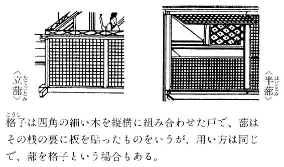

| 枕草子 ビギナーズ・クラシックス 日本の古典 (角川ソフィア文庫) | |
| 角川書店 | |
| 角川書店 (2011) | |

ビギナーズ・クラシックス 日本の古典
枕草子
清少納言／角川書店＝編
本作品の全部または一部を無断で複製、転載、配信、送信したり、ホームページ上に転載することを禁止します。また、本作品の内容を無断で改変、改ざん等を行うことも禁止します。
本作品購入時にご承諾いただいた規約により、有償・無償にかかわらず本作品を第三者に譲渡することはできません。
本作品を示すサムネイルなどのイメージ画像は、再ダウンロード時に予告なく変更される場合があります。
本作品は縦書きでレイアウトされています。
また、ご覧になるリーディングシステムにより、表示の差が認められることがあります。
本文中に「＊」が付されている箇所には注釈があります。その箇所を選択すると、該当する注釈が表示されます。
はじめに
今から一千年ほど前、平安時代という貴族が雅な文化を作った時代に、清少納言と呼ばれる才気あふれる女性がいた。
彼女は、中宮（＝天皇の后の最高位）である定子という方に、二十代の終わりから三十代半ばにかけての約七年間仕えた。定子のまわりには清少納言のような優れた女性たちが女房（＝侍女）として集められていた。定子は彼女よりも十歳ほど年下で自身も教養深かった。定子の後宮には、その洗練された空気にあこがれた青年貴族たちが集まり、サロンとなっていった。女房の生活は、華やかなサロンの一員として文化を作り上げることだった。それらの日々の中で、定子を中心とする人々の、そして清少納言の感性を書き綴ったのが、『枕草子』である。
本書は有名な章段を中心に、まず「現代語訳（総振り仮名付き）」で『枕草子』の世界にすぐに入りこめるようにした。そして直接「原文（総振り仮名〈歴史的仮名遣い〉付き）」に触れ、すばらしいリズムとことばのおもしろさを味わい、「寸評」で時代背景や人間関係を理解できるようにした。また、読み切りになっているので、どの章段から読み始めても、読者はきわめて短時間で、『枕草子』の感性のみずみずしさを現代によみがえらせることができる。
本書はこれから『枕草子』に親しもうという方のための入門書である。読者の方々を古典の世界にいざなうきっかけになることを心から願っている。
平成十三年五月
坂口由美子
※原文は、角川文庫版『枕草子』に拠り、適宜表記を改めた。
※振り仮名は、特に原文にある場合を除き、一般的と思われる読み方に統一し、原文以外の箇所ではすべて現代仮名遣いとした（「御」は「おほん」と読むべきとする説があるが、ここでは便宜上「おん」とした）。
※本書は、先にミニ文庫（ミニ・クラシックス）として刊行したものに加筆して文庫化したものである。
目次
漢数字は角川文庫版による段数を示し、段の原文の冒頭部分を掲げた。ただし、〈 〉は、本書がその途中から採ったことを示した。
〈二〉小正月――ころは、正月
〈二十〉女性の教養は一に習字、二に楽器、三に和歌――清涼殿の丑寅の隅の
（二十一）女も世の中を知ろう――生ひ先なく
〈二十二〉春の人事のゆくえ――すさまじきもの
（三十四）語りかける花たち――木の花は
〈三十六〉端午の節句はとってもにぎやか――節は
（三十八）鳥は――鳥は
（三十九）上品なもの――あてなるもの
（四十）虫は――虫は
（四十二）似合わないもの――にげなきもの
〈四十六〉行成との友情――職の御曹司の西面の
（五十九）川は――河は
〈六十〉暁の別れの美学――暁に帰らむ人は
〈六十四〉草の花はススキが一番――草の花は
（七十二）めったにないもの――ありがたきもの
（七十三）細殿はすてきな所――内裏の局は
〈七十八〉草の庵――頭の中将の、すずろなる虚言を
（八十九）無名という名の琵琶――無名といふ
（九十三）あきれてものも言えない――あさましきもの
（九十四）残念でがっかりなもの――くちをしきもの
〈九十五〉父元輔の名前は重い――五月の御精進のほど
（九十八）クラゲの骨はどんな骨――中納言参り給ひて
（百五）見苦しいもの――見苦しきもの
（百十一）普段と違って格別に聞こえるもの――常より異に聞こゆるもの
〈百十六〉寺に籠る楽しみ――正月に寺に籠りたるは
（百十八）みすぼらしくてつらそうに見えるもの――わびしげに見ゆるもの
（百二十一）さまにならないもの――無徳なるもの
（百二十三）ばつの悪いもの――はしたなきもの
（百二十六）晩秋の雨上がり――九月ばかり、夜一夜降り明かし
（百三十一）逢坂の関――頭の弁の、職に参り給ひて
（百三十四）退屈なもの――つれづれなるもの
（百三十五）退屈を紛らわすもの――つれづれ慰むもの
〈百三十八〉ヤマブキの花びら――殿などのおはしまさで後
（百四十二）恐ろしげなもの――恐ろしげなるもの
（百四十四）品のないもの――いやしげなるもの
（百四十五）どきどきして胸がつぶれそうになるもの――胸つぶるるもの
（百四十六）かわいらしいもの――うつくしきもの
（百四十七）人前でいい気になるもの――人ばへするもの
（百五十）むさくるしいもの――むつかしげなるもの
（百六十一）近くて遠いもの――近うて遠きもの
（百六十二）遠くて近いもの――遠くて近きもの
（百七十三）女の一人住まい――女の一人住む所は
（百七十四）実家は窮屈――宮仕へ人の里なども
（百七十九）初めて御殿に参ったころ――宮に初めて参りたるころ
（百八十三）病だってすてきに――病は
（百八十八）幻滅するもの――ふと心劣りとかするものは
（百九十）風に吹かれて――風は
（百九十一）野分の翌朝――野分のまたの日こそ
（二百九）初夏の山をゆけば、ヨモギが香る――五月ばかりなどに、山里に
（二百十四）歌を詠むとき――九月二十日余りのほど
（二百十八）水晶のかけら散る――月のいと明かきに
（二百十九）大きい方が良いもの――大きにてよきもの
（二百二十）短い方が良いもの――短くてありぬべきもの
（二百四十五）ただ、ひたすら過ぎゆくもの――ただ過ぎに過ぐるもの
（二百四十六）うっかり忘れられるもの――殊に人に知られぬもの
（二百五十二）世の中で一番嫌なのは――世の中に、なほいと心憂き
（二百五十五）悪口はいけないけれど――人の上言ふを腹立つ人こそ
〈二百六十一〉うれしいもの――うれしきもの
（二百八十四）香炉峰の雪――雪のいと高う降りたるを
（あとがき）この草子が世に出たのは――この草子、目に見え
コラム 目次
【訳文】
春は、なんといってもほのぼのと夜が明けるとき。だんだんとあたりが白んで、山のすぐ上の空がほんのりと明るくなって、淡い紫に染まった雲が細くたなびいているようす。
夏は、夜がすてきだ。月が出ていればもちろん、闇夜でも、ホタルがいっぱい飛び交っているようす。また、ほんの一つ二つ、ほのかに光っていくのもいい。雨の降るのも、また、いい。
秋は、夕暮れ。夕日が赤々と射して、今にも山の稜線に沈もうというころ、カラスがねぐらへ帰ろうと、三つ四つ二つなど思い思いに急ぐのさえ、しみじみと心にしみる。まして、カリなどで列を連ねて渡っていくのが、遥か遠くに小さく見えるのは、なかなかにおもしろい。すっかり日が落ちてしまって、風の音、虫の音などがさまざまにかなでるのは、もうことばに尽くせない。
冬は早朝。雪が降り積もっているのはもちろんのこと、霜が真っ白に降りているのも、またそうでなくても、はりつめたように寒い朝、火などを大急ぎでおこして、炭火を部屋から部屋へ運んでまわるのも、いかにも冬の早朝らしい。昼になってだんだん寒さが緩むと、火鉢の炭火も白く灰をかぶってしまって間の抜けた感じだ。
【原文】
春は、曙。やうやう白くなりゆく、山際すこし明かりて、紫立ちたる雲の細くたなびきたる。
夏は、夜。月のころはさらなり、闇もなほ、蛍の多く飛び違ひたる。また、ただ一つ二つなど、ほのかにうち光りて行くも、をかし。雨など降るも、をかし。
秋は、夕暮れ。夕日のさして、山の端いと近うなりたるに、烏の、寝所へ行くとて、三つ四つ二つなど、飛び急ぐさへ、あはれなり。まいて、雁などの連ねたるが、いと小さく見ゆるは、いとをかし。日入り果てて、風の音、虫の音など、はた、言ふべきにあらず。
冬は、早朝。雪の降りたるは、言ふべきにもあらず、霜のいと白きも、またさらでも、いと寒きに、火など急ぎおこして、炭持て渡るも、いとつきづきし。昼になりて、ぬるくゆるびもていけば、炭櫃・火桶の火も白き灰がちになりて、わろし。
【寸評】
春秋の優劣や、春は桜、秋は月といったことは古くからいわれているが、清少納言の歯切れのよい筆は、四季の新しい美しさを立体的に描き出した。春の曙の雲の、刻一刻変わっていく色合い。夏の夜の幻想的な蛍の光。夜半ふと気づいた雨の音。ふだんは嫌われもので不細工な烏も、人恋しい秋の夕暮れにはしみじみと哀れを誘う。秋の夜長に耳を澄ませば、風の音と虫の音はさながらコンツェルトを奏でるようだ。冬は日だまりの温もりかと思いきや、一転、凍てつく寒さの中できびきびと働く人々の姿を描き出す。とくに、冬の寒気が緩むのを「わろし」と言い切るところに、王朝の才女の五感の鋭さが表れている。
清少納言はその才を買われて、一条天皇の中宮（＝最高位の妃）定子（藤原道隆の娘）に仕えた。当時、貴族はこぞって娘を天皇の夫人としてさし出し、娘が天皇の寵愛を得ることによって、政治権力をつかもうとしていた。そのため、娘のもとに、才能のある貴族の女性を女房（＝侍女）として集め、洗練された文化サロンを作る必要があったのである。
定子の父道隆の没後、一条天皇の後宮では藤原道長の娘彰子が力をもつようになるが、この彰子に仕えたのが『源氏物語』の作者、紫式部であった。
【コラム】 『枕草子』第一段について
第一段は、古来、名文として名高い。その名文たる所以はどこにあるのか。一言で言うならば、それは、絶え間ない変化であり、際立った対比であろう。
文の構造は、春夏秋冬の四段に分かれる。「春の曙」と「秋の夕暮れ」は和歌の伝統であり、「夏の夜」と「冬のつとめて」はそれまで顧みられなかった新しさである。各段冒頭の一文は体言止めで統一される。それぞれの情趣に対する評価は、春は何もなく、夏は「さらなり」「をかし」、秋は「あはれなり」「いとをかし」「言ふべきにあらず」、冬は「言ふべきにもあらず」「いとつきづきし」「わろし」である。繰り返しつつしだいに変化し、最後にのみ「わろし」という転調が来て一気に終わる。
この構造の中で時間は春から冬に流れるが、同時にそれぞれの段の中では、例えば、「つとめてから昼」というような別の時間の変化がある。そして視点も、自然から人事へと変化する。
また、さまざまな対比が行われる。「曙」と「夕暮れ」、「夜」と「つとめて」、「ただ一つ二つ」と「三つ四つ二つ」。「月」と「闇・雨」、蛍は「多く」と「ほのか」、「山際」と「山の端」、「烏」と「雁」。「烏」と「雁」はまた、視覚的なものとして、聴覚的な「風の音・虫の音」と対比される。「雪・霜（白）」と「炭火（黒・赤）」。「視覚」と「聴覚」と「皮膚感覚」。
この第一段は約四百字にすぎない。その中に、これだけの変化と対比が織り込まれている。さらに、全体に一貫した動機がある。光と色である。光は「すこし明かりて」「月光」「闇」「蛍」「夕日」「雪明かり」「炭火」「昼光」。色は「紫」「黒」「赤」「白」。
ここに挙げたことはそのまま、『枕草子』という作品全体についていえることでもある。
【訳文】
（正月）七日、消え残る雪の中から若菜を摘む。青々としていて、いつもならそんなものは近くで見ない高貴な御殿の中でも、大騒ぎしているのは本当におもしろい。「白馬の節会」を見ようと、家庭の女たちもきれいに牛車をしたてて宮中に出かける。内裏の東の門の敷居を通る時、牛車が揺れて頭をぶつけあって、髪にさした櫛も落ち、用心していないから折れたりなどして皆で笑うのもまた、おもしろい。警護の詰所のところに殿上人（＝昇殿を許された者）がたくさん立っていて、ふざけて舎人（＝召使い）の弓を取り、馬どもを驚かして笑う。牛車の簾の透き間からやっとのぞいたら、立蔀（＝目隠し用の庭塀）などが見えて、女官などが行き来しているのが、とても興味深い。いったいどんな幸運に生まれついた人が、宮中で自由気ままにふるまえるのだろうと思う。といってもこうして見えるのは狭い範囲だから、舎人の顔の地肌などほんとうに黒くて、おしろいがのっていないところは、雪の下から土がまだらに見えるようで見苦しいし、馬が跳ねて騒ぐのも怖そうに見えて、つい車の中に身を引いてしまい、よくは見えない。
【原文】
七日、雪間の若菜摘み、青やかにて、例はさしもさるもの目近からぬ所にもて騒ぎたるこそ、をかしけれ。白馬見にとて、里人は、車清げにしたてて見に行く。中の御門の閾引き過ぐるほど、頭、一所にゆるぎあひ、刺櫛も落ち、用意せねば折れなどして笑ふも、またをかし。左衛門の陣のもとに、殿上人などあまた立ちて、舎人の弓ども取りて、馬ども驚かし笑ふを、はつかに見入れたれば、立蔀などの見ゆるに、主殿司・女官などの行き違ひたるこそ、をかしけれ。いかばかりなる人、九重を馴らすらむ、など思ひやらるるに、内裏にも見るは、いと狭きほどにて、舎人の顔のきぬにあらはれ、まことに黒きに、白きものいきつかぬ所は、雪のむらむら消え残りたる心地していと見苦しく、馬のあがり騒ぐなどもいと恐ろしう見ゆれば、引き入られてよくも見えず。
【寸評】
当時は陰暦なので立春（今の二月初め）とともに新年を迎えるが、春とはいっても名ばかりである。でも冬の寒さに耐え春を待ちかねた人々は、野に出て、雪の間に芽吹いた若菜を摘む。七日の若菜摘みは今も七草粥として伝わる。この日、宮中では官位昇進の儀式があり、そのあと「白馬の節会」という、二十一頭の白馬の行進があった。これを見ると一年中の邪気が払われるという。七草はこれも中国からの伝来。
当時の女性は見物に行くといっても、牛車の中から、簾ごしにのぞくだけである。それでもつい車の奥に身を引いてしまうのは、いかに女性が表に出ない存在だったかをうかがわせる。
【訳文】
十五日、小豆粥の祝い膳をお出しした後、粥を炊いた薪をちょっと隠して、女房たちが（互いにお尻を打とうと）すきをねらっているのを、打たれまいと用心して、いつも後ろに気をつけているのもおもしろい。いったいどうやったのか、うまく打ったので皆大笑いしているのは、ひどく陽気なものだ。打たれた人が悔しがるのももっともなこと。新しく通い始めた婿君が、宮中に参内（＝出勤）するしたくをしている間ももどかしく、何かにつけて自分こそはと幅をきかせている女房が、のぞいて、はりきって、奥の方でうろうろしているのを、おそばにいる女房たちは分かっていて笑う。「静かに」と手まねで止めるけれども、肝心のお姫様のほうは、何も気づかずおっとりと座っていらっしゃる。「ここのものを片付けましょう」などと言いながら近づいて、走りながら姫君のお尻を打って逃げてしまうから、まわりの女房たちは皆笑う。婿君もやられたなというようにほほえむが、姫君はとくに驚いたふうもなく、ちょっと顔を赤らめているのがすてきだ。また、女房同士打ち合ったり、男をさえ打っているようだ。どういうつもりなのか、打たれて泣き、腹を立てて、呪ったり不吉なことを言ったりするのもいておかしい。宮中のような高貴な所でも、きょうは無礼講で上下乱れて、遠慮もない。
【原文】
十五日、節供参り据ゑ、粥の木ひき隠して、家の御達、女房などのうかがふを、打たれじと用意して、常に後を心遣ひしたる気色も、いとをかしきに、いかにしたるにかあらむ、打ちあてたるは、いみじう興ありてうち笑ひたるは、いとはえばえし。ねたしと思ひたるもことわりなり。新しう通ふ婿の君などの、内裏へ参るほどをも心もとなう、所につけて我はと思ひたる女房の、のぞき、気色ばみ、奥の方にたたずまふを、前に居たる人は心得て笑ふを、「あなかま」と、まねき制すれども、女はた、知らず顔にて、おほどかにて居給へり。「ここなる物、取り侍らむ」など言ひ寄りて、走り打ちて逃ぐれば、ある限り、笑ふ。男君も、憎からずうち笑みたるに、ことに驚かず、顔すこし赤みて居たるこそ、をかしけれ。また、かたみに打ちて、男をさへぞ打つめる。いかなる心にかあらむ、泣き腹立ちつつ、人をのろひ、まがまがしく言ふもあるこそ、をかしけれ。内裏わたりなどのやむごとなきも、今日は皆乱れて、かしこまりなし。
【寸評】
小正月の行事。元日の大正月に対して十五日は私的な祝いである。この日は小豆粥を食べる風習があった。十五日は望月（満月）の日なので望粥ともいう。粥を炊いた薪で女性の尻を打つと男の子を生むという。この風習は今でも「嫁叩き」などといわれ、地方に残る。
この場面は、ある貴族の新婚夫婦と二人を取り巻く女房のようすである。貴族の姫君は、万事につけておっとりしているのが上品でよい、とされた。当時は通い婚で、この家の姫君にもよい婿君が通い始めたところ。慶びが重なり、ますます明るい新春である。
【訳文】
中宮様のところにうかがって、その時のこと（生昌の家に入るのに、車を乗り付けることができず、降りて歩くことになった。私たち女房は髪もなでつけないふだん着姿を皆に見られてしまい、ひどく腹が立った、そのこと）を申し上げると、中宮様は「ここだって、みんな見ていますよ。どうしてそんなに油断していたの」とお笑いになる。「でも、なじみの連中は、私たちが念入りにおめかしなどしたらかえってびっくりするでしょう。それにしても、これほどのお屋敷なのに車の入らない門だなんて。生昌が顔を見せたら笑ってやりましょう」などと言っているところへ、「これを中宮様に差し上げてください」と、生昌がやって来てすずり箱を差し出した。「あら、あなたってしようがない方ですわね。どうして門をあんなに狭くしてお住まいなの」と言うと、生昌は笑って、「家というものは身分相応にするものです」とかわす。「そうはいっても、門だけを高く立派に作る人もいたではありませんか」と言うと、「これはこれは恐れ入りました」と驚いて、「それは、于定国の故事ではございませんか。昔、進士（＝漢文の専門家）ででもなかったら、わかりっこないことでございますよ。私はたまたまこの（学問の）道に進んでおりますので、このようにわかっておりますが」と言う。「あなたのおっしゃる道というのもたいしたものじゃなさそうですわね。筵を敷きましたけれど、皆でこぼこに落ちて大騒ぎでしたわ」と言うと、生昌は「雨が降りましたので、そんなこともございましたでしょう。ええ、ええ、まだまだおっしゃりたいことがおありでございましょうねえ。さっさと退散いたしましょう」と言って立ち去った。
【原文】
御前に参りて、ありつるやう啓すれば、「ここにても、人は見るまじうやは。などかは、さしもうちとけつる」と、笑はせ給ふ。「されどそれは、目馴れにて侍れば、よくしたてて侍らむにしもこそ、驚く人も侍らめ。さても、かばかりの家に車入らぬ門やはある。見えば笑はむ」など言ふほどにしも、「これ、参らせ給へ」とて、御硯などさし入る。「いで、いとわろくこそおはしけれ。など、その門はた、狭くは造りて住み給ひける」と言へば、笑ひて、「家のほど、身のほどにあはせて侍るなり」と答ふ。「されど、門の限りを高う造る人もありけるは」と言へば、「あな恐ろし」と驚きて、「それは于定国がことにこそ侍るなれ。古き進士などに侍らずは、承り知るべきにも侍らざりけり。たまたまこの道にまかり入りにければ、かうだにわきまへ知られ侍る」と言ふ。「その御道も、かしこからざめり。筵道敷きたれど、皆おちいり騒ぎつるは」と言へば、「雨の降り侍りつれば、さも侍りつらむ。よしよし、また仰せられかくることもぞ侍る。まかり立ちなむ」とて、去ぬ。
【寸評】
お産のため、中宮藤原定子が平生昌の家にお移りになった時のこと。お産のときは実家に帰らなければならないが、このとき中宮の実家はもうなかった。次段でも述べるが、中宮の父藤原道隆はすでになく、叔父道長によって、中宮の兄伊周は失脚・流罪、そのうえお屋敷は火事で焼失。それで中宮は大進という、それほどの身分でもない生昌の屋敷に移るしかなく、したがって門も板葺屋根で粗末だった。
清少納言には漢文の素養があった。当時学問といえば漢文だったが、女性が漢文を知っていると煙たがられた。ここで彼女は、中国の故事（子孫のために高い門を作り、そのとおり子孫が栄えたという）を引き、さらに生昌の言う学問の道を、ひどいぬかるみの道ととりなして生昌をやりこめたのである。
やりこめられて生昌は彼女の才気に魅かれたものか、その夜、勝手知ったる自分の屋敷、彼女の寝所に忍び込む。障子を十五センチほど開けて、妙な上ずった嗄れ声で「入ってもよろしいでしょうか」と何度も聞く、その姿は明かりに照らされて丸見えである。そばで寝ていた若い女房たちに散々に笑われて、またまた退散。色事とは無縁と見えた冴えない中年男、中宮様をお迎えして舞い上がったものか。入りたいならいきなり入ればいいものを、聞かれて「いいです」と答える女がどこにあろうか、と彼女の筆は手厳しい。その後も生昌は、なまっては笑われ、兄の自慢をしては笑われ、散々である。そんなぶざまな生昌を、中宮は大らかにやさしくとりなす。中宮をおそった悲惨な運命にはここでは一切触れられない。
実はこの生昌は、流罪になった伊周が都に潜入したのを密告し、彼の兄も、中宮職の長官だったが道長をはばかり、仮病を使って辞任したという。権力者におもねるのは世の常とは言いながら、許しがたい思いがこの辛辣な筆致となったのだろうか。
【訳文】
清涼殿（＝天皇のふだんの御殿）の縁側のてすり近くに、青磁の瓶の大きいのを置き、サクラのまことにみごとな枝で一メートル半ばかりもあるのをたくさん活けてある、それがてすりの外まで咲きこぼれている、そんなある日の昼ごろのこと。大納言様（中宮の兄、藤原伊周）が桜がさねの直衣（＝平常服）のしなやかなのに、濃い紫の、模様を織り出した指貫袴をはき、下着は白を重ね、一番上には濃い紅のあや織り、その鮮やかな色を直衣のすそからのぞかせた華やかな衣装でお見えになった。帝がこちらにおいでなので、戸口の前の細い板敷きでなにやらお話しになる。
御簾（＝すだれ）の中には女房たちが、桜がさねの唐衣（＝正装時の上着）をゆったりと着ている。ほかにも藤がさね、山吹がさねなどセンスのいい彩りの袖口がたくさん、蔀（＝板戸）の内側の御簾の下からこぼれ出ている。ちょうど、昼のお膳を運ぶ蔵人（＝役人）の足音が高く、「を〈オ〉ーしー」という先払いの声がするのも、うらうらとのどかですてきな春の日である。食事の用意ができたと申し上げるので、帝がおいでになる。それを大納言様はお送りして、また先ほどのサクラのもとにもどって座っていらした。
【原文】
高欄のもとに、青き瓶の大きなるを据ゑて、桜のいみじうおもしろき枝の五尺ばかりなるを、いと多くさしたれば、高欄の外まで咲きこぼれたる昼つ方、大納言殿、桜の直衣のすこしなよらかなるに、濃き紫の固紋の指貫、白き御衣ども、上には濃き綾のいとあざやかなるを出だして参り給へるに、上の、こなたにおはしませば、戸口の前なる細き板敷きに居給ひて、ものなど申し給ふ。
御簾の内に、女房、桜の唐衣どもくつろかに脱ぎ垂れて、藤、山吹など、色々好ましうて、あまた、小半蔀の御簾よりも押し出でたるほど、昼の御座の方には、御膳参る足音高し。警蹕など、「をし」と言ふ声聞こゆるも、うらうらとのどかなる日の気色など、いみじうをかしきに、果ての御盤取りたる蔵人参りて、御膳奏すれば、中の戸より渡らせ給ふ。御供に、廂より大納言殿御送りに参り給ひて、ありつる花のもとに帰り居給へり。
【寸評】
やがて、中宮も几帳（＝ついたて）のかげから敷居の近くまでお出ましになり、その輝くばかり美しいお姿に、仕える人たちは皆うっとりとして、この栄華が千年も続くようにと願うのだった。伊周は中宮の栄華を讃える古歌をゆったりと歌い始める。このとき、中宮十九歳、伊周二十一歳。二人の父は、時の第一の権力者藤原道隆。一条天皇は十五歳。若い帝は中宮の才気を愛し、道隆の地位はますます揺るぎない。その後継者伊周のこの日のいでたちは、はっとするようなあでやかさで、堂々たる貴公子ぶりだった。当時のおしゃれは色の取り合わせにある。桜がさねは表が白、裏は赤か紫。女房たちも春から初夏の色、桜がさね、藤がさね（表紫、裏青）、山吹がさね（表カラシ色、裏黄）と装いをこらしているが、女性は人前に出ない時代のこと、袖口だけを華やかに蔀戸の下から見せている。
清少納言にとって忘れられない、すばらしい宮仕えの日の一齣である。続いて、帝と中宮、女房たちのあいだでの、『古今集』の世界そのままのみやびやかなやりとりが語られる（次段）。しかし、咲き誇る桜も無情の風に散らされるようにこの栄華も長くは続かない。わずか一年あまり後、道隆は急死、伊周は関白の位を継げずに自暴自棄になり、花山上皇に矢を射かける事件にかかわって太宰府に流罪になってしまう。中宮の不幸もここから始まるが、『枕草子』の世界には現実の影の部分は書かれない。いつもこの日のように明るく華やかである。
【訳文】
「昔、村上天皇の御代に宣耀殿の女御（＝中宮に次ぐ后の位）といわれた方は、小一条の左大臣藤原師尹様の姫君でしたが、皆さんご存じでしょう。まだ、娘時代に、父の大臣がお教えになったことは、『まず第一にお習字をなさい。次に七弦の琴をだれよりも上手に弾けるようになさい。それから、古今集の歌二十巻全部を暗記なさい』ということでした。これをご存じだった帝は物忌み（＝陰陽道で、災いを避けるため、家にこもって身を慎むこと）の日、『古今集』を持っていらして、女御との間に几帳を隔ててお座りになったので、女御は不思議に思われました。帝は、『古今集』を広げて、『その月、こういう時、その人の詠んだ歌は何という歌か』と質問なさったので、女御は、試験をなさるおつもりだったのか、とおもしろくお思いになったものの、覚え違いがあったり、忘れたりしたところがあったらほんとうに恥ずかしいと、どれほど御心配だったでしょう。帝は、和歌の方面に詳しい女房を二、三人ばかりお呼びになって、碁石で勝ち負けを数えさせようとなさるなど、なんと優雅でおもしろいこと。お側にお仕えしていた方々がうらやましい。帝が無理に答えを求められると、女御は利口ぶってその歌を最後までおっしゃることはなかったものの、すべて少しも間違えることがなかったのです。なんとかして少しでも違った所を見つけたらやめようとされたのですが、とうとう十巻までいってしまいました。『もう、これ以上はむだだ』と本にしおりを挟んでお二人はお休みになられた、これもまたすばらしいことですね......」
【原文】
「村上の御時に、宣耀殿の女御と聞こえけるは、小一条の左の大臣殿の御女におはしけると、誰かは知り奉らざらむ。まだ姫君と聞こえける時、父大臣の教へきこえ給ひけることは、『一には、御手を習ひ給へ。次には、琴の御琴を、人より異に弾きまさらむとおぼせ。さては、古今の歌二十巻を皆うかべさせ給ふを、御学問にはせさせ給へ』となむ、聞こえ給ひける、と、きこしめしおきて、御物忌みなりける日、古今を持て渡らせ給ひて、御几帳をひき隔てさせ給ひければ、女御、例ならずあやし、と、おぼしけるに、草子を広げさせ給ひて、『その月、何のをり、その人の詠みたる歌は、いかに』と、問ひ聞こえさせ給ふを、かうなりけり、と心得給ふも、をかしきものの、僻覚えをもし、忘れたるところもあらば、いみじかるべきこと、と、わりなうおぼし乱れぬべし。その方におぼめかしからぬ人、二、三人ばかり召し出でて、碁石して数置かせ給ふとて、強ひ聞こえさせ給ひけむほどなど、いかにめでたうをかしかりけむ。御前に候ひけむ人さへこそ、うらやましけれ。せめて申させ給へば、さかしう、やがて末まではあらねども、すべてつゆ違ふことなかりけり。いかでなほ、すこしひがこと見付けてをやまむ、と、ねたきまでにおぼしめしけるに、十巻にもなりぬ。『さらに不用なりけり』とて、御草子に夾算さして、大殿籠りぬるも、まためでたしかし。......」
【寸評】
結局帝はまた起き出して、続きを夜の更けるまでなさったが、女御は負けなかった。女御の父の大臣は失敗のないように一晩中祈り続けたとか。この話は前段の続きで、昼食を終えた一条天皇が見えると、中宮は女房たちに覚えている古歌を色紙に書くように求めた。急なことで皆困ったが、清少納言は、『古今集』の春の巻にある藤原良房の歌（娘である文徳天皇の后明子の前に桜が活けてあるのを見て、その栄華を讃えた歌）を少し変え、中宮を讃える歌にして書いた。中宮はその機転をほめ、ついでに、この宣耀殿の女御の話をされたのである。
【コラム】 古今集
『万葉集』『新古今集』と並ぶ三大歌集の一。延喜十三年（九一三）頃成立。最初の勅撰（＝天皇の命令によって選ばれた）和歌集。形式・歌風が、長く和歌の手本となる。二十巻。約一一〇〇首。巻ごとに、春夏秋冬・恋・哀傷（＝死者を悼む歌）などに分類。四季は季節の、恋は経過の推移に従って配列される。巻頭に紀貫之による仮名序、巻末に紀淑望による真名序（＝漢字の序文）を付す。歌風は洗練され、掛詞・縁語・比喩・擬人法などを多用、技巧的で観念的。主な歌人に、紀貫之・凡河内躬恒・紀友則・壬生忠岑（以上撰者）・在原業平など。
【訳文】
将来に望みもなく、ただいちずに夫にすがって、いつわりの幸せに安住しているような女を見ると、うっとうしく、ばかみたいだと思えて、やはり、きちんとした家の娘などは、宮中に女房として仕えさせて世の中を見せたいし、できれば、典侍などの役目をしばらく務めさせたいと思う。
宮仕えする女を、すれっからしになって世間体がよくない、などと言う男は本当に憎らしい。しかし、確かにそういうこともあるのだろうけれど。恐れ多くも、帝をはじめ、上達部（＝三位以上の高官）、殿上人（＝昇殿を許された者）、五位・四位の者はいうまでもなく、女房の姿を見ない人は少ない。女房のお供の者、実家からの使いの者、もっと下々の掃除人などにいたるまで会わずに隠れていられようか。男性はそれほどでもないかもしれないが、宮仕えをしている限りは同じようなものだろう。
宮仕えを経験した人を、奥様と呼んで大切にしている場合、人に顔を知られていることを奥ゆかしくないように思うのはもっともだけれども、反面、典侍などという役目で時々宮中に参内し、賀茂の祭りの使者などに立ったりするのも、晴れがましいことだろう。そうした役目ながら家にこもって主婦になりきっているのはなおいい。夫が受領（＝地方の長官）として、娘を五節の舞姫（＝収穫祭のときに宮中で行われる五節の舞を舞う少女）として出すことでもあれば、宮中の事情に通じていて、田舎者丸出しに人にあれこれたずねるようなことはしないだろう。奥ゆかしくていいものだ。
【原文】
生ひ先なく、まめやかに、似非幸ひなど見て居たらむ人は、いぶせく、侮らはしく思ひやられて、なほ、さりぬべからむ人の女などは、さしまじらはせ、世のありさまも見せ習はさまほしう、典侍などにてしばしもあらせばや、とこそ、おぼゆれ。
宮仕へする人をば、あはあはしう、わろきことに言ひ思ひたる男などこそ、いと憎けれ。げに、そも、またさることぞかし。かけまくもかしこき御前をはじめ奉りて、上達部、殿上人、五位・四位はさらにも言はず、見ぬ人は少なくこそあらめ。女房の従者、その里より来る者、長女、御厠人の従者、たびしかはらといふまで、いつかはそれを恥ぢ隠れたりし。殿ばらなどは、いとさしもやあらざらむ。それも、ある限りは、しか、さぞあらむ。
上など言ひて、かしづき据ゑたらむに、心憎からずおぼえむ、ことわりなれど、また、内裏の典侍などいひて、をりをり内裏へ参り、祭りの使ひなどに出でたるも、面立たしからずやはある。さて、こもりゐぬる人は、まいてめでたし。受領の、五節出だすをりなど、いとひなび、言ひ知らぬことなど、人に問ひ聞きなどは、せじかし。心憎きものなり。
【寸評】
貴族の女は顔を見せてはいけないという時代。自分の娘でも、成人したら、几帳を隔てて会わねばならない。しかも顔は扇でしっかり隠していることが多かった。恋愛も、見たこともない相手にする。結婚は男が夜、三日通って成立したので、ようやく三日目の朝の光で女の顔を見ることができた。だから、宮仕えをしてたくさんの男性や下々の者にまで顔を見られるのは、はしたないだの、すれっからしになるだの言われたわけで、女房や女房づとめの経験者はちょっと軽く見られる傾向があった。千年たった今でも、男の本音は変わらないような気もするが。
【訳文】
似合わなくて、期待はずれで、気持ちがさめてしまうもの。昼日中に吠える犬。春まで残っている網代。三、四月（今の四、五月）の紅梅がさねの着物。牛の死んでしまった牛飼い。赤ん坊のなくなってしまった産室。火をおこさない火鉢・いろり。学者の家に、続いて女の子ばかり生まれたの。方違え（＝陰陽道で、災いを避けるためにいったん方角を変えてから目的地に向かうこと）に行ったのに御馳走をしない家。まして節分など特別な日は、ほんとうに期待はずれだ。
地方からよこした手紙に何も贈り物がついていないの。京の都からの手紙だってそうだろう。でもそれには、むこうが知りたいニュースがいっぱい書いてあって世の中の動きもわかるから、手紙だけで十分だ。知人のところに、わざわざきれいに書いて持たせた手紙の返事を、もうそろそろ持って来るはずなのに、妙に遅いなと待っているうちに、先ほどの手紙を、立て文でも結び文でも、とても汚らしく扱ってぶくぶくにして、封の墨などは消えて「いらっしゃいませんでした」とか、「物忌みということで受け取っていただけませんでした」とか言って持って帰ってきたりするのは、とてもがっかりして、すっかりしらけてしまう。
【原文】
すさまじきもの 昼吠ゆる犬。春の網代。三、四月の紅梅の衣。牛死にたる牛飼ひ。乳児亡くなりたる産屋。火おこさぬ炭櫃・地火炉。博士のうち続き女子生ませたる。方違へに行きたるに、饗応せぬ所。まいて節分などはいとすさまじ。
人の国よりおこせたる文の、物なき。京のをも、さこそ思ふらめ。されどそれは、ゆかしきことどもをも書き集め、世にあることなどをも聞けば、いとよし。人のもとに、わざと清げに書きてやりつる文の返事、今は持て来ぬらむかし、あやしう遅き、と、待つほどに、ありつる文、立て文をも結びたるをも、いと汚げに取りなし、ふくだめて、上に引きたりつる墨など消えて、「おはしまさざりけり」もしは「御物忌みとて取り入れず」と言ひて持て帰りたる、いとわびしく、すさまじ。
【寸評】
「すさまじ」は、期待が裏切られ、熱意が冷めて、冷えてしらけた気持ちをいう。網代は冬のもの。紅梅がさねは冬から早春のもので、陰暦の三、四月は今の四、五月だから、そこで着るのは時期遅れ。もう桜も散ったというのに。季節的に不調和な取り合わせは興ざめである。牛がいてこその牛飼い、赤ん坊がいてこその産室。産室は汚れを避けるため、そのつどわざわざ建てるもので、今か今かと生まれるのを待ったのに、あるべきものがないのはむなしい。学者は男子しか継げないので、女子ではせっかくの家業もとだえてしまう。節分は季節の変わり目の特別な日。どんな返事が来るかと待ちかねている手紙。どれも期待が大きいだけに、結果が裏切られたときは気持ちが冷えて寒々としてしまう。
【訳文】
（期待外れですっかりしらけてしまうもの）役所の除目（＝人事異動）の時期に、任官できなかった人の家。今年は必ずと聞きこんで、前に仕えていて今はよそへ行ったり、田舎に引っ込んだりしていた連中が皆集まってきて、出たり入ったりする車の轅もぎっしり立て込み、神社に祈願するときには、我も我もとお供して、食べたり飲んだり大騒ぎをしていたが、除目が終わってしまう明け方になっても、門を叩く音もしない。「おかしいな」と聞き耳をたてると、先払いの声がして、上達部（＝高級官僚）などは皆帰ってしまった。よい知らせを得ようと宵のうちから出て寒がり震えていた下男が、とてもだるそうに歩いてくるので、騒いでいた連中は察して、どうだったかと聞く気にもならない。よそからやって来た者などが、「こちらの殿様は今度は何におなりでしたか」と聞くと、「どこそこの前の国司ですが」などと（前の官名を）必ず答える。本気で当てにしていた者は、とても情けないと思っている。翌朝になってぎっしりと詰めかけていた者たちは一人減り、二人減り、そっと出て行ってしまう。古くからお仕えしていて、そうもあっさり離れていけない者は、来年国司が欠員になる国々を指折り数えたりして、のそのそ歩いている。気の毒で、期待はずれを絵に描いたような風景だ。
【原文】
（すさまじきもの） 除目に司得ぬ人の家。今年は必ず、と聞きて、はやうありし者どものほかほかなりつる、田舎だちたる所に住む者どもなど、皆集り来て、出で入る車の轅も隙なく見え、もの詣でする供に我も我もと参り仕うまつり、物食ひ酒飲み、ののしりあへるに、果つる暁まで門たたく音もせず、「あやしう」など、耳立てて聞けば、前駆追ふ声々などして上達部など皆出で給ひぬ。もの聞きに宵より寒がりわななきをりける下衆男、いともの憂げに歩み来るを、居る者どもは、え問ひにだに問はず、外より来たる者などぞ、「殿は、何にかならせ給ひたる」など問ふに、答へには「某の前司にこそは」などぞ、必ず答ふる。まことに頼みける者は、いと嘆かしと思へり。つとめてになりて、隙なく居りつる者ども、一人、二人すべり出でて去ぬ。古き者どもの、さもえ行き離るまじきは、来年の国々、手を折りてうち数へなどして、ゆるぎ歩きたるも、いとほしう、すさまじげなり。
【寸評】
除目は春秋の二度行われた。これは春の県召し（＝地方官の任命）で、正月半ばに行われ、三夜にわたった。この明け方は三日目のこと。国司は、位としては中間管理職でそれほど高くはないが、生活がかかっている。秋には大臣以外の都の官職を決めた（司召しという）。第二段＊にも、雪が降る中、任官の申請書を持って、女房の部屋を回り、口添えを頼む年配の人のようすが書かれている。景気のよさそうな所にはあっという間に人が集まり、だめだとわかるとさっと散って行く。今も昔も変わらない。寒い時期だけに、なおさら寒々とした情景だ。
貴族の身分を表すのは、位階と官職である。最も高いのは上達部で、位階では正一位から従三位まで、官職としては摂政・関白・太政大臣・左右大臣・大納言・中納言・近衛大将などが相当する。ただし、参議は四位でもこの中に入る。次が殿上人で、清涼殿の殿上の間に昇殿を許された。位階では、正四位上から従五位下まで、及び六位の蔵人。官職としては、弁官・少納言・近衛中将・衛門督・少将などが相当する。昇殿を許されない六位以下を地下といった。地方官はほとんどが地下である。
【訳文】
（癪にさわるもの）たいしたこともないくだらない人が、にやにやしながらさかんにしゃべっているの。火鉢やいろりなどに手のひらをひっくりかえしひっくりかえし、しわを延ばしたりしながらあぶっている者。いったい若い人でそんなことをする人があろうか。年寄りくさい人にかぎって、火鉢のふちに足までのせて、しゃべりながらこすりつけたりする。そんな無作法な者は、人の家にやってくると、座ろうとするところを、まず扇でぱたぱたとあおぎちらしてごみを払いのけ、なかなか座る場所が決まらずにふらふらして、あげくに、狩衣（＝ふだん着る略服）の垂れを下に巻きこんで座ったりするにきまっている。こんなことをするのは、下々の者かと思っていたが、そこそこちゃんとした身分の式部の大夫（＝式部省の高官）といった人がやったことなのである。
また、酒を飲んでわめき、口の中をせせり、鬚があれば鬚をなで、杯を人に押し付けなどするようすはほんとうに癪にさわる。「もう一杯飲め」などと言うに違いない。体を揺すり、頭を振り、口をへの字に曲げて、まるで子供が「殿様のところへうかがって」などと童謡でも歌うような顔をする。そんなことをれっきとした身分の人がなさるのを見たので、全く幻滅である。
なんでもかんでも人のことをうらやましがり、自分の身の上をこぼし、人の噂話が大好きで、ほんのつまらないことでも知りたがり、聞きたがって、話してやらないと恨んだり文句を言ったりする。またほんのちょっと聞きかじっただけのことを、もともと知っていたようにとくとくと人に話すのも、ほんとうに腹立たしい。
【原文】
（にくきもの） なでふことなき人の、笑がちにて、ものいたう言ひたる。火桶の火・炭櫃などに、手の裏うち返しうち返しおしのべなどして、あぶりをる者。いつか、若やかなる人など、さはしたりし。老いばみたる者こそ、火桶の端に足をさへもたげて、もの言ふままに押しすりなどはすらめ。さやうの者は、人のもとに来て、居むとする所を、まづ扇してこなたかなたあふぎ散らして、塵掃き捨て、居も定まらずひろめきて、狩衣の前巻き入れても居るべし。かかることは、言ふかひなき者の際にやと思へど、すこしよろしき者の、式部の大夫などいひしが、せしなり。
また、酒飲みてあめき、口を探り、鬚ある者はそれをなで、盃、異人に取らするほどの気色、いみじうにくしと見ゆ。「また飲め」と言ふなるべし、身震ひをし、頭振り、口わきをさへ引き垂れて、童の「こう殿に参りて」など謡ふやうにする。それはしも、まことによき人のし給ひしを見しかば、心づきなしと思ふなり。
もの羨みし、身の上嘆き、人の上言ひ、露塵のこともゆかしがり、聞かまほしうして、言ひ知らせぬをば、怨じそしり、また僅かに聞き得たることをば、わがもとより知りたることのやうに、異人にも語り調ぶるも、いとにくし。
【寸評】
にくし──今の流行語で言えば、チョームカツク、というところか。ずうずうしい無作法な年寄り。式部省というのは礼儀に関する役所だから、よけいに悪い。酔っ払いの酔態。愚痴っぽく、噂話が好きで根掘り葉掘り聞く人。
これ以外にも「にくきもの」はたくさん挙がっている。硯に髪が入ったまま磨られている、また墨が粗悪で中に石が入っていて、磨るとキシキシきしんで鳴る。ぞくぞくする不快な音と感触。取り除こうにも難しい。急病人が出て、やっと探して連れて来た修験者（＝祈って病気の原因の霊、もののけを追い出して治す人）が、商売繁盛でくたびれているのか、座るとすぐに寝呆け声になる。話を聞こうとする時に泣き出す赤ん坊。カラスが集まってバタバタガアガアやっている。こっそり忍んで来る恋人を知っていて吠えたてる犬。
宮仕えする女房が、局（＝控えの私室）に忍んで来る恋人を、皆が寝静まるまでへんな所に隠したら、待ちくたびれたのか鼾をかく。また、忍び入るのにおおげさな長烏帽子なんかかぶって来て、それでも人に気づかれまいと慌てて入る時、ぶつけてゴソッと音をたてる。簾をくぐる時ひっかけてサラサラ、引き戸やふすまを乱暴にガタピシ、無神経でドジな恋人のふるまいにイライラ。
眠いのに顔の回りを飛ぶ蚊のわびしげな羽音。でしゃばりの新参者が物知り顔にベラベラ。昔の女をペラペラ褒める男。音高くクシャミしてまじないをブツブツ......。
共通するのは、「場違いで不快な音」のようだ。
【訳文】
胸のどきどきするもの。スズメの子を飼う。赤ん坊を遊ばせている所の前を通る。上等の香をたいて、一人横になっている時。舶来の鏡が少し曇ったのを覗き込んだ時。身分の高そうな男が牛車を止めて、供の者に何か尋ねさせているの。髪を洗い、お化粧をして、香りをよく薫きこんで染みこませた着物などを着た時。別に見る人もない所でも、心の中ははずんでとてもすてきだ。待っている男のある夜、雨の音、風が吹きがたがた音がするのも、はっと胸が騒ぐ。
【原文】
心ときめきするもの 雀の子飼ひ。乳児遊ばする所の前渡る。よき薫き物たきて、一人臥したる。唐鏡のすこし暗き見たる。よき男の、車停めて、案内し問はせたる。頭洗ひ、化粧じて、香ばしう染みたる衣など着たる。ことに見る人なき所にても、心のうちは、なほいとをかし。待つ人などのある夜、雨の音、風の吹き揺るがすも、ふと驚かる。
【寸評】
「心ときめき」は、危なっかしさからくる不安や微かな期待などで、ひやひやわくわくするようすをいう。
当時、雀の子を飼うのが流行っていたという。うまく育つかどうか不安である。赤ん坊も同じ、けがでもするのではないかと、不安でどきどきする。薫き物はいろいろな香を調合して作った練り香。薫いて室内にくゆらせたり、衣服に染み込ませたりした。高価な鏡の曇りは広がるのではないかと心配である。シャンプーしてメイクしてお気に入りの香水をつけて、女性がおしゃれをするのは、だれかに見せようという時ばかりではない。
【訳文】
過ぎ去った昔が恋しく思い出されるもの。枯れてしまったアオイの葉。人形遊びの道具。紫がかった青色、薄紫色などの布の端切れが、押しつぶされて、本の間なんかに挟まっているのを見つけたの。また、もらったときしみじみと心を動かされた手紙を、雨などが降ってすることもないような日に見つけだしたの。去年の夏の扇。
【原文】
過ぎにし方恋しきもの 枯れたる葵。雛遊びの調度。二藍、葡萄染などの裂栲の、押し圧されて、草子の中などにありける、見つけたる。また、折からあはれなりし人の文、雨など降りつれづれなる日、探し出でたる。去年のかはほり。
【寸評】
ふと見つけだした物から、記憶が鮮やかによみがえる。
葵は賀茂神社の祭り、葵祭りで使ったもの。お社・衣服・牛車・柱など、あらゆるところにつける。陰暦四月（現在は五月十五日）に行われ、京の都に夏の到来をつげる。貴族たちは牛車をしたてて華やかに行列した。祭りといえば葵祭りをさすほど有名。
雛遊びは紙で作った、子供が遊ぶおもちゃの人形（雛祭りに飾るようになったのは室町時代中期ごろ）。子供のころ夢中になって遊んだものか。端切れは着物を新調したときの残りだろう。あのとき心にしみたあの人からの手紙。ちょっと色の褪せた扇。手に取ると去年の夏の香りがする。
時は止めておけないけれど、ほんの少しの間だけでも手の中で温めていたい、遠い日の記憶。
【訳文】
つややかに磨き込んだ板敷きの間の端近くに、真新しいうすべりが一枚敷いてある。一メートルほどの几帳（＝ついたて）は部屋の奥の方に押しやってあるので役に立たない。外から見えないように立てるべきなのに。むしろ奥の方が気がかりなのだろう。男はもう帰ったらしい。女は薄紫色の、裏はとても濃くて表は少し色のさめかけたのか、濃い紅の綾織りでつやつやしていてまだ張りのあるのを、頭から引きかぶって寝ている。下は黄色がかった薄紅色の単衣、あるいは黄色の薄絹の単衣を着て、紅の夏用袴の腰紐が長々と着物の下にのびているのも、まだ解けたままだからだろう。端の方に、髪の毛が重なって豊かにうねっているので、さぞ長いのだろうと想像できる。そこへ、どこからの帰りだろうか、明け方の霧がひどく立ち籠めている中から、赤みがかった藍色の指貫袴にごく薄い色の狩衣、白い薄絹の、その下の紅色が透けて見えるせいであろう、つやつやとした色合の衣装、それが霧でひどく濡れたのをちょっとひっかけた男が現れた。寝乱れた髪がそそけだっているので、烏帽子（＝かぶりもの）に押し込んでいるのもしどけなく見える。その男は、アサガオの露の乾かないうちに後朝の文（＝恋人と共寝した翌朝、出す手紙）を書こうと、道の途中も気が気でなく、「麻生の下草」などと口ずさみながら家路を急いでいた。ふと、女の部屋の格子が上がっているのに気づき、御簾の端をちょっと引き上げてのぞくと、どうも恋人が今しがた帰ったばかりらしく、どんな男か気になるし、寝ている女も心ひかれる風情なのか、しばらくその寝姿を見ていると、枕元に朴に紫色の紙を貼った扇がひろげたままである。
【原文】
いとつややかなる板の端近う、鮮やかなる畳一枚うち敷きて、三尺の几帳、奥の方に押しやりたるぞ、あぢきなき。端にこそ立つべけれ。奥の後めたからむよ。人は出でにけるなるべし、薄色の、裏いと濃くて、表はすこしかへりたるならずは、濃き綾のつややかなるが、いと萎えぬを、頭ごめに引き着てぞ寝たる。香染めの単衣、もしは黄生絹の単衣、紅の一重袴の腰のいと長やかに衣の下より引かれたるも、まだ解けながらなめり。そばの方に髪のうち畳なはりてゆるらかなるほど、長さ推し測られたるに、またいづこよりにかあらむ、朝ぼらけのいみじう霧り立ちたるに、二藍の指貫に、あるかなきかの色したる香染めの狩衣、白き生絹に紅の透すにこそはあらめ、つややかなる、霧にいたうしめりたるを脱ぎたれて、鬢のすこしふくだみたれば、烏帽子の押し入れたる気色もしどけなく見ゆ。朝顔の露落ちぬさきに文書かむと、道のほども心もとなく、「麻生の下草」など、口ずさみつつ、我が方に行くに、格子の上がりたれば、御簾のそばをいささか引き上げて見るに、起きて去ぬらむ人もをかしう、露もあはれなるにや、しばし見立てれば、枕上の方に、朴に紫の紙貼りたる扇、広ごりながらあり。
【寸評】
人のけはいに女は目覚めて、とんだところを見られてしまったと思う。知らない仲ではなかったのである。男は例の扇を引き寄せ、思わせ振りにからかったりしているうちに、すっかり明るくなって、後朝の文も遅くなってしまった。男は自分が別れてきた女も、今頃はこんなふうかもしれないと思ったりする。
当時は夜、男が女の所に忍んで通い、明け方帰った。翌朝、なるべく早く後朝の文を出すのが熱心な証拠である。男が三日続けて通えば結婚が成立するが、今のように一夫一婦の同居生活をするわけではないから、男には通い所がたくさんあったり、女も二人同時に通わせていることがあった。女にとっては、保障はないがその代わり自由というわけである。
【訳文】
木の花は、濃いのでも薄いのでもコウバイ。サクラは花びらが大きくて、葉の色が深い緑で、細い枝に咲いているのがいい。フジの花は花房が長く、濃い紫のが、すばらしく立派だ。
四月の終わりか五月の初めごろ（今の六月半ばから七月にかけてのころ）、タチバナの葉が濃く青々と茂っているところに、花が真っ白に咲いているのが、雨のちょっと降った早朝などは、またとなく風情があってすてきだ。花の中から実が、まるで黄金の玉のようにあざやかにのぞくのは、朝露に濡れた明け方のサクラの美しさにも劣らない。タチバナはホトトギスが好んで棲むと聞けば、なおさら心ひかれる。
ナシの花はつまらないものといわれていて、身近に植えることもなく、ちょっとした手紙を結び付けることさえしないし、かわいげのない女性の顔などをナシの花のようだとたとえたりする。それというのも、葉の色からしてぼけたように見えるからだが、唐（＝中国）ではこの上なくすばらしいとされていて、詩にも詠まれる。それだけのことがあるのだろうと、よくよく見ると、花びらの端に美しい色艶がほのかに見える。あの楊貴妃の、玄宗皇帝のお使いに会って涙に濡れた顔を、「ナシの花が一枝、春の雨に濡れているようだ」と、白楽天の「長恨歌」で言うのは、なみたいていではなかろうと、特別なものに思うのである。
【原文】
木の花は 濃きも薄きも、紅梅。桜は、花びら大きに、葉の色濃きが、枝細くて咲きたる。藤の花は、しなひ長く、色濃く咲きたる、いとめでたし。
四月の晦日、五月の朔日の頃ほひ、橘の葉の濃く青きに、花のいと白う咲きたるが、雨うち降りたる早朝などは、世になう心あるさまに、をかし。花の中より黄金の玉かと見えて、いみじう鮮やかに見えたるなど、朝露に濡れたる朝ぼらけの桜に劣らず。郭公のよすがとさへ思へばにや、なほ、さらに言ふべうもあらず。
梨の花、よにすさまじきものにして、近うもてなさず、はかなき文付けなどだにせず、愛敬おくれたる人の顔などを見ては、たとひに言ふも、げに、葉の色よりはじめて、あはひなく見ゆるを、唐土には限りなきものにて、詩にも作る、なほさりとも、やうあらむと、せめて見れば、花びらの端にをかしき匂ひこそ、心もとなうつきためれ。楊貴妃の、帝の御使ひに会ひて泣きける顔に似せて、「梨花一枝、春、雨を帯びたり」など言ひたるは、おぼろけならじと思ふに、なほいみじうめでたきことは、類あらじとおぼえたり。
【寸評】
これらは当時好まれた花々で、衣装の色合いや美人のたとえ、また歌の題材にもされた。例えば『源氏物語』では、理想のヒロイン紫の上を桜に、光源氏の娘で、身分・美しさともに申し分のなく立派な明石の中宮を藤に、その母で、身分は劣るものの奥ゆかしく気品のある明石の上を橘にたとえている。橘は今でいう蜜柑で、初夏に咲く清楚な白い花のさわやかな香りが好まれた。宮中の正面玄関にも、左近の桜と並んで、右近の橘があった。歌の世界では、橘と郭公に限らず、梅に鶯、萩に鹿、といった組み合わせで、互いに慕い合うように擬人法で詠まれるのである。
また、当時、白楽天の詩文集『白氏文集』が大変に流行していた。とくに、唐の玄宗皇帝と美女楊貴妃との悲恋を歌った「長恨歌」は、『源氏物語』にも大きな影響を及ぼしている。楊貴妃は玄宗皇帝の寵愛を一身に集めたが、そのため玄宗は政治をおろそかにし、安禄山の乱が起こる。楊貴妃は殺されたが、玄宗の使者は妃の魂を仙界にたずねる。そこで使者は楊貴妃から形見のかんざしを渡されたという。梨の記述にあるのはこの部分である。
【コラム】 長恨歌
「長恨歌」は一二〇句、八四〇字からなる長編叙事詩。この段に採られている箇所の原文は以下のとおり。
風は仙袂を吹いて 飄飄として挙がり
猶ほ〈オ〉似たり 霓裳羽衣の舞
玉容 寂寞として 涙 闌干
梨花 一枝 春 雨を帯ぶ
（眠っていた楊貴妃の魂、今は仙女となった玉真は目を覚まし、髪は寝乱れ、花の冠もきちんとかぶらぬまま、あわてて降りて来る。風は仙女の衣をひらひらと吹き上げ、まるで霓裳羽衣の舞を舞うかのよう。玉真の玉のように美しい顔は寂しげに涙があふれ落ち、一枝の白い梨の花が春雨に濡れているかのよう）
【訳文】
空が一面に曇りがちなこのころ、中宮の御殿では、縫殿（＝衣装を縫う役所）から色とりどりの糸で組んだ薬玉が献上されたので、御帳台（＝貴人のいるところ）の柱の左右にかけておく。去年の九月九日の重陽の節句に、キクを粗末な薄絹に包んで献上したのが同じ柱に結び付けたままなのを、薬玉と取り替えて捨てた。この薬玉も重陽の節句までこうしておくが、こちらの方は垂れた糸をみんなで引き抜いて、何か結ぶのに使ったりするから、すぐになくなってしまう。
節句のお膳を中宮様にさしあげ、若い女房たちは、ショウブの櫛をさし、物忌みの札をつけたりする。唐衣・汗衫（＝ひとえの上着）などの衣装には、形のよい木の枝を、ショウブの長い根に濃淡染めの組みひもで結んだりする。いつものことで珍しくもないが、なかなか風流だ。毎年咲くからといって、サクラをいいかげんに思わないのと同じこと。
外を歩いている子供たちが、それぞれとてもおしゃれしているつもりで、しょっちゅう飾り立てた袂を見ては、人のと比べたりして、うっとりと満足そうなのを、悪ふざけした召使いの少年に引っ張られて泣くのもおもしろい。
紫の紙にオウチの花、青い紙にはショウブの葉を細く巻いて結び、また、白い紙をショウブの根で結んだのも風流だ。とても長い根を手紙の中に入れてあるのを見るのも優雅な気分である。友達同士、返事を書こうと相談して、互いに見せ合っているのもおもしろい。娘さんや高貴なお方にお手紙を差し上げようとする人も、今日は格別に気持ちをこめていて優雅だ。夕暮れ時、ホトトギスが一声鳴いて飛んで行くのも、すべてこの日はすばらしい。
【原文】
空の気色、曇り渡りたるに、中宮などには、縫殿より、御薬玉とて色々の糸を組み下げて参らせたれば、御帳立てたる母屋の柱に左右に付けたり。九月九日の菊を、あやしき生絹の衣に包みて参らせたるを、同じ柱に結ひ付けて月ごろある、薬玉に取り替へてぞ捨つめる。また薬玉は菊の折まであるべきにやあらむ。されどそれは、皆、糸を引き取りて、もの結ひなどして、しばしもなし。
御節供参り、若き人々、菖蒲の刺櫛さし、物忌み付けなどして、さまざま、唐衣・汗衫などに、をかしき折枝ども、長き根にむら濃の組して結び付けたるなど、珍しう言ふべきことならねど、いとをかし。さて、春ごとに咲くとて、桜をよろしう思ふ人やはある。
土歩く童などの、ほどほどにつけてはいみじきわざしたりと思ひて、常に袂まぼり、人のに比べなど、えも言はずと思ひたるなどを、そばへたる小舎人童などに引きはられて泣くも、をかし。
紫の紙に楝の花、青き紙に菖蒲の葉細く巻きて結ひ、また、白き紙を根して引き結ひたるも、をかし。いと長き根を文の中に入れなどしたるを見る心地ども、いと艶なり。返事書かむと言ひあはせ、語らふどちは見せ交はしなどするも、いとをかし。人の女、やむごとなき所々に、御文など聞こえ給ふ人も、今日は心異にぞなまめかしき。夕暮れのほどに、郭公の名のりして渡るも、すべていみじき。
【寸評】
人日（一月七日）・上巳（三月三日）・端午（五月五日）・七夕（七月七日）・重陽（九月九日）を五節句という。それぞれ祝い方が違うが、この段の端午の節句には、香り高い菖蒲や蓬が邪気を払うとして、屋根に葺いたり身体に付けたりした。菖蒲は根の長いのが珍重された。さまざまな身分の、さまざまな年齢の人々が楽しんでいるようすがわかる。ちなみに九月九日重陽の節句には菊の花に綿をかぶせ、それに置いた夜露で身体を拭うと長生きするといわれた。
【訳文】
鳥は、異国のものだけれど、オウム。とてもすごいなあと思う。人が言うことをまねするそうだ。ホトトギス、クイナ、シギ、ミヤコドリ、ヒワ、ヒタキ。
ヤマドリは、仲間を恋しがって、鏡を見せると安心するそうだが、その子供っぽいところがなんともあわれだ。オスとメスが谷を隔てて寝るというが、気の毒で見ていられない。
ツルは、とてもおおげさなようすだけれど、鳴き声が天まで届くとか、すばらしい。頭が赤いスズメ。イカルガのオス。タクミドリ。
サギは、見苦しい。目付きなども嫌な感じで、何から何まで好きになれないけれど、「ゆるぎの森で独り寝はしない」と妻争いをするというのがおもしろい。水鳥の中では、オシドリがとてもいい。夜、オスとメスがかわるがわる互いの羽においた霜を払うという。チドリもとてもすてきだ。
【原文】
鳥は 異所のものなれど、鸚鵡、いとあはれなり。人の言ふらむことをまねぶらむよ。郭公。水鶏。鴫。都鳥。鶸。鶲。
山鳥、友を恋ひて、鏡を見すれば慰むらむ、心若う、いとあはれなり。谷隔てたるほどなど、心苦し。
鶴は、いとこちたきさまなれど、鳴く声の雲居まで聞こゆる、いとめでたし。頭赤き雀。斑鳩の雄鳥。巧み鳥。
鷺は、いと見目も見苦し。眼居なども、うたてよろづになつかしからねど、「ゆるぎの森にひとりは寝じ」と争ふらむ、をかし。水鳥、鴛鴦いとあはれなり。かたみにゐかはりて、羽の上の霜払ふらむほどなど。千鳥、いとをかし。
【寸評】
これらはみな実際の鳥を見てというより、知識による好み。鸚鵡の人まねについては、『礼記』『文選』などの漢籍や『今昔物語集』などに見える。郭公以下の鳥はみな、歌によく詠まれるもの。水鶏は水辺に棲む鳥で、鳴き声が戸をたたく音に似ていることから、人の訪れにかけて詠まれる。都鳥は名前から都を連想させる。『伊勢物語』の主人公在原業平が、都を懐かしんで歌を詠んだことでも有名。山鳥、鶴も歌学書などの知識による内容。鴛鴦は夫婦仲がよいとされ、いまでも「おしどり夫婦」などという。このあと鶯と郭公についてあり、なんといってもこの二つが鳥の代表である。鶯は梅や竹と取り合わされる。郭公は卯の花や橘で、詳しくは第三十六段＊・第九十五段参照＊。
例えば『古今集』で鶯と郭公は、次のように詠まれている。
「折りつれば袖こそ匂へ〈エ〉梅の花ありとやここにうぐひ〈イ〉すの鳴く」（梅の枝を折ったので、袖が香っているのだろう、ここに梅が咲いていると袖のあたりでウグイスが鳴いているよ）「今朝来鳴きいまだ旅なるほととぎす花橘に宿はからなむ〈ン〉」（今朝やって来て、まだ旅の途中のホトトギスよ、わが家の花橘に宿って欲しい）
【訳文】
上品なもの。薄紫の衵（＝上着と肌着の間に着る内着）の上に白い汗衫をかさねたの。カリの卵。かき氷に甘いつゆをかけて新しい金の器に入れたの。水晶の数珠。フジの花。ウメの花に雪が降りかかっているの。とてもかわいらしい子供がイチゴなどを食べているの。
【原文】
あてなるもの 薄色に白襲の汗衫。雁の子。削り氷に甘葛入れて、新しき鋺に入れたる。水晶の数珠。藤の花。梅の花に雪の降りかかりたる。いみじううつくしき児の、いちごなど食ひたる。
【寸評】
薄紫の衵に白い汗衫を重ねるのは童女の初夏の服装。
白、藤紫、紅。氷、雪、水晶。金属の輝きに、卵、子供の生命力の輝き。まろやかなもの、透き通ったもの、つややかなもの、次々と連想が生まれる。
【訳文】
虫は、スズムシ、ヒグラシ、チョウ、マツムシ、キリギリス、ハタオリ、ワレカラ、ヒオムシ、ホタル。
ミノムシは、とてもかわいそうだ。鬼が生んだ子なので、親に似てこの子にも恐ろしい心があるだろうと、親の粗末な着物──蓑──を着せて、「もうすぐ、秋風が吹き始めたら、迎えに来るからね。待ってなさいよ」と言い置いて逃げてしまったのも知らないで、風の音から秋を知って、八月ごろ（今の九月ごろ）になると、「父さん、父さん」と心細げに鳴く。とても哀れだ。
ヌカズキムシもまたけなげだ。虫のくせに仏に仕えようなどという気を起こして、頭を下げ下げ歩いているよ。思いがけなく暗いところなどでほとほとと、おでこをつけて拝み回っているのは、おもしろいものだ。
ハエはもう、しゃくにさわるものに入れるべきで、これほどかわいげのないものはない。一人前に目の敵にするほどの大きさでもないのに、秋のころ、ただもう何にでも止まり、顔などに濡れた足で止まったりもするよ。蠅の字の付く名前の人もいるが、ほんとうに趣味が悪い。
ナツムシはとてもきれいで、かわいらしげだ。灯火を近づけて物語などを見ていると、本の上を飛び歩いている。すてきだ。
アリは、憎らしいけれど、とても身が軽くて、水の上をすいすい歩いたりするのがおもしろい。
【原文】
虫は 鈴虫。茅蜩。蝶。松虫。蟋蟀。機織り。われから。ひをむし。蛍。
蓑虫、いとあはれなり。鬼の生みたりければ、親に似てこれも恐しき心あらむとて、親のあやしき衣引き着せて「今、秋風吹かむ折ぞ、来むとする。待てよ」と言ひ置きて逃げて去にけるも知らず、風の音を聞き知りて、八月ばかりになれば、「ちちよ、ちちよ」と、はかなげに鳴く、いみじうあはれなり。
額づき虫、またあはれなり。さる心地に道心おこして、つき歩くらむよ。思ひかけず、暗き所などにほとめき歩きたるこそ、をかしけれ。
蠅こそ、憎きもののうちに入れつべく、愛敬なきものはあれ。人々しう、敵などにすべき物の大きさにはあらねど、秋など、ただよろづの物に居、顔などに濡れ足して居るなどよ。人の名につきたる、いとうとまし。
夏虫、いとをかしう、らうたげなり。火近う取り寄せて物語など見るに草子の上などに飛びありく、いとをかし。
蟻は、いと憎けれど、軽びいみじうて、水の上などをただ歩みに歩みありくこそ、をかしけれ。
【寸評】
おもしろく心ひかれる虫たち。鳥と同じく擬人的にとらえられている。松虫と鈴虫は今と逆。キリギリスは今のコオロギで、機織りは今のキリギリス。蓑虫の話は典拠不明。外見が鬼に似ているからとも。当時身分の低いものの中には、虫の付く名前の者がいたという。虫というと、平安時代の短編集『堤中納言物語』の中の「虫めづる姫君」を連想する。めずらしく、毛虫やカマキリなどを愛玩する変わり者の姫君の話で、召使いの男の子にも、けらおとか、いなご麿といった名前を付けた。
夏虫はカゲロウに似た虫か。灯火のもと、夜の更けるのも忘れて読書に興じる清少納言が、ふとカゲロウの薄い透き通った羽に目を奪われるようすが見えるようである。
【訳文】
七月ごろ（今の八月末ごろ）、風がひどく吹いて、雨音がうるさい日に、たいていはとても涼しいので、もう夏扇のことなど忘れてしまって、汗の香が少し残っている綿入れの薄いのをすっぽりと被って昼寝をしたのは、ほんとうにいい気持ちだ。
【原文】
七月ばかりに、風いたう吹きて、雨など騒がしき日、おほかたいと涼しければ、扇もうち忘れたるに、汗の香すこしかかへたる綿衣の薄きをいとよく引き着て、昼寝したるこそ、をかしけれ。
【寸評】
ようやく涼風が立って、寝苦しい残暑を忘れ、ふとまどろむ気持ちのよさ。陰暦七月は初秋で、この低気圧が過ぎると一段と秋めくだろう。
【訳文】
似合わないもの。下々の家に雪が降っている景色。また、そうした家に月の光が明るく射し込んでいるのも、せっかくの月が台なしだ。月の明るい晩に荷車に行き会ったの。また、そんな粗末な車に上等のウシをつけているの。また、年とった女が、大きなお腹を抱えて歩いているの。いい年をして若い夫を持っているのさえみっともないのに、その男がほかの女の所へ通っていると言って腹を立てるなんて。
年とった男が、寝ぼけているの。また、年とったひげだらけの男が、シイの実を前歯でかじっているの。歯のない老女が、ウメを食べて酸っぱがっているの。身分の低い女が、女官をまねて紅の袴をはいているの。近ごろはそんなのばかりのようだが。
【原文】
にげなきもの 下衆の家に雪の降りたる。また、月のさし入りたるも、くちをし。月の明かきに、屋形なき車の会ひたる。また、さる車に、あめ牛かけたる。また、老いたる女の、腹高くて歩く。若き男持ちたるだに見苦しきに、異人のもとへ行きたるとて、腹立つよ。
老いたる男の、寝まどひたる。また、さやうに鬚がちなる者の、椎齧みたる。歯もなき女の、梅食ひて酸がりたる。下衆の、紅の袴着たる。このころは、それのみぞあめる。
【寸評】
今の感覚でいうと「下衆」とはひどい言いようだが、なにしろ身分が第一の貴族社会である。ほんの一握りの上級貴族だけが、月光を楽しむといった雅を味わう資格があるわけで、大半の人は月光とは無縁の下衆なのである。身分相応、年相応でない者に対して、清少納言の筆は痛烈である。
【訳文】
頭の弁藤原行成様は、ひどく評判になったり風流な方面で目立ったりすることもなく、ただ平凡にしていらっしゃるので、皆そういう人だとばかり思っているが、私はやはりこの人の深い心根を知っていたので、「並の人物ではありません」と中宮様にも申し上げ、中宮様もそのように思っていらっしゃる。そんなわけで、頭の弁はいつも、「『女は自分をかわいがってくれる人のために化粧をし、男たるものは、自分の本当の価値をわかってくれる人のために死ぬものだ』ということばもある」とあいづちを打って、私が認めている気持ちをわかってくださっていた。私たちは「遠江の浜柳──ずうっと変わらない気持ちで」と約束し合っていたけれど、若い女房などは遠慮なく言いたいことを言う時に、「あの方ってほんとに付き合いにくいわ。他の人みたいに歌ったり騒いだりしないし、なんだかうんざり」などと悪口を言う。
頭の弁の方もだれにでも話をするということもなく、「私は、目は縦につき、眉はおでこのほうに垂直に生え、鼻は横に付いていても、口元に愛嬌があり、あごの下や首筋がすっきりとしていて、声のきれいな人なら、好きになれそうだな。と言っても、やっぱりあんまり不器量なのはいやだなあ」とばかりおっしゃるので、まして、あごのとがったかわいげのない女房などは、むやみに目の敵にして、中宮様にまで悪口を申し上げる。
【原文】
いみじう見えきこえて、をかしき筋など立てたることはなう、ただありなるやうなるを、皆人さのみ知りたるに、なほ奥深き心ざまを見知りたれば、「おしなべたらず」など、御前にも啓し、また、さ知ろしめしたるを、常に「『女は己を説ぶ者のために顔づくりす。士は己を知る者のために死ぬ』となむ言ひたる」と、言ひあはせ給ひつつ、よう知り給へり。「遠江の浜柳」と言ひかはしてあるに、若き人々は、ただ言ひに見苦しきことどもなどつくろはず言ふに、「この君こそ、うたて見えにくけれ。異人のやうに歌うたひ興じなどもせず、けすさまじ」など、そしる。
さらにこれかれにもの言ひなどもせず、「まろは、目は縦さまに付き、眉は額さまに生ひあがり、鼻は横さまなりとも、ただ口つき愛敬づき、頤の下、頸清げに、声にくからざらむ人のみなむ、思はしかるべき。とは言ひながら、なほ、顔いとにくげならむ人は、心憂し」とのみ、宣へば、まして、頤細う、愛敬おくれたる人などは、あいなく敵にして、御前にさへぞ、悪しざまに啓する。
【寸評】
藤原行成は一条天皇の時代、四納言と呼ばれた才子の一人。書道も名手で三蹟の一人。このころ二十六歳ぐらいで、清少納言の方が六、七歳年上。いかにももてはやされそうだが、実際は人付き合いがうまくなかったらしく、不人気だった。
「士は己を知る者のために......」は『史記』の一節。行成と清少納言は漢籍を引いたやりとりをするなど、互いに相手を認め合った関係。仲は良いものの、清少納言がいやがるので行成はしいて顔を見ようとはしなかったが、ある時ふと油断した彼女は、寝起きの顔をすっかり見られてしまった。
行成は、有名な「逢坂の関」の歌のエピソード（第百三十一段＊）に再び登場する。
【訳文】
川は、飛鳥川、昨日は深かったところが今日は浅瀬になっていると、歌では無常そのもののように詠まれているが、どんな川なのかあわれに思われる。大井川、音無川、七瀬川。
耳敏川。また、いったい何ごとをりこうぶって聞いたのだろうと思うとおかしい。玉星川。細谷川。五貫川・沢田川などは、催馬楽（＝宮廷の雅楽）などを思い浮かべる。名取川、どんな名を取ったのだろうと聞きたくなる。吉野川・天の河原、「七夕の織姫に宿を借りよう」と在原業平が歌に詠んだのも、おもしろい。
【原文】
河は 飛鳥川、淵瀬も定めなく、いかならむと、あはれなり。大井河。音無川。七瀬川。
耳敏川、またもなにごとをさくじり聞きけむと、をかし。玉星川。細谷川。五貫川、沢田川などは、催馬楽などの思はするなるべし。名取川、いかなる名を取りたるならむと、聞かまほし。吉野河。天の河原、「棚機つ女に宿借らむ」と、業平が詠みたるも、をかし。
【寸評】
飛鳥川は「世の中は何か常なる飛鳥川昨日の淵ぞ今日は瀬になる」と詠まれ、この歌の影響で、人の世の変わりやすさ、無常をたとえるようになった。このように、和歌に詠みこまれ、ある決まったイメージのできあがった地名を歌枕という。同様に、音無川は「音信がない」ことを、名取川は「ありもしない評判を取る」などのイメージを持った。
在原業平は『伊勢物語』の主人公のモデルとされる平安初期の歌人で、六歌仙の一人。この織姫の歌は『伊勢物語』第八十二段に出る。業平らしき昔男は惟喬親王に従い、水無瀬に桜狩りに行き、天の川という所に着き、次の歌を詠む。
「狩り暮らしたなばたつめに宿からむ〈ン〉天の河原にわれは来にけり」（一日中狩りをして、今夜は織姫に宿を借りよう。ふと気がつくと天の川という所に私は来ていたのだった）
【訳文】
男というもの、やはり、明け方の別れ際の姿にこそ、そのセンスと真情が問われるというもの。しかたなくしぶしぶと、いかにも起きたくなさそうなのを、女に無理にせきたてられ、「もうすっかり明るくなってしまったわ。世間体が悪い」などと言われ、ちょっとため息なんかついているのは、ほんとうにもっと一緒にいたいのだろうと思わせる。指貫袴なども座ったままではこうともせず、また女にくっついて、夕べの甘いことばの続きを女の耳にささやき、そのうちさりげなく帯など結ぶようすではある。格子を押し上げて、妻戸（＝両開きの扉）の所まで女を連れて行き、今日の昼間会えない間、どんなに気がかりで不安だろうかなどとつぶやきながらそっと出て行く。そんな別れ方なら、女も自然にその後ろ姿を、いつまでも名残惜しげに見送ることだろう（でもこれは理想というもの）。
何か急に思い出したようにさっさと起き出して、ばたばたと指貫袴をはいてひもをごそごそ締め、直衣や狩衣なども袖をまくりあげてたくし込み、帯を固く結んで座り直し、烏帽子のひもをきっときつそうに結び、それをきちっとかぶり直す音がする。扇・懐紙など、夕べ枕元に置いたのが、自然にあちこち散らばってしまったのを探すのだが、暗いので見つからない。「どこだ、どこだ」と手探りでたたきまわり、やっと見つけだして、ほっとして扇ではたはたあおぎ、懐紙を突っ込んで、「それじゃ、帰るとするか」などと言う（これが現実というものだ）。
【原文】
人はなほ、暁のありさまこそ、をかしうもあるべけれ。わりなくしぶしぶに、起きがたげなるを、強ひてそそのかし、「明け過ぎぬ。あな見苦し」など言はれて、うち嘆く気色も、げに飽かずもの憂くもあらむかし、と見ゆ。指貫なども、居ながら着もやらず、まづさし寄りて、夜言ひつることの名残、女の耳に言ひ入れて、なにわざすともなきやうなれど、帯など結ふやうなり。格子押し上げ、妻戸ある所は、やがてもろともに率て行きて、昼のほどのおぼつかなからむことなども言ひ出でにすべり出でなむは、見送られて、名残もをかしかりなむ。思ひ出で所ありて、いときはやかに起きて、ひろめきたちて、指貫の腰こそこそとかはは結ひ、直衣・袍・狩衣も、袖かいまくりて、よろづさし入れ、帯いとしたたかに結ひ果てて、つい居て、烏帽子の緒、きと強げに結ひ入れて、かいすふる音して、扇・畳紙など、昨夜枕上に置きしかど、おのづから引かれ散りにけるを求むるに、暗ければ、いかでかは見えむ、「いづら、いづら」と叩きわたし、見出でて、扇ふたふたと使ひ、懐紙さし入れて、「まかりなむ」とばかりこそ言ふらめ。
【寸評】
当時は男が夜、恋人の所へ通った。明るくなってからでは人目に付くと女にせかされ、まだ暗いうちに朝露に濡れながら、しどけなく着崩して帰るのが物語の世界の貴公子であった。女は妻戸の陰からいつまでも見送る。西の空には有明の月が。でも現実はそうはいかない。一夫多妻の時代とはいえ、怖い正妻の目を恐れてか、用は済んだとばかりにあわてふためいて身支度に気をとられ、名残を惜しむ一言もなく騒々しく出て行く。暗闇の中、その無神経な音を聞いていると、昨夜の甘い夢もすっかり醒めてしまうのである。

【訳文】
（草の花ですてきなのは）ハギはとても色濃く、枝もしなやかに咲いているのが、朝露に濡れてなよなよと広がって伏しているようす。オスジカが好んで寄り添うと歌に詠まれるのも、格別な感じがする。ヤエヤマブキもいい。
ユウガオは花の形もアサガオに似て、アサガオ・ユウガオと続けて言うようなしゃれた花の姿なのに、あの実といったらもう、ぶちこわしだ。なんであんなに不格好に育ち過ぎてしまったのだろう。せめてホオズキぐらいであってほしいのに。そうはいってもやはり、ユウガオという名前だけはすてきだ。シモツケの花、アシの花もいい。
この中にススキを入れないのはとても納得できない、とみんな言うだろう。だいたいが、秋の野のすばらしさといったら、ススキに尽きるのである。穂先が濃い紅色なのが、朝霧に濡れて風になびいているようすは、これほどのものが他にあろうかと思えるほど。とはいえ、秋も終わりになると、まるでいいところがない。色とりどりに咲き乱れていた花々があとかたもなく散ってしまったのに、ススキが冬の終わりまで、頭が白くぼさぼさに乱れているのも知らずに、盛りの昔を思い出しているような顔で風になびきながらふらふら立っているのは、人間にひどく似ている......。そういう深い洞察があってこそ、哀れ深いというべきなのである。
【原文】
（草の花は） 萩、いと色深う、枝たをやかに咲きたるが、朝露に濡れてなよなよと広ごり伏したる。さ牡鹿のわきて立ち馴らすらむも、心異なり。八重山吹。
夕顔は、花の形も朝顔に似て、言ひ続けたるにいとをかしかりぬべき花の姿に、実のありさまこそ、いとくちをしけれ。などて、さはた生ひ出でけむ。ぬかづきといふもののやうにだにあれかし。されどなほ夕顔といふ名ばかりは、をかし。しもつけの花。蘆の花。
これに薄を入れぬ、いみじうあやしと、人言ふめり。秋の野のおしなべたるをかしさは、薄こそあれ。穂先の蘇枋にいと濃きが、朝霧に濡れてうちなびきたるは、さばかりのものやはある。秋の果てぞ、いと見所なき。色々に乱れ咲きたりし花の、かたもなく散りたるに、冬の末まで頭の白くおほどれたるも知らず、昔思ひ出で顔に風になびきてかひろぎ立てる、人にこそいみじう似たれ。よそふる心ありて、それをしもこそ、あはれと思ふべけれ。
【寸評】
萩は、しっとりと色っぽい美女が、なよなよとしている風情にたとえられ、歌の世界では鹿の恋人とされる。夕顔の実は干瓢にするもので、大きいのは直径九十センチにもなろうか、なるほど不風流。他に、撫子、女郎花、桔梗、朝顔、刈萱、菊、壺すみれ、竜胆、露草などが挙げられる。ほとんどが秋の花で、当時一般的に好まれたもの。女郎花の黄色、竜胆の青、萩の紅、とりどりの花が咲き乱れ露に濡れた絢爛たる秋の野も、宴が果てると、白髪頭の毛の乱れ立った老人が一人語りに昔を語るばかり。人生模様でもある。
【訳文】
めったにないもの。舅にほめられる婿。また、姑にほめられるお嫁さん。毛がよく抜ける銀の毛抜き。主人の悪口を言わない使用人。
全然欠点のない人。顔立ち・心・ふるまいもすぐれていて、ずっと世間で人付き合いをしてきて、ほんの少しの非難も受けない人。
同じ仕事場で働いている人で、互いに礼をつくし、少しの油断もなく気を遣い合っている人が、最後まで本当のところを見せないままというのもめったにない。
物語や和歌集などを書き写す時、元の本に墨を付けないこと。上等な本などはとても気を付けて写すのだけれど、必ずといっていいほど汚してしまうようだ。
男と女とはいうまい、女同士でも、関係が深くて親しくしている人で、最後まで仲が良いことはめったにない。
【原文】
ありがたきもの 舅にほめらるる婿。また、姑に思はるる嫁の君。毛のよく抜くる銀の毛抜き。主そしらぬ従者。
つゆの癖なき。容貌・心・ありさますぐれ、世に経るほど、いささかの疵なき。同じ所に住む人の、かたみに恥ぢかはし、いささかのひまなく用意したりと思ふが、つひに見えぬこそ、難けれ。
物語・集など書き写すに、本に墨つけぬ。よき草子などは、いみじう心して書けど、必ずこそ汚なげになるめれ。
男・女をば言はじ、女どちも、契り深くて語らふ人の、末まで仲よきこと、難し。
【寸評】
「ありがたし（有り難し）」は、あることが難しいの意味から、めったにないこと。現代語の「感謝すべきだ」の意味が用いられるのは近世から。
毛抜きは、当時、成人した女性は眉を抜く習慣があったので、必需品。抜いた後は眉墨で描いた。「もののあはれ知らせ顔なるもの（＝悲しそうに見えるもの）」の中に、「眉抜く顔付き」とある。女性の身だしなみにはもう一つ、歯黒めといって、歯を黒く染めることがあった。
娘のところに通って来る婿殿に何かと文句をつけるのは、今も変わらぬ父親の情である。変わらないといえば、世の中で何より難しいのは人間関係。いくら気を遣っても信頼しあっても、いつか壊れてしまう。
印刷技術がなかったから、本はすべて筆で写した。現在残る古典の本文に何種類かあるのは、写した人が書き間違えたり、ときに書き加えたり編集し直したりしたため。
【コラム】 化粧
飛鳥から奈良時代は、ファッションも中国の隋・唐の影響を強く受けていた。髪は髷に結い上げ、ふくよかな顔は白塗りにした上で、額、頰、まぶたに紅粉をさしたのでかなり赤かった。眉は眉尻を太く描く「蛾眉」、後に細くなだらかな「柳眉」、別名「三日月眉」だった。続く平安時代は遣唐使が廃止され国風文化となる。髪は垂髪、顔は真っ白、眉は抜いて額に太く描く「茫茫眉」だった。男性も同様で、第二段＊にあるように、当時は身分の低い舎人まで白粉を塗ったらしい。白粉は鉛を酢で蒸して作ったので毒性が強く、相当に健康を害した。
【訳文】
宮中の女房の局（＝私室にあてた小部屋）では細殿がすばらしくすてきだ。上の蔀（＝格子戸）を上げてしまえば、風がひどく吹き込んで、夏でもすごく涼しい。冬は雪、あられなどが風にまじって降り込んでくるのも、なかなか風情がある。狭くて、子供などが訪ねてくるには都合が悪いが、屛風の中に隠して座らせておくと、他の場所の局のように大声で笑ったりしないで、とても具合が良い。
昼間でも、ずうっと油断できず、気を遣わせられるところだ。夜はまして、決してのんびりくつろぐことなどできるはずもない、そんなところがとてもいいのである。行き交う人の沓の音が、一晩中すぐそばに聞こえているが、それがふと止まって、ただ、指一本で戸をたたく。あ、あの人だなとすぐにわかるのがおもしろい。とても長い間たたいているのに、こちらは音もたてないから、もう寝込んでしまったかと思うらしい、それも癪だから、ちょっと動いて衣擦れの音をたてる。外の男も、あれまだ起きているのか、と思うだろう。冬は火鉢にそっと立てる火箸の音にまで気を遣っているのに、ますますどんどんたたき、声に出して呼んだりするので、それを物陰から滑りよって、耳を澄ませて聞くときもある。
また、大勢の声で、漢詩を唱えたり和歌を歌ったりしていく時は、戸をたたかなくてもこちらから開けるので、こんなところへ来ると思わなかった人も立ち止まる。座るような場所もなくて、立ったまま夜を明かすのもますますいいものだ。
【原文】
内裏の局は、細殿いみじうをかし。上の蔀上げたれば、風いみじう吹き入れて、夏もいみじう涼し。冬は、雪・霰などの、風にたぐひて降り入りたるも、いとをかし。狭くて、童などののぼりぬるぞ、あしけれども、屛風のうちに隠し据ゑたれば、異所の局のやうに声高くゑ笑ひなどもせで、いとよし。
昼なども、たゆまず心遣ひせらる。夜は、まいて、うちとくべきやうもなきが、いとをかしきなり。沓の音、夜一夜聞こゆるが、とどまりて、ただ指一つして叩くが、その人ななりと、ふと聞こゆるこそをかしけれ。いと久しう叩くに、音もせねば、寝入りたりとや思ふらむと、ねたくて、すこしうちみじろく衣の気配、さななりと思ふらむかし。冬は、火桶にやをら立つる箸の音も、忍びたりと聞こゆるを、いとど叩きはらへば、声にても言ふに、かげながらすべり寄りて聞く時もあり。
また、あまたの声して、詩誦じ、歌などうたふには、叩かねどまづ開けたれば、此処へとしも思はざりける人も、立ち止まりぬ。居るべきやうもなくて、立ち明かすも、なほをかし。
【寸評】
細殿というのは宮中の渡り廊下のようなところで、そこを仕切って女房たちの局にあてていた。
ここの細殿は、すぐ前が通勤路なので、一日中殿上人が行き交う。つまり、当時、最も身分の高い男性たち、洗練された男性たちがひっきりなしに通るのである。だから、細殿の局に控える女房たちは一日中心地よい緊張感にさらされている。噂の貴公子が通る、恋人が通る、思いがけない人が通る......。君達（＝貴族の若者）の方も局の中が気になって、なんとなく気を引いて、ちょっとことばを交わしたりする。色鮮やかな衣装をまとった男が、簾を押し分け半分室内に入り込み、硯を引き寄せて手紙を書いたり、女房の鏡を借りて髪のほつれを直したりしている。巻き上げた簾と几帳の透き間が、ちょうど外の男と室内の女の顔の高さで、思いがけなく目が合ったりする。
【訳文】
使いの者が「あなたさまに、人伝てでなく、申し上げることがあります」と言うので、出て行って聞くと、「これは頭の中将（藤原斉信）様からのお手紙でございます。お返事を早く」と言う。私のことをひどく気に食わないと思っていらっしゃるらしいのに、いったいどういうお手紙だろうと思うけれど、今すぐ急いで見るほどのものでもないので、「行きなさい、あとでお返事しますよ」と言ってふところに入れて奥へ入った。そのままおしゃべりを続けていると、使いはすぐに戻って来て、「『お返事がないなら、先ほどの手紙を取り戻して来い』とおっしゃっています。早く早く」と言う。なんてこと、『いおの物語』じゃあるまいし、と思って見ると、青い薄紙にとてもすっきりとお書きになっている。胸がどきどきするような絶交の件ではなかったのである。「蘭省の花の時錦帳の下」と書いて、「この下の句は何だ、何だ」とあるのを、どうしたらよいのだろう。中宮様が起きていらしたらご相談もできようが、この下の句を知ったかぶりをして、たどたどしい漢字で書くのもとても見苦しい。いろいろ考える時間もないほど使いが催促するので、ただ、その手紙の最後に、火鉢に燃え残りの炭があったので、それで「草の庵（＝あばら家）にだれが訪ねて来るでしょう」と書きつけて持たせてやったが、それっきりお返事もない。
【原文】
「ただここもとに、人伝てならで申すべきことなむ」と言へば、さし出でて問ふに、「これ、頭の殿の奉らせ給ふ。御返事、疾く」と言ふ。いみじくにくみ給ふに、いかなる文ならむと思へど、ただ今、急ぎ見るべきにもあらねば、「去ね。今、聞こえむ」とて、懐に引き入れて入りぬ。なほ人のもの言ふ、聞きなどする、すなはち立ち帰り来て、「『さらば、そのありつる御文を賜はりて来』となむ、仰せらるる。疾く疾く」と言ふが、あやしう、『いをの物語』なりや、とて、見れば、青き薄様に、いと清げに書き給へり。心ときめきしつるさまにもあらざりけり。
蘭省花時錦帳下
と書きて、「末はいかに、末はいかに」とあるを、いかにかはすべからむ、御前おはしまさば、御覧ぜさすべきを、これが末を知り顔に、たどたどしき真名に書きたらむもいと見苦しと、思ひまはすほどもなく責めまどはせば、ただその奥に、炭櫃に消え炭のあるして、
草の庵を誰か尋ねむ
と書きつけて取らせつれど、また返事も言はず。
【寸評】
藤原斉信は、藤原行成（第四十六段参照＊）と同様、後に四納言の一人に数えられた貴公子。容姿・学識ともにすばらしく、この時二十九歳で、清少納言とほぼ同年齢。この貴公子が、どういうわけか清少納言についての悪い噂を信じ込んで、一方的に絶交状態になっていた。帝の物忌みで、みな宮中から退出できない晩のこと。「蘭省の花の時、錦帳の下」は白楽天の漢詩の一節で、「あなたがたは宮中で華やかな暮らしをしているが」の意。このあとに、「廬山の雨の夜、草庵の中──雨の夜、私は山の粗末な庵の中にいます」と続く。清少納言はもちろん知っていたが、女性が漢詩を書くのはいかにも知ったかぶりのようで鼻もちならない。そこで一ひねりして、同じ趣向の和歌の下の句に、どうせ訪ねてはくださらないでしょうの意味を響かせ、余白に消し炭で書いた。これなら、紙のセンスや筆跡をあれこれ言われない。しかもこの句は当代随一の歌人藤原公任が出題した連歌の下の句で、藤原挙直が「九重の花の都をおきながら」と上の句を付けたもの。これを借り、同様に相手に上の句を求めている。
翌朝、「草の庵のお方はいるか」とおおげさな声がする。斉信のとりまきの一人、源宣方だった。「草の庵──あばら家──なんて、そんなみすぼらしい者はいませんよ。玉の御殿をお訪ねならお返事もしましょうが」と答えると、宣方は昨夜の次第を話してくれた。斉信の宿直所にちょっと気の利いた連中が集まり、噂話に花が咲いた。清少納言の話が出て、このところ縁が切れたみたいなのが気になるし、今夜ひとつ、大した奴か駄目な奴かはっきりさせようじゃないかと皆で相談して手紙を書いた。彼女の返事を一目見るや、斉信は「大した大泥棒だ（公任の句を借りるなんて）！ だからあの女は無視してちゃいけないんだ」と叫び、皆のぞき込んでわいわい騒いだ。上の句を付けようと夜更けまで頭をひねったものの投げ出してしまった。こんな上出来な話は後世まで語りつぐべしと、今後彼女を「草の庵」と呼ぶことに決めたという。斉信の機嫌はすっかり直ったものの、「あばら家の少納言」なんてとんでもないこと。それにしても宮仕えはストレスがたまりそうである。この一件は当然、中宮・天皇にも伝わり、男たちは皆、「草の庵」の句を扇に書き付けたとか。
【訳文】
さて、例の一件（清少納言が実家に下がっている時、その居所を、藤原斉信が、彼女の夫だった橘則光にしつこく聞いた。困った則光はそこにあったワカメをむしゃむしゃ食べてごまかした。その後また、斉信に責め立てられた則光がよこした手紙に、彼女はワカメを三センチばかり包んで返した、そのこと）の後、しばらくして則光がやって来て、「あの晩は、斉信さまに彼女はどこにいるかと一晩中責め立てられて、しかたなくいいかげんな所をあちこち連れ回りました。本気になって責め立てるのでさんざんな目に遭いましたよ。それにしても、どうしてお返事がなくて、つまらないワカメの切れっ端なんぞを包んでよこされたのです。妙な包みものもあったものだ。あんなものを送るなんてことがありますか。何かの間違いですか」と言う。全然意味が分からなかったのか、なんという間抜け。癪にさわったので、ものも言わないで、硯の中にあった紙の端に、
「水に潜る海女の家を、そこ（＝底）だとは絶対に言わないで、と知らせようとワカメを食べさせた（＝「布食は〈ワ〉せ」に「目配せ」を掛けた）のです」と書いて差し出したら、「また、歌をお詠みになりましたか。そんなもの絶対に見ませんよ」と言って、彼は、紙を扇であおぎ返して逃げて行ってしまった。
【原文】
さて後、来て、「一夜は責めたてられて、すずろなる所々になむ、率て歩き奉りし。まめやかにさいなむに、いとからし。さて、など、ともかくも御返りはなくて、すずろなる布の端をば包みて賜へりしぞ。あやしの包み物や。人のもとにさる物包みて送るやうやはある。取り違へたるか」と言ふ。いささか心も得ざりけると見るがにくければ、ものも言はで、硯にある紙の端に、
かづきする海女のすみかをそことだにゆめ言ふなとやめをくはせけむ
と書きてさし出でたれば、「歌詠ませ給へるか。さらに見侍らじ」とて、扇ぎ返して逃げて去ぬ。
【寸評】
こんなに分かりやすい謎かけなのに、全然気づかない。橘則光は無骨な好人物である。和歌などは大嫌いで武芸に優れていた。
『今昔物語集』によれば、武人の出身ではないが、きわめて豪胆で思慮深く、容姿もすぐれ、評判もよかった。ある夜、三人の賊に襲われたが、身のこなしも颯爽と鮮やかに切り捨てた。しかも、評判になるのを恐れ、翌朝これを自分の仕業と名乗り出た妙な男がいたので、功を譲ってほっとしたとある。『江談抄』には、斉信の家で盗人を捕らえたという武勇伝もある。清少納言が描くところの、野暮でお人よしな則光像とはいささか違う。
この則光と清少納言は、長続きはしなかったもののもと夫婦で、則長という子もあった。この話の時、則光三十三歳、清少納言より一つ年上らしい。どうしてこれほど違う人を好きになるのか、まさに縁は異なもの。則光は清少納言のきらきらした才気に、彼女は、虚々実々の宮中で、彼の実直さに安らぎを感じていたのかもしれない。「草の庵」の一件（第七十八段参照＊）の時も、則光は、内容はさっぱり分からないもののはらはらどきどきし、清少納言がうまく切り抜けた時にはすっかり面目を施して、大喜びでやって来た。宮中でも二人は公認の「妹背の仲──特別な間柄」だった。彼女も好意をもち続けていたが、しだいに疎遠となる。
則光はそれでも、「気に入らないことがあるんだろうが、やはり妹背と契った仲を忘れないで、あ、彼だ、則光だ、ぐらいは気にかけて下さいよ」と手紙を寄こした。普段から彼は「私を好いてくれる女は、歌なんか絶対に寄こすんじゃないぞ。そんな奴はみんな敵だと思うからな。もうこれっきり別れよう、と思う時にこそ詠めばいい」と口癖のように言っていたので、この手紙の返事に、「崩れ寄る妹背の山のなかなればさらに吉野の川とだに見じ」（もう妹背山──夫婦仲──も崩れ始めてしまったので、二つの山の間に流れる吉野川も流れなくなってしまいました。だから「川」―「彼は」を掛け、あの人とは仲良し──とさえ、もう見ませんよ）と言ってやったが、本当に歌を目の敵にして見ずじまいだったのか、返事も来なかった。
吉野川は妹山と背山の間に流れる河で、男女の仲を表す。『古今集』のよみひとしらずの歌が有名。「流れては妹背の山のなかに落つる吉野の川のよしや世の中」（永らえて、涙流れて吉野川......ままよ、男女の仲とはこうしたもの）
その後則光は遠江の介（＝今の静岡県西部地方の次官）になって赴任、二人の仲もそれっきりになってしまった。
【訳文】
「無名」という名の琵琶を帝が持っていらしたので、見て、かき鳴らすというか絃をいじる程度で、「この琵琶の名は何というのでしょう」と申し上げると、中宮様が「ただ、なんということもなく、名も無いのよ」と言われたのは、さすがにすばらしい。
（中宮様の妹君の）淑景舎の方がいらして、お話のついでに、「私の所に、とてもよい笙の笛があるのよ。亡くなったお父様が下さったものです」とおっしゃるのを、（中宮様の弟君の）隆円僧都が、「それは、私に下さいませ。私の所にすばらしい琴がございます。それと換えて下さいませ」とおっしゃる。淑景舎の方はお聞き入れにならないで別の話をなさるのを、隆円様は何とか承知していただこうと、繰り返し申し上げる。やっぱりなんともおっしゃらないので、中宮様が、「『いな、かへ〈エ〉じ──いや、取り替えない』と思っていらっしゃるのに」と言われる、そのご様子の限りなくすばらしいことといったら。
その笛の名を隆円様はご存じないので、ただ恨めしく思われたようだ。この話は、中宮様が職の御曹司にいらしたころのことだろう。帝のお手元には「いなかへ〈エ〉じ」という名の笛があるのだった。
帝がお持ちの楽器には、琴にも笛にもみな珍しい名がついている。玄上・牧馬・井手・渭橋・無名など。また、和琴にも、朽目・塩釜・二貫など。水竜・小水竜・宇多の法師・釘打・葉二、その他たくさん聞いたが忘れてしまった。
「（楽器をほめて）それは宜陽殿の第一の棚に置くべき名器だ」というのは、頭の中将様（藤原斉信）の口癖だった。
【原文】
無名といふ琵琶の御琴を、上の持て渡らせ給へるに、見などしてかき鳴らしなどすと言へば、弾くにはあらで、緒などを手まさぐりにして、「これが名よ、いかにとか」と聞こえさするに、「ただいとはかなく、名もなし」と、宣はせたるは、なほいとめでたしとこそおぼえしか。
淑景舎など渡り給ひて、御物語のついでに、「まろがもとに、いとをかしげなる笙の笛こそあれ。故殿の得させ給へりし」と宣ふを、僧都の君、「それは隆円に賜へ。おのがもとに、めでたき琴侍り。それに換へさせ給へ」と申し給ふを、聞きも入れ給はで、異事を宣ふに、答へさせ奉らむと、あまたたび聞こえ給ふに、なほものも宣はねば、宮の御前の、「いな、換へじ、とおぼしたるものを」と、宣はせたる御気色の、いみじうをかしきことぞ限りなき。
この御笛の名を、僧都の君もえ知り給はざりければ、ただ恨めしうおぼいためる。これは、職の御曹司におはしまいしほどのことなめり。上の御前に、「いなかへじ」といふ御笛の候ふなり。
御前に候ふものは、御琴も御笛も、みな珍しき名つきてぞある。
玄上・牧馬・井手・渭橋・無名など。また和琴なども、朽目・塩釜・二貫などぞ聞こゆる。水竜・小水竜・宇多の法師・釘打・葉二、なにくれなど多く聞きしかど、忘れにけり。
「宜陽殿の一の棚に」といふ言くさは、頭の中将こそし給ひしか。
【寸評】
優雅な、名器にまつわる一齣。隆円僧都は十七歳、淑景舎藤原原子は東宮の女御で十六歳ぐらい。中宮は二十歳。皆同腹の兄弟で、故父関白道隆の法会を催した時のことだろう。気のきいた洒落をさりげなく言われる中宮の才気と、姉君らしい心遣いがうかがえる。
【訳文】
むしゃくしゃするもの。人にやる手紙でも返事でも、書き終えて使いに持たせた後で、一つ二つ字を直したくなったの。
急ぎのものを縫うのに、うまく縫えた、と思って針を引き抜いたら、なんと糸の端を結ぶのを忘れていたの。また、裏返しに縫ってしまったのもいまいましい。
中宮様が、（御実家の）南の院にいらしたころ、「大急ぎの仕立てものです。皆さん、間に合うように、大勢で手分けして縫って差し上げて」と下さったので、南側の明るい所に集まって、御召し物の片身ずつをだれが早く縫い上げるかと、たがいにそばに座りもしないで縫うようすは、全くどうかしている。命婦の乳母が、いち早く縫い上げてぱっと置いたのが、裄の長い方の片身だった。裏表を間違えたのに気づかず、糸留めをする間も惜しんで慌ただしく置いて立ったが、背縫いの段になって間違いに気づいたのだった。みんな笑って騒いで、「早く縫い直して」と言うのを、乳母は「いったいだれが間違いに気づくといって直すのです。綾織りなど模様があるなら、裏を見なくても、なるほどおかしいとわかるので直しもしましょう。でもこれは、無地のお着物なのだから、何を目印にして直せというのです。まだ縫っていない人に直させたらいいでしょう」といって、直そうとしないので、「そんなことを言って済まされましょうか」と、源少納言・中納言の君といった女房たちが、しぶしぶといったようすで取り寄せてお縫い直しになったのを、こちらから見ていたのは、なんともおかしかった。
【原文】
ねたきもの 人のもとにこれより遣るも、人の返事も、書きて遣りつる後、文字一つ二つ思ひ直したる。
とみの物縫ふに、かしこう縫ひつと思ふに、針を引き抜きつれば、はやく後を結ばざりけり。また、かへさまに縫ひたるも、ねたし。
南の院におはしますころ、「とみの御物なり。誰も誰も、時かはさず、あまたして縫ひて参らせよ」とて、賜はせたるに、南面に集まりて、御衣の片身づつ、誰かとく縫ふと、近くも向かはず縫ふさまも、いともの狂ほし。命婦の乳母、いととく縫ひ果ててうち置きつる、ゆだけのかたの身を縫ひつるが、そむきざまなるを見つけで、綴ぢ目もしあへず、まどひ置きて立ちぬるが、御背合はすれば、はやく違ひたりけり。笑ひののしりて、「早くこれ縫ひ直せ」と言ふを、「誰、あしう縫ひたりと知りてか直さむ。綾などならばこそ、裏を見ざらむ人も、げにと直さめ。無文の御衣なれば、なにをしるしにてか、直す人誰もあらむ。まだ縫ひ給はぬ人に直させよ」とて、聞かねば、「さ言ひてあらむや」とて、源少納言、中納言の君などいふ人たち、もの憂げに取り寄せて縫ひ給ひしを、見やりてゐたりしこそ、をかしかりしか。
【寸評】
「ねたし」は、相手に負かされて小癪な、してやられたという気持ちや、うっかり自分の不注意で失敗したときの、取り返しのつかないいまいましさをいう。現代語の「ねたましい」には、相手に対する気持ちだけが残った。
いかにも現代の職場でもありそうな、にぎやかな宮仕えの一齣だが、実際にはこの無地の着物は喪服だった。父関白道隆が危篤のため、中宮が実家の東三条院の南の院に戻っていた時のことで、たった数日で道隆は亡くなってしまった。後宮で後ろ楯を失った后は、羽をもがれた鳥同然である。それを思うと、女房たちが縫い物にでも没頭しなければいられない不安が伝わってくるような気がする。
この段には他に、次のような場面が挙がっている。庭にいい雰囲気の萩や薄を植えて楽しんでいると、長櫃（＝持ち運び用の箱）を担いだ者がやってきて、掘り返して持っていってしまう。ちゃんとした男性がいればそんなひどいことはしないのだが、「やめて下さい」と止めても「まあまあ、ほんの少しだけ」などと、こちらを女と侮って相手にされないのは情けない。すぐに読みたい手紙などを、男が横から奪い取って、庭に下りて読んでいる、情けなくてしゃくにさわって追いかけるけれど、女の私は簾の所までしか行けなくて、いっそ庭に飛び出したい気がする。
当時、花盗人は罪にならなかったらしいが、それにしても、女性は何かと軽んじられ窮屈な立場だった。
【訳文】
はらはらして困るもの。お客などに会って話している時、奥の部屋で内輪話などをするのを、止めるに止められないで聞いている気分。好きな男がひどく酔っ払って、同じことを繰り返ししゃべる。当人が聞いているのを知らず、その人の噂話をした時。それは、その人が大した人でなくても、使用人などでさえ、とても具合が悪い。ちょっと泊まった先で、身分の低い連中がふざけあってるの。
にくらしい顔をした赤ん坊を、親だけはかわいいものだから、いとしがりかわいがり、赤ん坊の声色で、言ったことなどを口まねするの。教養のある人の前で、無教養な人間が、物知り顔で人の名前などを挙げるの。ことにうまいとも思えない自作の和歌を他人に披露して、ほめられたことなんかを自慢するのも、聞いていて気恥ずかしい。
【原文】
かたはらいたきもの 客人などにあひてもの言ふに、奥の方にうちとけ言など言ふを、えは制せで聞く心地。思ふ人のいたく酔ひて、同じことしたる。聞き居たりけるを知らで、人の上言ひたる。それは、なにばかりならねど、使ふ人などだに、いとかたはらいたし。旅立ちたる所にて、下衆どもの戯れ居たる。
にくげなるちごを、おのが心地のかなしきままに、うつくしみかなしがり、これが声のままに、言ひたることなど語りたる。才ある人の前にて、才なき人の、ものおぼえ顔に人の名など言ひたる。ことによしともおぼえぬ我が歌を人に語りて、人の褒めなどしたる由言ふも、かたはらいたし。
【寸評】
「かたはらいたし」は、そばにいて、こちらまで気恥ずかしくて、なんとかしたいけれど口出しできず、はらはらして困るようす。
【訳文】
呆然としてしまうもの。刺櫛をこすって磨くうち、物にぶつかって折ってしまった時の気持ち。牛車がひっくり返ったの。あんなに大きなものはどっしりしていると思っていたのに、ただ、夢のような気がして、啞然としてあっけない思いだ。
当人にとっては恥ずかしく具合の悪いことを、遠慮もなく言っているの。絶対来ると思う男を、一晩中まんじりともせず起きて待っていて、明け方にふと忘れて寝込んでしまい、カラスがすぐそばでカアカア鳴くので、ちょっと見上げたら昼時になってしまっていた、なんてことだと呆れ返ってしまう。
見せてはいけない人に、他へ持って行く手紙を見せてしまったの。こちらがまるっきり知らず見もしないことを、人が、ひざ詰めで反論もできないぐらいに言うの。何かをひっくり返してこぼしたときの気持ち、ほんとうにがっかりだ。
【原文】
あさましきもの 刺櫛すりて磨くほどに、物に突き障へて折りたる心地。車のうち返りたる。さるおほのかなる物は、所狭くやあらむと思ひしに、ただ夢の心地して、あさましうあへなし。
人のために恥づかしうあしきことを、慎みもなく言ひゐたる。かならず来なむと思ふ人を、夜一夜起き明かし待ちて、暁がたに、いささかうち忘れて寝入りにけるに、烏のいと近く、かかと鳴くに、うち見上げたれば、昼になりにける、いみじうあさまし。
見すまじき人に、ほかへ持て行く文見せたる。むげに知らず見ぬことを、人のさし向かひて、争はすべくもあらず言ひたる。ものうちこぼしたる心地、いとあさまし。
【訳文】
残念でならないもの。五節やお仏名（＝罪障消滅の法会）の時に雪が降らず、雨が暗く降っているの。節会（＝節日の儀式や宴会）などに、重い宮中の物忌みが当たってしまったの。準備万端で、早く早くと待っていたことが、事情で急にとりやめになったの。演奏も予定し、見せるものもあって呼びにやった人が来ないの、とても残念だ。
男も女も法師も、宮仕え所などから、同じような人たちが一緒に寺に詣で見物にも出かけるのに、牛車からいい感じに衣装の裾がこぼれ出て、趣向を凝らし、というより、度を過ごして見苦しく見えそうなほどなのに、風流の分かりそうな人に馬ででも牛車ででも行き会わずじまいなのは、全く残念だ。がっかりしたあげく、物好きな下々の者で、人に言い触らすようなのに会わないかな、と思うのも普通ではない。
【原文】
くちをしきもの 五節、御仏名に、雪降らで、雨のかきくらし降りたる。節会などに、さるべき御物忌みの当たりたる。いとなみ、いつしかと待つことの、障りあり、にはかに止まりぬる。遊びをもし、見すべきことありて、呼びにやりたる人の来ぬ、いとくちをし。
男も女も法師も、宮仕へ所などより、同じやうなる人もろともに、寺へ詣で、ものへも行くに、好ましうこぼれ出で、用意よくいはばけしからず、あまり見苦しとも見つべくぞあるに、さるべき人の、馬にても車にても行きあひ、見ずなりぬる、いとくちをし。わびては、好き好きしき下衆などの、人などに語りつべからむをがな、と思ふも、いとけしからず。
【寸評】
「くちをし」は、せっかくの夢が消えたり、ふくらんだ期待がはずれたりして、がっかりする気持ち。天候とか、物忌みとか、相手の都合とか自分の意のままにならない支障が起きたことが原因。現代語の「口惜しい」は「悔しい」と意味が近いが、古語の「悔し」は自分がしたことについて、しなければよかったと悔やむ気持ち。
【訳文】
ウノハナの咲きこぼれている枝を折り、牛車の簾や脇に挿してまだ余ったのを、屋根や棟木などにも、長い枝を、屋根を葺くように挿したので、まるでウノハナの垣根をウシに引かせたように見える。供の男たちも大笑いしながら「ここがまだ足りない、ここがまだ」と、皆で挿し合った。
だれかに行き会わないかなあと思うのにさっぱりで、みすぼらしい法師や、取るに足りない下々の者の姿ばかりがたまに見えるだけ。とても悔しくて、御所の近くに来たが、「このまま終わらせてしまってはつまらない、この牛車の酔狂を語り種にさせなくては」と、一条殿（故太政大臣邸）のそばで止め、「侍従殿（藤原公信）はいらっしゃいますか。ホトトギスの声を聞いて今帰るところです」と言わせた、その使いが、「『今すぐ参ります。ちょっとお待ちを』との仰せでした。侍所でくつろいでおいででしたが、急いで立って指貫袴をお召しです」と言う。
待ってもいられないと、牛車を走らせて土御門（＝屋根のない、築地塀だけの門。ここでは、御所の上東門）の方へ向かわせると、いつの間に衣装を着けたのだろう、帯は道々結びながら「しばらく、しばらく」と追って来る。その供に侍三、四人ばかり、袴も着けずに走ってくるようだ。「早く早く」とますます急がせて土御門に行き着いたところに、侍従殿はあえぎながら追いついて、この牛車のありさまをひどくお笑いになる。「正気の人が乗っているようには全然見えませんよ。まあ降りてご覧なさい」などとお笑いになるので、お供で走って来た連中もおもしろがって笑う。「歌はいかがです。伺いましょう」と言われるので、「今、中宮様にお目にかけてから」などと言ううち、雨が本当に降ってきた。
【原文】
卯の花のいみじう咲きたるを折りて、車の簾、傍らなどに挿し余りて、おそひ・棟などに、長き枝を葺きたるやうに挿したれば、ただ卯の花の垣根を牛に懸けたるとぞ見ゆる。供なる男どもも、いみじう笑ひつつ、「ここまだし、ここまだし」と、挿し合へり。
人も会はなむ、と思ふに、さらにあやしき法師、下衆の言ふかひなきのみ、たまさかに見ゆるに、いとくちをしくて、近く来ぬれど、「いとかくてやまむやは。この車のありさまを人に語らせてこそやまめ」とて、一条殿のほどにとどめて、「侍従殿やおはします。郭公の声聞きて、今なむ帰る」と言はせたる使ひ、「『ただ今参る。しばし。あが君』となむ宣へる。侍ひに真広げておはしつる、急ぎ立ちて、指貫奉りつ」と言ふ。待つべきにもあらず、とて、走らせて土御門ざまへ遣るに、いつの間にか装束きつらむ、帯は道のままに結ひて、「しばし、しばし」と追ひ来る供に、侍三、四人ばかり、物もはかで走るめり。「とく遣れ」と、いとど急がして土御門に行き着きぬるにぞ、あへぎまどひておはして、この車のさまをいみじう笑ひ給ふ。「現の人の乗りたるとなむ、さらに見えぬ。なほ下りて見よ」など笑ひ給へば、供に走りつる人どもも興じ笑ふ。「歌はいかが。それ聞かむ」と、宣へば、「今、御前に御覧ぜさせて後こそ」など言ふほどに、雨まことに降りぬ。
【寸評】
うっとうしい五月雨のある日。郭公の声を聞こうと女房が数人、牛車をしたてて、風流人高階明順（中宮の伯父）邸へ行く。明順は珍しい田舎料理でもてなした。帰路、郭公ゆかりの卯の花で牛車を飾り立てる。気軽に声をかけられ、帯を結びながら一条大路を走る公信は、故太政大臣の六男で、二十二歳のお坊っちゃん。
【訳文】
二日ほどして、あの日（ホトトギスを聞きに行った日）の話をしている時、宰相の君が「いかがでした。明順様が手ずから摘んだというワラビの味は」とおっしゃるのを、中宮様がお聞きになって、「思い出すのがよりによって食べ物のこととは」とお笑いになり、その辺にあった紙に、「何と言っても下蕨の味がなつかしい」とお書きになって、「上の句を付けなさい」とおっしゃるのもおもしろい。「わざわざたずねて聞いたホトトギスの声よりも」と書いて差し上げると、「ひどくあつかましいのね。こうまでもどうしてホトトギスのことを気にかけるのでしょう」と、お笑いになるのも恥ずかしい。「いえもう、私はこの歌というものを一切詠むまいと思っておりますのに、何かの時に他の人が詠むにつけ、『おまえも詠みなさい』などと言われますなら、もうお仕えもできないような気がいたします。それは私とて、歌の文字数がわからなかったり、春に冬の歌、秋にウメの歌を詠んだりはいたしません。けれども、歌人の家系といわれた者は、少しは人よりましなものを詠んで『その時の歌は見事な出来だった。さすがに、元輔の子だけのことはある』と言われればこそ、詠む甲斐もあるような気がいたします。少しも優れたところがなくて、それでも歌のつもりで、自分こそはといったふうに最初に詠むのは、亡き父にも気の毒でございます」とまじめに申し上げる。中宮様はお笑いになって「それならば、好きになさい。もう詠めとは言いませんよ」とおっしゃるので、「とても気が楽になりました。もう歌のことは気にしないようにしましょう」などと言う。そのころ、中宮様は庚申待ちをなさるので、兄上の内大臣伊周様は一生懸命支度をしていらっしゃる。
【原文】
二日ばかりありて、その日のことなど言ひ出づるに、宰相の君、「いかにぞ。手づから折りたりと言ひし下蕨は」と、宣ふを、聞かせ給ひて、「思ひ出づることのさまよ」と笑はせ給ひて、紙の散りたるに、
下蕨こそ恋しかりけれ
と書かせ給ひて、「本言へ」と、仰せらるるも、いとをかし。
郭公たづねて聞きし声よりも
と書きて参らせたれば、「いみじううけばりたりや。かうだに、いかで郭公のことをかけつらむ」とて、笑はせ給ふも恥づかしながら、「なにか、この歌、すべて詠み侍らじ、となむ思ひ侍るを、ものの折など、人の詠み侍らむにも、『詠め』など仰せられば、え候ふまじき心地なむし侍る。いといかがは、文字の数知らず、春は冬の歌、秋は梅の花の歌などを詠むやうは侍らむ。されど、歌詠むと言はれし末々は、すこし人よりまさりて、『その折の歌は、これこそありけれ、さは言へど、それが子なれば』など言はればこそ、甲斐ある心地もし侍らめ。つゆとりわきたる方もなくて、さすがに歌がましう、我はと思へるさまに、最初に詠み出で侍らむ、亡き人のためにも、いとほしう侍る」と、まめやかに啓すれば、笑はせ給ひて、「さらば、ただ心に任す。我は、詠めとも言はじ」と、宣はすれば、「いと心安くなり侍りぬ。今は、歌のこと思ひかけじ」など言ひてあるころ、庚申せさせ給ふとて、内の大臣殿、いみじう心まうけせさせ給へり。
【寸評】
郭公の声を聞くのはもちろん和歌を詠むため。ところが清少納言は、肝心の歌がいっこうに詠めないでいる。この一件はもう殿上人の間に知れ渡っているから、詠めなかったでは済まされない。
清少納言の父清原元輔は、歌人・学者として名高い。勅撰集『後撰集』の編纂や『万葉集』の訓読にかかわった。といっても堅物ではなく、人を笑わせてばかりいたらしい。『今昔物語集』によると、年間最大のイベントであった賀茂の祭りの行列で落馬、冠を飛ばして禿げ頭をさらした。しかし、泰然自若として、夕日に禿げ頭をキラキラさせながら、笑ってはいけないわけを説いてまわったので、群がる見物人はますます爆笑したという。曾祖父深養父も有名な歌人。貴族としての位は高くはないが、当時歌人として認められるのは名誉で、別格扱いである。清少納言はつねに、歌人の子孫として恥ずかしくない歌を詠まなければならないという重圧を感じていたのだろう。
庚申待ちは道教の行事。この夜眠ると、体内にいる三尸という虫が、その人の罪を天帝に告げて寿命を縮めるというので、徹夜をして過ごす。眠気をさますため、碁や双六、詩歌・管弦の遊びなどをした。その夜も和歌の催しがあり、女房たちは題を与えられ、四苦八苦して歌を詠んだ。清少納言も伊周（中宮の兄）に歌を求められたが、中宮の許しを得た彼女は詠まずに済んだのだった。
【訳文】
中納言隆家様（中宮の弟）がおいでになり、扇を献上なさる時、「この隆家は、大変見事な扇の骨を手に入れました。それに紙を貼らせて差し上げるのに、並大抵の紙では釣り合わず貼れないので、今捜し求めているところです」とおっしゃる。中宮様が、「いったいどんな骨なの」とお聞きになると、「すべてすばらしいのです。『まったく、今まで見たこともない骨だ』と皆申します。ほんとうにこれほどのものは見たことがない」と声高におっしゃるので、私が「それではきっと、扇の骨ではなくて、クラゲの骨でございましょう」と申し上げると、「これはこの隆家が言ったせりふにしよう」とお笑いになる。
このような自慢話は、「かたはらいたきもの」の中にでも入れるべきだが、「一つも書き落としてはだめだ」と人が言うので、しかたない、書き留めておこう。
【原文】
中納言参り給ひて、御扇奉らせ給ふに、「隆家こそ、いみじき骨は得て侍れ。それを貼らせて参らせむとするに、おぼろけの紙は、え貼るまじければ、求め侍るなり」と申し給ふ。「いかやうにかある」と問ひきこえさせ給へば、「すべていみじう侍り。『さらに、まだ見ぬ骨のさまなり』となむ、人々申す。まことにかばかりのは見えざりつ」と、言高く宣へば、「さては、扇のにはあらで、海月のななり」と聞こゆれば、「これは隆家が言にしてむ」とて笑ひ給ふ。
かやうのことこそは、かたはらいたきことのうちに入れつべけれど、「一つな落としそ」と言へば、いかがはせむ。
【寸評】
クラゲには堅い骨がないので、「クラゲの骨」は世にないもののたとえ。
この段は敬語を問う古典の問題によく取り上げられる。主語がなくても、尊敬語・謙譲語・丁寧語の区別で、誰のことばかがわかる。この時代の敬語は整っていてかえってわかりやすい。
【訳文】
（皇太子妃として入内した中宮の妹、淑景舎原子が、夜半、姉の中宮を訪れた。夜が明けたので）朝のお清めの水を差し上げる。淑景舎の方のは宣耀殿・貞観殿を通って、童女二人・下仕え四人でお持ちする。唐風廂のこちら側の廊下に女房が六人ばかりいる。狭いので、半分はお送りして帰って行った。桜がさねの汗衫に、萌黄色・紅梅色など色とりどりで、汗衫の裾を長く引いてお取り次ぎするさまが、たいそう優美でしゃれている。織物の唐衣なども御簾からこぼれ出て、相尹の馬の頭の娘の少将や、北野宰相の娘の宰相の君などが近くには座っている。楽しんで見るうちに、中宮様のお清めの水は、当番の采女（＝女官）が、裾が濃くなっている青色の裳に唐衣・裙帯・領巾といった装束で、白粉を真っ白に塗りお取り次ぎするのが、こちらはまた、中宮らしく正式な中国風ですてきだ。
朝食の時間になり、髪結いの女官が参上して、女官たちは給仕用に髪を上げ、お膳を差し上げる時には、仕切りの屛風も開けてしまったので、覗き見をしていた私は隠れ蓑を取られたような気持ちで、もっと見たいのにつまらないので、御簾と几帳との間に隠れて、柱の外側から拝見する。着物の裾や裳などはみな御簾の外にはみ出しているので、関白道隆様が端の方から見つけられて、「あれはいったいだれだ。あの御簾の間から見えるのは」とおとがめになると、中宮様は「清少納言がようすを見たがっているのでしょう」とおっしゃる。道隆様は「これは恥ずかしいな。彼女とは古なじみだからね。ひどくみっともない娘たちだと眺めているだろうよ」などと言われるが、いかにも得意顔である。
淑景舎の方にも食事を差し上げる。道隆様は「うらやましいね。皆様お召し上がりだ。早くお済ませになって、この爺と婆にお下がりを下され」など、一日中おどけた冗談ばかりおっしゃるうちに、大納言伊周様（中宮の兄）、三位中将隆家様（伊周の弟）が、松君（伊周の子）を連れて参上なさった。道隆様は待ちかねて松君を抱き上げ、膝にお載せになるが、とてもかわいらしい。狭い縁に所狭しと、仰々しい装束の裾が広がっている。伊周様は堂々として美しく、隆家様はとても利発そうで、どちらもご立派なのを拝見するにつけ、道隆様は当然ながら、これほどの方々をお生みした奥方の御運の強さといったら。「座布団を」とお勧めするが、伊周様は、「これから会議に参りますから」と急いでお立ちになった。
【原文】
御手水参る。かの御方のは、宣耀殿・貞観殿を通りて、童女二人・下仕へ四人して、持て参るめり。唐廂のこなたの廊にぞ、女房六人ばかり候ふ。狭しとて、かたへは御送りして皆帰りにけり。桜の汗衫、萌黄・紅梅などいみじう、汗衫長く引きて、取り次ぎ参らする、いとなまめき、をかし。織物の唐衣どもこぼれ出でて、相尹の馬の頭の女少将、北野宰相の女宰相の君などぞ、近うはある。をかしと見るほどに、こなたの御手水は、番の采女の、青裾濃の裳、唐衣・裙帯・領布などして、面いと白くて、下仕へなど取り次ぎ参るほど、これはた公しう唐めきて、をかし。
御膳の折になりて、御髪上げ参りて、蔵人ども、御まかなひの髪上げて、参らするほどは、隔てたりつる御屛風も押し開けつれば、かいま見の人、隠れ蓑取られたる心地して、あかずわびしければ、御簾と几帳との中にて、柱の外よりぞ見奉る。衣の裾・裳などは、御簾の外に皆押し出だされたれば、殿、端の方より御覧じ出だして、「あれは誰そや。かの御簾の間より見ゆるは」と、とがめさせ給ふに、「少納言が、ものゆかしがりて侍るならむ」と申させ給へば、「あな恥づかし。かれは古き得意を。いとにくさげなる娘ども持たりともこそ見侍れ」など宣ふ御気色、いとしたり顔なり。
あなたにも御膳参る。「うらやましう、方々の皆参りぬめり。とく聞こしめして、翁・嫗に御おろしをだに賜へ」など、日一日、ただ猿楽言をのみし給ふほどに、大納言殿、三位の中将、松君率て参り給へり。殿、いつしかと抱き取り給ひて、膝に据ゑ奉り給へる、いとうつくし。狭き縁に、所狭き御装束の下襲引き散らされたり。大納言殿は、ものものしう清げに、中将殿は、いとらうらうじう、いづれもめでたきを見奉るに、殿をばさるものにて、上の御宿世こそ、いとめでたけれ。「御円座」など聞こえ給へど、「陣に着き侍るなり」とて、急ぎ立ち給ひぬ。
【寸評】
父関白道隆と母貴子、道隆の跡継ぎの兄大納言伊周、三位中将隆家、道隆の初孫松君と、一族が中宮のいらっしゃる登花殿に正装で集まった華やかな場面。午後になって帝もお出でになった。一条天皇はこの時十六歳。そのまま中宮とともに寝所にお入りになる、天衣無縫な御寵愛ぶりである。淑景舎の方にも皇太子からしきりにお迎えの使者が来る。
藤原道隆はこの時四十三歳、関白藤原兼家の長男で順調に出世、子息たちも高い地位を得ている。一方で、娘定子を中宮に、原子を皇太子妃とし、天皇家の外戚の地位を揺るぎないものとした。冗談好きで陽気な性格。妻貴子は学者の家の出で漢学にも通じている。多くの子に恵まれ、母君と重んじられるのは、当時の女性としてめったにない幸運。
しかし、この二か月後、道隆は急死する。
【訳文】
見苦しいもの。着物の背縫いを片側に寄せて着ているの。また、襟を抜いて首筋を出し過ぎて着ているの。珍しいお客の前に子供を背負って出て来たの。法師陰陽師が神官をまねて、紙冠を被ってお払いをしているの。
色の黒い不器量な女が入れ毛をしているのと、髭づらでやつれ、瘦せこけた貧相な男とが、夏、昼間から添い寝しているのこそ、ひどく見苦しい。いったいどこにとりえがあるといって昼日中寝ているのだろう。夜なんかなら顔も見えず、だれでも皆そうすることになっているから、自分が不器量だからといって一晩中起きているわけにもいかないが。そして、朝は早く起きてしまうのが無難というもの。夏、昼寝をして起きた時の顔は、高貴な方ならまずまず風情もあろうが、まずい容貌は、てらてら光り、むくんで、悪くすると頰がいびつにゆがんだりもしそうだ。そんな顔で、男女たがいに顔を見合わせた時は、死んだ方がまし、といったところ。
瘦せて色の黒い人が、透けた薄絹の単衣を着ているのは、見苦しいったらない。
【原文】
見苦しきもの 衣の背縫ひ、片寄せて着たる。また、のけ頸したる。例ならぬ人の前に子負ひて出で来たる。法師陰陽師の、紙冠して、祓へしたる。
色黒うにくげなる女の鬘したると、髭がちに、かじけ、やせやせなる男と、夏、昼寝したるこそ、いと見苦しけれ。何の見る甲斐にて、さて臥いたるならむ。夜などは、容貌も見えず、また、皆おしなべてさることとなりにたれば、我はにくげなりとて、起きゐるべきにもあらずかし。さて早朝は、疾く起きぬる、いと目やすしかし。夏、昼寝して起きたるは、よき人こそ、今少しをかしかなれ、えせ容貌は、つやめき、寝腫れて、ようせずは頰ゆがみもしぬべし。かたみにうち見交はしたらむほどの、生ける甲斐なさよ。
瘦せ、色黒き人の、生絹の単衣着たる、いと見苦しかし。
【寸評】
「法師陰陽師」は、法師で陰陽師を兼ねた者。陰陽師は古代中国の、世界は陰と陽の気から成るという考えに基づき、吉凶などを占う人。「紙冠」は、神官が額につける三角形の白紙。
現代語訳だけを読むと相当に意地の悪い言い分だが、原文の表現は「にくげなる女」「やせやせなる男」「えせ容貌」「つやめき」など、実に楽しめる。あげくの果てが「生ける甲斐なさよ」。いくら辛辣でも毒はなく、あっけらかんとしたものである。
当時の美人の条件は、色白くふくよかで、真っすぐに伸びた黒髪が豊かなことであった。現代美人の、小麦色の肌、茶髪、ダイエットなどを思うと、時代によって美人もさまざまであることがわかる。
【訳文】
いつもより特別に聞こえるもの。正月元旦の牛車の音。同じく、元旦の鶏の声。明け方の咳払い。......楽器の音色はいうまでもない。
【原文】
常より異に聞こゆるもの 元三の車の音。また鶏の声。暁のしはぶき。ものの音はさらなり。
【寸評】
同じ夜明けでも元旦は晴れがましい。その元旦に牛車を走らせる人。一年の始まりを告げる鶏の声。シーンと静まり返った早朝の咳払いは、小さくてもよく響く。ことに笛の音などが響いてきたら、朝露に濡れながら、女のもとから帰る男の心残りが思われたりする。
【訳文】
絵に描くとつまらなくなるもの。ナデシコ。ショウブ。サクラ。物語の中で、すばらしいと書いてある男・女の姿形。
【原文】
絵に描き劣りするもの なでしこ。菖蒲。桜。物語にめでたしといひたる男・女の容貌。
【寸評】
ナデシコは、その可憐なようすから「撫でし子──かわいい女性」の、また、その別名「常夏」は共寝する床の意味も持つ。ことばのもつイメージのふくらみや、菖蒲の高い香りは描き切れない。満開の桜、散りがたの桜、絶え間ない花吹雪、どんなに上手に描いたところで実物の迫力にはかなうまい。物語のヒーローやヒロインも、想像の世界の中でこそ。
【訳文】
絵に描くと実物よりよく見えるもの。マツの木。秋の野。山里。山道。
【原文】
描きまさりするもの 松の木。秋の野。山里。山道。
【寸評】
ここに挙げられたものは、一つ一つを細かく見ると、決して美しくはない。秋の野には枯れた草もあろうし、山里にはむさ苦しい日常生活もあろう。しかしそれを画題として、堂々と常磐の緑を誇る松、花咲き乱れる秋の野、しみじみとした山里の風情ととらえたとき、美が形となる。
前段と併せて、簡潔な中に、絵画の本質を語る。
【訳文】
二月末か三月初めごろ（今の四月上旬）、サクラの盛りに寺に籠るのもおもしろい。すっきりした若い男たちで、主人らしい二、三人が、桜襲
（表白、裏花色）の狩衣や柳襲（表白、裏青）など、服装もたいそうしゃれて、歩きやすいように括った指貫袴の裾も上品そうに見える。気の利いた従者に飾り立てた弁当袋を抱えさせ、供の少年たちには、紅梅や萌黄色の狩衣に色々の着物、模様を摺り染めにした袴などを着せている。サクラの枝を折って持たせた、侍風のほっそりとした従者を連れて、金鼓（＝銅製の楽器）を打つのもいい。あの人だと分かるのもいるけれど、どうしてこちらに気づこうか。通り過ぎてしまうのももの足りないから、「いるのを知らせたいわね」などと言うのもおもしろい。
こういうふうに寺に籠ったり、何でも、普段と違う所に、ただ、召使いだけ連れて行くのは行った甲斐がない。やはり、同じくらいの身分で、気が合って、おもしろいことも腹の立つこともいろいろと話し合えるような友人を必ず一人二人、できればたくさん誘いたいものだ。召使いの中に気の利いたのもいるが、変わり映えがしないのである。男性たちも同じように思うのだろう、同行者をわざわざ誘ってまわるのは。
【原文】
二月晦日、三月朔日ころ、花盛りに籠りたるも、をかし。清げなる若き男どもの、主と見ゆる二、三人、桜の襖・柳など、いとをかしうて、くくり上げたる指貫の裾もあてやかにぞ見なさるる。つきづきしき男に装束をかしうしたる餌袋抱かせて、小舎人童ども、紅梅・萌黄の狩衣、色々の衣、押し摺りもどろかしたる袴など着せたり。花など折らせて、侍めきて細やかなる者など具して、金鼓打つこそ、をかしけれ。さぞかしと見ゆる人もあれど、いかでかは知らむ、うち過ぎて去ぬるもさうざうしければ、「気色を見せましものを」など言ふも、をかし。
かやうにて、寺にも籠り、すべて例ならぬ所に、ただ使ふ人の限りしてあるこそ、甲斐なうおぼゆれ。なほ同じほどにて、一つ心に、をかしきこともにくきこともさまざまに言ひあはせつべき人、必ず一人二人、あまたも誘はまほし。そのある人の中にも、くちをしからぬもあれど、目馴れたるなるべし。男なども、さ思ふにこそあらめ、わざと尋ね呼び歩くは。
【寸評】
寺に参詣したり何日か籠ったりするのは、もちろん信心のためであるが、同時に楽しみでもあった。とくに遠出をすることの少ない女性にとっては、めずらしい体験ができる、良い気晴らしだった。
よく参詣されたのは、清水寺・長谷寺・石山寺・鞍馬寺などである。この段の初めにも清水寺に籠るようすが書かれている。籠る時には、法師に頼んで仏前に屛風で仕切りをし、局を作ってもらう。そして、願い事を書いた願文を奉って、夜通し礼拝する。灯明に金色の仏像が輝いていかにもありがたく、樒や香の香りもたちこめ、極楽もかくやと思われたであろう。
さて、晩年にはたいがいは出家した。とくに重い病にかかったり、夫や子供に死別したりすると、髪を肩のあたりで切り揃え、尼になった。極楽浄土に迎えられることを祈ったのである。
【訳文】
つらそうに見えるもの。六、七月（今の七月から八月）の、盛夏の日盛りに、汚らしい車を貧相なウシに引かせてガタガタ揺れて行く者。雨も降らない日に筵の覆いをした車。ひどく寒い時や暑い時分などに、卑しい女でみすぼらしい身なりをしたのが、子供を背負っている姿。年とった物乞い。小さい板葺きの家の煤けて汚らしいのが、雨に濡れそぼつようす。
また、雨がひどく降っている時に、小さいウマに乗って主人の前払いをつとめる家来。冬はそれでもまだいい。夏は上着も下着もべったりくっついて、一つになってしまっている。
【原文】
わびしげに見ゆるもの 六、七月の、午、未の時ばかりに、汚げなる車に、えせ牛かけて揺るがし行く者。雨降らぬ日、張り筵したる車。いと寒き折、暑きほどなどに、下衆女のなり悪しきが、子負ひたる。老いたる乞食。小さき板屋の黒う汚げなるが、雨に濡れたる。また、雨いたう降りたるに、小さき馬に乗りて御前したる人。冬はされどよし。夏は袍、下襲も、一つにあひたり。
【寸評】
「わびし」は、ものごとが思いどおりにならずつらく、力が抜けてがっかりした気持ちをいう。また、生計が思うままにならなくて、貧しい、みすぼらしいことも表した。
ここに挙げられるのは、貧しい上に、厳しい暑さや寒さ、悪い天候に痛めつけられながらも、じっと耐える者たちである。めったにこういう庶民の姿を目にする機会はなかっただろう。
一方で、この上なく洗練され華やかな宮廷生活を語り、一方でこのような惨めそのもののさまを語る。ここにあるのは、自分たちとは別世界に生きる貧しい者、みすぼらしい者への同情ではなく、純粋に「わびしさ」をつきつめていこうとする興味であろう。
【訳文】
（気後れしてしまうもの）男というもの、相手の女が嫌で気に入らなくて、もどかしくいらいらすると思っても、面と向かっては、おだてて期待を持たせるというところが、どうも見透かされているようで気が置ける。まして、情が濃やかで感じがよく、評判の男などは、女に愛情が薄いと思わせるような扱いは決してしない。心の中だけでなく、もうみんな、この女のことはあの女に話し、あの女のことはこの女にしゃべってしまうらしいが、女は自分も言われているのには気づかないで、こうまで自分に言うのは、やはり自分が一番愛されているからだろうと思い込みもするだろう。だから、私は、少しでも思ってくれる男と巡り会っても、この男も薄情なんだろうと思えて、そんなに気を遣ったりはしない。ひどくあわれで気の毒な、見捨てられないような女を、ほんの少しも顧みずにいるのも、いったいどういうつもりなんだろうとあきれてしまう。そのくせ、他の男を非難してベラベラまくし立てることといったら。ことに、身寄りもない女房なんかと仲良くなって、身重になったらあとは知らん顔なんて男もいる。
【原文】
（恥づかしきもの） 男は、うたて思ふさまならず、もどかしう心づきなきことなどありと見れど、さし向かひたる人を、すかし頼むるこそ、いと恥づかしけれ。まして、情けあり好ましう人に知られたるなどは、愚かなりと思はすべうももてなさずかし。心のうちにのみならず、また皆、これがことはかれに言ひ、かれがことはこれに言ひ聞かすべかめるも、我がことをば知らで、かう語るは、なほこよなきなめりと、思ひやすらむ。いで、されば、少しも思ふ人に会へば、心はかなきなめりと見えて、いと恥づかしうもあらぬぞかし。いみじうあはれに心苦しう、見捨てがたきことなどを、いささか何とも思はぬも、いかなる心ぞとこそ、あさましけれ。さすがに人の上をもどき、ものをいとよく言ふさまよ。ことに頼もしき人なき宮仕へ人などを語らひて、ただならずなりぬるありさまを、清く知らでなどもあるは。
【寸評】
「恥づかし」は、自分と、相手あるいは周囲との隔たりを感じ、気後れする気持ち。現代語のきまりが悪いという意味に加えて、古語では、こちらが気後れするほど相手の容姿や態度、身分の高さなどが優れているという意味でも使った。
例えば、『源氏物語』で、主人公光源氏の理想の恋人藤壺のようすは以下のようである。「なつかしう〈シユウ〉ら〈ロ〉うたげに、さりとてうちとけず、心深う恥づ〈ズ〉かしげなる御もてなし」（慕わしく可憐に見えて、かといってなれなれしくはなく、思慮深くこちらが引け目を感じるほど気品のあるごようす）。現代語と意味のずれがあるので要注意。
この段では、男性との気持ちの隔たりの大きさを意識している。女はすぐに男の口先ばかりのおだてに乗り、自分が一番といい気になってしまう。それに比べて男というもの、腹の中で何を考えているのやら、油断がならず、気が置ける。
他に、夜通し祈禱に来ている僧がいるのを忘れ、ついつい噂話や悪口に興じてしまうことなどを「恥づかし」としている。
【訳文】
さまにならないもの。潮が引いた潟に乗り上げた大型船。大木が風に吹き倒され、根を空に向け横倒しになったの。くだらぬ者が家来をしかるの。
人妻などが、つまらぬ焼き餅を焼いたりして雲隠れしたのを、夫が、きっと大騒ぎで探すだろうと思ったのにそうでもなく、癪にさわるほど平然としてるので、いつまでも家を明けてもいられず、自分からのこのこ出て来たの。
【原文】
無徳なるもの 潮干の潟にをる大船。大きなる木の、風に吹き倒されて根をささげて横たはれ伏せる。えせ者の、従者勘へたる。
人の妻などの、すずろなるもの怨じなどして隠れたらむを、必ず尋ね騒がむものぞと思ひたるに、さしもあらず、ねたげにもてなしたるに、さてもえ旅立ち居たらねば、心と出で来たる。
【寸評】
夫の浮気に耐えかねて妻が家出をするのは、平安時代の日記『蜻蛉日記』の筆者、道綱の母も何度も試みたことである。夫藤原兼家への執着を絶つため尼になろうと寺に籠るが、連れ戻され、兼家に「アマガエル（＝尼になりそこなって帰る）」というあだ名を付けられる。当人は命懸けで気の毒だが、やっぱりさまにならない。
前掲の本文の後、別の写本には次のような記述がある。
ちょっとしたことに腹を立てて、女が、同じ夜具には寝ていられないとはねのけて出て行くのを、男がひきよせたものの、言うことを聞かず強情なので、男もそれなら勝手にするがいいと夜具を引きかぶって寝てしまう。女は、とても寒い時分に薄い着物一枚で、皆寝ているのにいつまでもそうしてはいられない。奥の方で物音がして恐ろしいので、そっとにじりよって夜具を引き上げる時のさまにならないこと。男はしゃくにさわることに、狸寝入りをしていたのだった。
【訳文】
体裁が悪いもの。他の人を呼んだのに、自分かと思って出てしまった時。物などくれようとする時だったりすると、なおさら。なにげなくだれかの噂をして悪口を言っている時に、幼い子供がそれを聞いていて、当人がいる前で言い出した時。
かわいそうな話などを、人が言い出してちょっと泣いたりする時、なるほどひどくあわれだとは聞きながらも、涙がいっこうに出てこないのは本当にばつが悪い。泣き顔を作り、悲しそうな表情をするが、どうにもならない。そのくせ、すばらしいことを見聞きするとすぐに、あとからあとから涙が出てくる。
【原文】
はしたなきもの 異人を呼ぶに、我ぞとて、さし出でたる。物など取らする折は、いとど。おのづから人の上などうち言ひそしりたるに、幼き子どもの聞き取りて、その人のあるに、言ひ出でたる。
あはれなることなど、人の言ひ出で、うち泣きなどするに、げにいとあはれなりなど聞きながら、涙のつと出で来ぬ、いとはしたなし。泣き顔作り、気色異になせど、いと甲斐なし。めでたきことを見聞くには、まづただ出で来にぞ出で来る。
【寸評】
「はしたなし」は、中途半端で体裁が悪い気持ち。
ここでは採らないが、次段では、めでたきことの連想で、一条天皇が石清水八幡宮へ行かれた帰りの、見事な行列のさまが語られる。その時は感動のあまり涙があふれるようで、化粧がみなはげ落ちてしまったという。
【訳文】
九月のころ（今の十月のころ）、一夜降り明かした雨が今朝はあがって、朝日が鮮やかに射し込んだところに、前栽（＝庭先の草花の植え込み）に置いた露が、こぼれるばかりに濡れかかっているのもすてきだ。透垣の羅紋（＝透かして編んだ垣根の菱形模様）、軒の上などにかかったクモの巣の破れ残っているのに、雨のしずくがかかっているのが、まるで真珠を連ねたように見える、しみじみと心にしみてすてきである。
少し日が高くなると、ハギのひどく重たそうに垂れたのが、露が落ちると枝がちょっと動いて、だれも手を触れないのにふと上の方にはね上がるのも、たいそうおもしろい──なんて言っていることも、他の人にはちっともおもしろくないだろうにと思う、それがまたおもしろい。
【原文】
九月ばかり、夜一夜降り明かしつる雨の、今朝は止みて、朝日いとけざやかにさし出でたるに、前栽の露はこぼるばかり濡れかかりたるも、いとをかし。透垣の羅紋、軒の上などにかいたる蜘蛛の巣のこぼれ残りたるに、雨のかかりたるが、白き玉を貫きたるやうなるこそ、いみじうあはれに、をかしけれ。
少し日たけぬれば、萩などのいと重げなるに、露の落つるに、枝うち動きて、人も手触れぬにふと上様へ上がりたるも、いみじうをかし、と言ひたることどもの、人の心には、つゆをかしからじと思ふこそ、またをかしけれ。
【寸評】
透明な自然の美に心を奪われつつ、ふと醒めて人の心を見つめる。
【訳文】
頭の弁藤原行成様が中宮様のところにいらして、お話などなさるうちに夜もたいそう更けてしまった。「明日は御物忌みで宮中に詰めなければなりませんので、丑の刻（＝午前二時）になったら具合が悪いでしょう」と参内なさった。
翌朝、蔵人所の紙屋紙（＝宮中で作られる紙）を重ねて、
「今日はとても残り惜しい気持ちがします。夜通し昔話でもして夜を明かそうとしたのに、ニワトリの声に急き立てられて」と、たくさんことばを尽くしてお書きになっている、その筆跡が実に見事だ。お返事に、
「まだたいそう暗いうちから鳴いたニワトリの声は、あの『史記』にある孟嘗君のニワトリの鳴きまねでしょうか（にせの声で関守をだましてお帰りになったのですね）」と申し上げると、折り返し、
「孟嘗君のニワトリは、鳴きまねで函谷関を開かせ、三千人の食客と危うく逃れ去ったとあるが、私が言うのは逢坂の関（あなたと逢うという関）ですよ」とあるので、
「夜の深いうちにニワトリのうそ鳴きを仕掛けても、決して逢坂の関は許しませんよ（お逢いなんかしませんよ）。
賢い番人がおりますから」と申し上げる。また、折り返し、
「逢坂の関は越えやすい関なので、ニワトリが鳴かなくても開けて待つとか」
とあった。これら見事な筆跡の手紙を、初めのは僧都の君（隆円、中宮の弟）がどうしても欲しいと、三拝九拝して取ってしまわれた。後の方のは中宮様に。
【原文】
頭の弁の、職に参り給ひて物語などし給ひしに、夜いたう更けぬ。「明日、御物忌みなるに、籠るべければ、丑になりなばあしかりなむ」とて、参り給ひぬ。
早朝、蔵人所の紙屋紙引き重ねて、「今日は、残り多かる心地なむする。夜を通して昔物語も聞こえ明かさむとせしを、鶏の声に催されてなむ」と、いみじう言多く書き給へる、いとめでたし。御返りに、「いと夜深く侍りける鶏の声は、孟嘗君のにや」と聞こえたれば、立ち返り、「孟嘗君の鶏は、函谷関を開きて、三千の客わづかに去れり、とあれども、これは、逢坂の関なり」とあれば、
「夜をこめて鶏の虚音ははかるともよに逢坂の関は許さじ
心かしこき関守侍り」と、聞こゆ。また立ち返り、
「逢坂は人越え易き関なれば鶏鳴かぬにも開けて待つとか」
とありし文どもを、初めのは、僧都の君、いみじう額をさへつきて取り給ひてき。後々のは、御前に。
【寸評】
『百人一首』にも採られた有名な歌にまつわるエピソード。相手は第四十六段＊で登場した、書の達人藤原行成。
孟嘗君の鶏というのは、中国の歴史書の『史記』にある「鶏鳴狗盗」の故事のこと。孟嘗君はさまざまな能力を持つ者三千人を食客として養っていた。その中に鶏の鳴きまねが上手な者がいて、鶏鳴を合図に開く函谷関の関守を謀って、夜中に関を開かせ、秦王の追っ手から無事逃げおおせたという。
逢坂の関は、男女が逢うことに掛けてよく和歌に詠まれる歌枕。当時既に古く、往来自由だった。
さて、行成の返歌は、無節操な女だと誤解されかねないもので、清少納言は返歌もせずひた隠しにする。一方、行成の方は、清少納言の「夜をこめて」の歌を皆に披露した。
【訳文】
することがなくて退屈なもの。よそでする物忌み。駒が進まない双六。除目で任官できない人の家。雨が降っているのは、ましてとても所在ない。
【原文】
つれづれなるもの 所去りたる物忌み。馬下りぬ双六。除目に司得ぬ人の家。雨うち降りたるは、まいていみじうつれづれなり。
【寸評】
「つれづれ」は、これといってすることもなく、手持ちぶさたで、退屈な気持ち。また、頼りなく寂しく、やるせないような気持ち。
双六は流行だったらしく、他の段にも熱中する男の姿が書かれている。任官できない人のようすは「すさまじきもの」（第二十二段＊）にもあった。
【訳文】
退屈しのぎになるもの。碁。双六。物語。三、四歳の子供が、かわいらしくしゃべるの。また、とても小さい子供が、物語のように話し、間違っちゃったというような身振りをするの。くだもの。男の、滑稽な冗談を言い、話のおもしろいのが来ると、物忌みの時でも、入れてしまいそうだ。
【原文】
つれづれ慰むもの 碁。双六。物語。三つ、四つの児の、ものをかしう言ふ。また、いと小さき児の物語し、違へなどいふわざしたる。果物。男などの、うちさるがひ、ものよく言ふが来たるを、物忌みなれど、入れつかし。
ヤマブキの花びら──口には出さなくても （第百三十八段） ＊
【訳文】
（関白道隆の死後、清少納言は敵方の道長側に通じているという噂をたてられ、長い間実家に引きこもっている。中宮からは）いつもと違ってお便りもなくて日もたち、心細くぼんやりしている時、使いの者がお手紙を持って来た。「中宮様から、宰相の君を通じてそっと下さったものです」と言う。私の実家でさえ、気兼ねをするようなのもあんまりだ。女房の代筆ではないだろうとどきどきして、急いで開けると、紙には何もお書きにならず、ヤマブキの花びら、ただひとひらをお包みになっている。それに、「言は〈ワ〉で思ふ〈ウ〉ぞ──口には出さなくても、思っていますよ」と書かれている。感動して、このところお便りもなく悲しかったのが、すっかり慰められてうれしい。使いの者も私のようすをじっと見て、「中宮様は、事あるごとにあなたを思い出していらっしゃいますのに。皆も、変に長いお里下がりだと思っておいでです。どうして参上なさらないのですか」と言う。使いが「ちょっとそこまで行って、じきに戻ります」と出て行った後、お返事を書こうとするが、この歌の上の句をすっかり忘れていた。「本当に妙だこと。同じ古歌といっても、こんな有名な歌を知らない人があるかしら。のどもとまで出かかっているのに出てこないのは、どうして」と言うのを聞き、前に座っている童女が、「下行く水......と申します」と言った。どうして忘れたのか、子供に教えられるというのもおかしなものだ。
お返事を差し上げて、少したって参上した。どんなごようすかといつもよりは遠慮して、几帳に隠れて控えていると、中宮様は「あそこにいるのは新しい女房かしら」などとお笑いになって、「気に入らない歌だけれど、今の気持ちにはぴったりだと思ったのよ。いつもお前が側にいないと気持ちが晴れないわ」とおっしゃって、前と変わったごようすもない。
【原文】
例ならず、仰せ言などもなくて日ごろになれば、心細くてうちながむるほどに、長女、文を持て来たり。「御前より、宰相の君して、忍びて賜はせたりつる」と言ひて、ここにてさへ、ひき忍ぶるも、あまりなり。人伝ての仰せ書きにはあらぬなめり、と、胸つぶれて、疾く開けたれば、紙には、ものも書かせ給はず、山吹の花びらただ一重を包ませ給へり。それに、「言はで思ふぞ」と書かせ給へる、いみじう、日ごろの絶え間嘆かれつる、皆慰めてうれしきに、長女も、うちまもりて、「御前には、いかが、ものの折ごとにおぼし出できこえさせ給ふなるものを、誰も、あやしき御長居とこそ、侍るめれ。などかは参らせ給はぬ」と言ひて、「ここなる所に、あからさまにまかりて参らむ」と言ひて去ぬる後、御返事書きて参らせむとするに、この歌の本、さらに忘れたり。「いとあやし。同じ古言といひながら、知らぬ人やはある。ただここもとにおぼえながら、言ひ出でられぬは、いかにぞや」など言ふを聞きて、小さき童の前に居たるが、「下行く水、とこそ申せ」と言ひたる、など、かく忘れつるならむ、これに教へらるるも、をかし。
御返り参らせて、少しほど経て参りたる、いかがと、例よりはつつましくて、御几帳にはた隠れて候ふを、「あれは、今参りか」など、笑はせ給ひて、「にくき歌なれど、この折は、さも言ひつべかりけりとなむ思ふを、大方見つけでは、しばしもえこそ慰むまじけれ」など、宣はせて、変はりたる御気色もなし。
【寸評】
中宮の父関白道隆が亡くなり、その後、兄伊周・隆家の従者が、花山院に矢を射かけるという事件が起こった。兄弟の叔父道長は、これを機に、中宮方の勢力を追い落としにかかる。伊周・隆家は失脚・流罪、中宮も謹慎となり、一旦は落飾（＝貴人が仏門に入ること）され、その上、不運なことに中宮御所も焼失、伯父高階明順邸に移る。
この段はそのころのできごと。こともあろうに、敵の道長側と内通しているという噂を立てられ、清少納言は実家にひきこもる。中宮からはたびたび参内の催促があるものの、応じない。山吹の歌は、「心には下行く水のわきかへ〈エ〉り言は〈ワ〉で思ふ〈ウ〉ぞ言ふ〈ウ〉にまされる」の四句目を引く。悲嘆の中にあっても変わらない、中宮と清少納言の、信頼と愛情の深さが感じられる。
この後、中宮は、皇女・皇子を産むが、道長の娘彰子が十二歳で入内して中宮となり、定子中宮は皇后となって、后が二人同時に並ぶ異例な状態となる。その年、第二皇女出産の際、定子は二十五歳の若さで亡くなった。

【訳文】
いかにも恐ろしそうに見えるもの。ドングリの毬。焼け跡。オニバス。ヒシ。髪の多い男が、洗って乾かすところ。
【原文】
恐ろしげなるもの 橡のかさ。焼けたるところ。水蕗。菱。髪多かる男の、洗ひて干すほど。
【寸評】
ドングリの毬も鬼蓮も菱の実も刺々しいところが共通。「焼けたるところ」は、「ところ」を髭根の多い山芋の一種ととる説もあり、その方が自然な連想かもしれない。最後、男の剛毛が逆立つさまで締めくくるのがおかしい。
【訳文】
品がなく見えるもの。（裏に備忘の紙を貼り付けた）式部の丞の笏。黒髪で癖のあるの。（絹や紙でなく）布屛風の新しいの。古く黒ずんだのはお話にならないから、かえって気にならない。新調して、サクラをごてごて描いて、白や赤など色とりどりに絵を描いたの。遣戸（＝引き戸）厨子。法師の太ったの。ほんとうの出雲筵で作った畳。
【原文】
いやしげなるもの 式部の丞の笏。黒き髪の筋わろき。布屛風の新しき。古り黒みたるは、さる言ふかひなき物にて、なかなか何とも見えず。新しう仕立てて、桜の花多く咲かせて、胡粉・朱砂など彩りたる絵ども描きたる。遣戸厨子。法師の太りたる。まことの出雲筵の畳。
【訳文】
はらはらどきどきするもの。競馬見物。元結を縒る時。親などが具合が悪いといって普段と違うようすの時。まして、世間で伝染病が流行っていると聞けば、もう何も手につかない。
また、口のきけない赤ん坊が泣くばかりで乳も飲まず、乳母が抱いてもずっと泣き止まない時。
思いがけない所で、特にそれも、公でない恋人の声を聞きつけた時は当然のこと、他の人が、その噂などをしても、たちまちドキドキする。
ひどく嫌な人が来た時もまたドキドキ。変にドキドキ縮みっぱなしなのが心臓というもの。昨夜通い始めた男の今朝の手紙が遅いのは、人ごとでもはらはらする。
【原文】
胸つぶるるもの 競馬見る。元結縒る。親などの、心地あしとて、例ならぬ気色なる。まして、世の中など騒がしと聞こゆるころは、よろづのことおぼえず。また、もの言はぬ児の泣き入りて、乳も飲まず、乳母の抱くにも止まで、久しき。
例の所ならぬ所にて、ことにまたいちじるからぬ人の声聞きつけたるは道理、異人などの、その上など言ふにも、まづこそつぶるれ。いみじう憎き人の来たるにも、またつぶる。あやしくつぶれがちなるものは、胸こそあれ。昨夜来始めたる人の、今朝の文の遅きは、人のためにさへ、つぶる。
【寸評】
元結は髪を結うのに使うが、切れやすい。
「世の中騒がし」とは、世情が不穏なこと。疫病の流行をいうことも。一番怖いのは、今では絶滅された天然痘だが、当時は流感程度でも命にかかわった。疫病の流行の後は路上に死骸が満ちるというありさまだった。
【訳文】
かわいらしいもの。ウリに描いた子供の顔。スズメの子がチュッチュッというと跳ねて来る。二つか三つの幼児が、急いで這って来る途中に、ほんの小さなごみがあったのをめざとく見つけて、ふっくらと小さな指でつまんで、大人などに見せているしぐさ。おかっぱ頭の子供が、目に前髪がかかるのをかき上げないで、ちょっと頭をかしげてものを見たりしているしぐさ。それほど大きくはない公卿の子息が、美しい衣装を着せられて歩く姿。きれいな赤ん坊が、ちょっと抱いてあやしてかわいがっているうちに、抱きついて寝てしまったようす。
人形遊びの道具。ハスの浮き葉のとても小さなのを、池の中から取り上げたの。アオイのたいそう小さいの。なにもかも、小さなものはみな、かわいらしい。
たいそう色白な太った幼児で、二つばかりのが、二藍（＝紫がかった青）の薄物の長いのを着て、袖を襷に結んで這い出して来たのも、また、丈は短いが袖ばかり目立つのを着て歩きまわるのも、みなかわいい。八つか九つ、十くらいの少年が、子供っぽい高い声で本を読んでいるのも。
ニワトリの雛が、足長く、白く愛らしく、裾をからげたような格好で、ぴよぴようるさく鳴いて、人の後先に立って歩くのもおもしろい。また、親鳥が一緒に連れて走るのもみな、かわいらしい。カルガモの卵。瑠璃の壺。
【原文】
うつくしきもの 瓜に描きたる児の顔。雀の子の、鼠鳴きするに、躍り来る。二つ三つばかりなる児の、急ぎて這ひ来る道に、いと小さき塵のありけるを目ざとに見つけて、いとをかしげなる指にとらへて、大人などに見せたる、いとうつくし。頭は尼そぎなる児の、目に髪の覆へるを、かきはやらで、うち傾きて、物など見たるも、うつくし。大きにはあらぬ殿上童の、装束きたてられて歩くも、うつくし。をかしげなる児の、あからさまに抱きて遊ばしうつくしむほどに、かいつきて寝たる、いとらうたし。
雛の調度。蓮の浮き葉のいと小さきを、池より取り上げたる。葵のいと小さき。なにもなにも、小さきものは、皆うつくし。
いみじう白く肥えたる児の二つばかりなるが、二藍の薄物など、衣長にて、襷結ひたるが這ひ出でたるも、また、短きが袖がちなる着て歩くも、皆うつくし。八つ、九つ、十ばかりなどの男子の、声は幼げにて書読みたる、いとうつくし。
鶏の雛の、足高に白うをかしげに、衣短なるさまして、ひよひよとかしかましう鳴きて、人の後・前に立ちて歩くも、をかし。また、親の、ともに連れて立ちて走るも、皆うつくし。雁の子。瑠璃の壺。
【寸評】
「うつくし」はもと、肉親の間の、幼い者、弱い者に対するいたわりのこもった愛情を表した。それから、小さなもの、年少の者のかわいらしさ、愛らしさをいうようになる。「美」を表すのは平安時代の終わりから。
「美」を表すことばの時代的な変遷をみてみる。古くは「細し──くはし（細かいこと）」、そして「うつくし」「清ら」「きれい」と、日本人は繊細なもの、清潔なものに美を見いだすらしい。子供っぽい無邪気さもとても好まれる。平安時代の美人の形容に「子めく」というのがある。十二単衣の中に埋もれそうに小柄で、ふっくらと色白、無邪気であどけない女性である。
【コラム】 きれい・かわいい
現代語では人や物をほめるのに「きれい」か「かわいい」ですませてしまうが、平安時代にはもっとたくさんのことばがあった。まず「清ら」は超一流の気品ある美しさで、『源氏物語』では天皇・皇族についてしか使わず、二流の美を表す「清げ」と使い分けられている。「麗し」はきちんと整っているようす。「美し」は小さくて幼いようすがかわいらしい。「ら〈ロ〉うたし」は弱いものがいじらしく、かばってやりたいようすがかわいらしい。「なまめかし」はいぶし銀のようなしっとりとした優美さ。「あて（貴）」は上品な美しさ。「艶」はしゃれていてひきつけるような魅力のあるようす。「にほ〈オ〉（匂）ひ〈イ〉」は色つやが美しく映えるようす。
【訳文】
人がそばにいると図に乗るもの。大したこともない人の子なのに、親がかわいがって甘え癖をつけてしまったの。咳。ちゃんとした人にお話ししようとすると、真っ先に出る。
隣の局の女房の子で、四、五歳くらいのは、悪い盛りで、物を散らかし壊すのを、普段は引きとめられて思うままにできないのが、親が来たのでいい気になって、「あれを見せて。ね、ね、お母さん」などと引っ張って揺さぶるが、大人のおしゃべりに夢中ですぐには聞いてやらないので、勝手に引っ張り出して見て騒ぐ、実に憎たらしい。それを「だめ」と取り上げもせず、「そんなことしないのよ。こわさないでね」なんて程度に、にっこり笑って言う親も親、憎たらしい。親を前にきつくも言えず、見ているだけなのがじれったい。
【原文】
人ばへするもの 異なることなき人の子の、さすがにかなしうし慣らはしたる。しはぶき。恥づかしき人にもの言はむとするにもまづ先に立つ。
あなたこなたに住む人の子の、四つ五つなるは、あやにくだちて物取り散らし、損ふを、引きはられ制せられて、心のままにもえあらぬが、親の来たるに所得て、「あれ見せよ。や、や。母」など、引き揺るがすに、大人ともの言ふとて、ふとも聞き入れねば、手づから引き探し出でて、見騒ぐこそ、いと憎けれ。それを、「まな」とも取り隠さで、「さなせそ。損ふな」などばかり、うち笑みて言ふこそ、親も憎けれ。我はた、えはしたなうも言はで見るこそ、心もとなけれ。
【寸評】
前段は愛らしい子供を描くが、ここでは甘やかされ、人前では叱られないことを知っていて図に乗る憎らしい子供を描く。女房は部屋をいただいて住み込みで働いているので、中には子連れもいるのである。夜になれば夫や恋人が通ってくるだろうし、召使いも乳母もいるだろう。宮仕えといっても意外に賑やかな日常生活がある。
【訳文】
むさくるしくてうっとうしいもの。刺繡の裏。ネズミの子で、毛もまだ生えそろわないのが、巣の中から転がり出たの。裏をまだ付けてない毛皮の衣の縫い目。ネコの耳の中。あまりきれいにしてない所の、暗いさま。
どうということもない人が、子供をたくさんもって持て余しているの。たいして深くも愛していない妻が、調子悪くて長いこと寝ついているのも、夫の気持ちとしてはうっとうしいことだろう。
【原文】
むつかしげなるもの 繡の裏。鼠の子の毛もまだ生ひぬを、巣の中より転ばし出でたる。裏まだ付けぬ裘の縫ひ目。猫の耳の中。ことに清げならぬ所の、暗き。
異なることなき人の、子などあまた持て扱ひたる。いと深うしも心ざしなき妻の、心地あしうして久しうなやみたるも、夫の心地はむつかしかるべし。
【寸評】
「むつかし」は「むつかる」と語源が同じ。現代語では、やっかいだという意味が中心だが、もとは、好ましくないことを前にした機嫌の悪さ、うっとうしい不快感を表した。
前半は読んだだけで、ざわざわむずむずするようなものを並べてあるが、後半には、だからといってどうしようもない、人情の哀しさが漂う。いわゆる類聚的章段の中でも、この「むつかし」などという感覚のものを集めるのは難易度が高いといえよう。
つとに言われているように『枕草子』の母胎となったのは中宮を中心とした女房集団であって、退屈しのぎに、キーワードを出しては一つずつ連想するものを挙げていく、という知的遊戯であったかと想像される。このような知的遊戯は他にもいろいろあったのだろう。第七十八段＊「草の庵」にも女房たちが「扁継ぎ（＝漢字の扁を一つ選び、その扁の漢字を次々挙げる遊び）」らしいものをしている場面がある。
まず手元に刺繡のきれがあり、裏の毛羽だちを見ていると何日か前ネズミの子が転がりでたのを思い出し、そばに寝ている猫の耳の中を覗き......（ちなみに猫は背中が黒くて腹が真っ白なのがいいとある）。そのうちお定まりの人の噂話。子沢山の男も、うざったい妻を持つ気の毒な男も、固有名詞が挙がったのかもしれない。
【訳文】
近いくせに遠いもの。宮のべの祭り。愛情のない兄弟・親族の間柄。鞍馬の九十九折という、幾重にも折れ曲がった坂道。十二月の大晦日の日と正月の一日の間。
【原文】
近うて遠きもの 宮のべの祭り。思はぬ同胞・親族の仲。鞍馬の九十九折といふ道。師走の晦日の日、正月の朔日の日のほど。
【寸評】
宮のべの祭りは一月と十二月の初午の日にある。十二月から一月は近く、一月から十二月は遠い。都の北、鞍馬寺の山門から本殿までの山道は険しく、葛のつるのように何度も折れ曲がる。すぐそこに見えてもなかなか行き着かない。大晦日と元日は一日違いだが、一年の差がある。
【訳文】
遠いくせに近いもの。極楽。舟の旅。男女の仲。
【原文】
遠くて近きもの 極楽。舟の道。人の仲。
【寸評】
極楽は西方十万億土の彼方にあるというが、信心していれば即時に成仏できるという。男女の仲は隔たりがあるようで、ひょんなことでふと結ばれてしまう。
【訳文】
女が一人で住む所は、ひどく荒れ果てて、築地塀などもきちんとしていなくて、池などがある所も水草が生え、庭などもヨモギが茂りこそしないまでも、ところどころ砂利の中から青草がのぞき、寂しそうなのが、しみじみと風情があっていい。いかにももののわかったふうに、体裁よく手入れして、門を固く戸締まりして、すべてに折り目正しいのは、とても嫌な感じだ。
【原文】
女の一人住む所は、いたくあばれて、築土なども全からず、池などある所も、水草ゐ、庭なども、蓬に茂りなどこそせねども、所々、砂の中より、青き草うち見え、寂しげなるこそ、あはれなれ。ものかしこげに、なだらかに修理して、門いたく固め、際々しきは、いとうたてこそおぼゆれ。
【寸評】
女の一人住まいは、物語の題材として好まれた。例えば『源氏物語』でも、主人公光源氏は忍び歩きの途中で、謎の女夕顔を見つける。また、荒れ果てた屋敷に住まう美女と思いきや、朝の光の中にいたのはとんでもない醜女末摘花だった。そんな物語が生まれるすきもないような完璧なやり方は、無粋というもの。
【訳文】
宮仕えしている女房の実家に、親が二人そろっているのはとてもよい。人が頻繁に出入りして、奥の方で大勢の声が聞こえ、ウマの音もしてひどく騒がしいほどだが、気にすることもない。でも、忍んででも大ぴらにでも、自然と、「実家にお下がりなのを存じませんで」とか、「いつ御所にお戻りで」などと言いに、ちょっと顔を出す者もある。恋人なら実家までも来ないはずがない。そういう人のために門を開けたりするのを、いやに騒がしい、大変なこと、こんな夜中まで、と家人が思っているようすは、とても憎らしい。「表門は閉めたか」などと聞くと、「ただ今。でもまだお客様がおいでですから」などと召使いが少し迷惑そうに答える。「お帰りになったらすぐ閉めろ。このごろ、泥棒がすごく多いそうだ。火の元も不用心だ」と言うのを、聞いてとても不快に思う客もある。客の供の者たちはうんざりしないのだろうか、もう帰るかと、始終のぞいてようすを見る召使いどもを笑っているようだ。口まねまでするのを聞いたら、ましてどんなにうるさく言い立てるだろう。はっきり愛情を告白しないまでも、好意を持たぬ人がわざわざ来たりしようか。けれど、きまじめな客の中には「夜が更けたな。御門が不用心のようですから」などと笑って帰ってしまうのもある。本当に愛情が格別の人は、「さあ」と何度もせき立てられても、居座って夜を明かす。召使いがたびたび見回るうちに、夜も明けてしまうようなのを、めったにないことと思って、「ひどいなあ、御門を今夜は広々と開け広げて」と聞こえよがしに言い、おもしろくなさそうに明け方に閉めているのは、どれほどいらいらしようか。親との同居はそんなふうだ。まして、実の親でないのは、どう思うだろうと気兼ねする。兄の家などでも無愛想なのは同じようなものだろう。
【原文】
宮仕へ人の里なども、親ども二人あるは、いとよし。人繁く出で入り、奥の方にあまた声々さまざま聞こえ、馬の音などして、いと騒がしきまであれど、とがもなし。されど、忍びても顕れても、おのづから、「出で給ひにけるを、え知らで」とも、また、「いつか参り給ふ」など言ひに、さしのぞき来るもあり。心かけたる人はた、いかがは。門開けなどするを、うたて騒がしうおほやうげに、夜中までなど思ひたる気色、いと憎し。「大御門は、鎖しつや」など問ふなれば、「今。まだ人のおはすれば」など言ふ者の、なまふせがしげに思ひて答ふるにも、「人出で給ひなば、疾く鎖せ。このころ、盗人いと多かなり。火危ふし」など言ひたるが、いとむつかしう、うち聞く人だにあり、この人の供なる者どもは、わびぬにやあらむ、このかく今や出づると絶えずさしのぞきて気色見る者どもを、笑ふべかめり。真似うちするを聞かば、ましていかに厳しく言ひとがめむ。いと色に出でて言はぬも、思ふ心なき人は、必ず来などやはする。されど、すくよかなるは、「夜更けぬ。御門危ふかなり」など笑ひて、出でぬるもあり。まことに心ざし殊なる人は、「早」など、あまたたび遣らはるれど、なほ居明かせば、たびたび見歩くに、明けぬべき気色を、いと珍かに思ひて、「いみじう、御門を今宵らいさうと開け広げて」と聞こえごちて、あぢきなく、暁にぞ、鎖すなるは、いかがは憎きを、親添ひぬるは、なほさぞある。まいて、まことのならぬは、いかに思ふらむとさへ、つつまし。兄の家なども、けにくきは、さぞあらむ。
【寸評】
宮仕えの女房が実家に帰るのを里居といった。親と同居するのは窮屈である。
続いて、風流に夜明かしできる理想的な里居のさまが書かれる。
夜中も明け方も時間を気にせず、戸締まりも厳しくしない。宮家、宮中、貴族の邸など出仕先が違う女房たちが、宿下がりの時、誰かの家に集まったりして過ごす。格子も上げたまま、長い冬の夜通し起き明かして、訪ねてきた男友達を見送った後も庭を眺めているのがしゃれている。西の空に細い有明の月が残っていればなおのこと。男が笛など吹きながら帰って行った後は、興奮の余韻が残ってすぐに寝つくことなんかできない。帰った人たちの噂話などをしあって、その歌など語り聞くうちにいつのまにか寝入ってしまう。こういうのが気楽ですてきな里居である。
【訳文】
中宮様の御殿に初めて出仕したころ、恥ずかしいことは数え切れないほどで涙もこぼれそうで、毎晩御前に参上して、一メートルばかりの几帳の後ろに控えている。中宮様は絵などを取り出して見せてくださるが、手も出すことができずどうしようもない。「この絵は、こうなのよ、ああなのよ。あれだったかしら、それだったかしら」などとおっしゃる。高坏に載せたお灯明なので、髪の毛筋なんかも、かえって昼間よりもはっきり見えてきまり悪いけれど、我慢して絵を見たりしている。ひどく寒いころなので、袖口からわずかにのぞく御手が、たいそう匂い立つような薄紅色なのが限りなくすばらしいと、世間知らずの気持ちには、こんな方もこの世の中にはいらしたのだと愕然として、見つめ申し上げる。
明け方には、早く局に下がりたいと気が急く。「葛城の神様だってもう少しいいでしょう」とおっしゃるのを、なんとか斜めからでも顔を見られたくないと、うつ伏したままでいるので、部屋の御格子（＝雨戸）もお上げしない。女官たちがやって来て、「掛け金をお外しください」と言うので、女房が外そうとするが、中宮様が「いけません」とおっしゃるので、女官は笑って帰って行った。いろいろお尋ねになり、お話しになったりするうちにだいぶ時間も経ったので、「局に下がりたくなったでしょう。ならば、早くお下がり。夜になったらすぐに来てね」とおっしゃる。私が御前をいざって隠れるのを待ち兼ねて、御格子をばたばた上げると、雪が降っていたのだった。登花殿のお庭は立蔀が近くて狭い。雪が、たいそうすてきだ。
【原文】
宮に初めて参りたるころ、ものの恥づかしきことの数知らず、涙も落ちぬべければ、夜々参りて、三尺の御几帳の後に候ふに、絵など取り出でて見せさせ給ふを、手にてもえさし出づまじう、わりなし。「これは、とあり、かかり。それか、かれか」など、宣はす。高坏に参らせたる御殿油なれば、髪の筋なども、なかなか昼よりも顕証に見えて、まばゆけれど、念じて、見などす。いと冷たきころなれば、さし出でさせ給へる御手のはつかに見ゆるが、いみじう匂ひたる薄紅梅なるは、限りなくめでたしと、見知らぬ里人心地には、かかる人こそは世におはしましけれと、驚かるるまでぞ、目守り参らする。
暁には疾く下りなむと急がるる。「葛城の神も、しばし」など、仰せらるるを、いかでかは筋かひ御覧ぜられむとて、なほ臥したれば、御格子も参らず。女官ども参りて、「これ放たせ給へ」など言ふを聞きて、女房の放つを、「まな」と仰せらるれば、笑ひて帰りぬ。ものなど問はせ給ひ、宣はするに、久しうなりぬれば、「下りまほしうなりにたらむ。さらば、早。夜さりは、疾く」と、仰せらる。ゐざり隠るるや遅きと上げ散らしたるに、雪降りにけり。登花殿の御前は立蔀近くて狭し。雪いとをかし。
【寸評】
初出仕の時、清少納言は二十八歳ぐらい、中宮定子十八歳。丁々発止と男性をやりこめる清少納言も、初めのころはいじらしいほどの緊張ぶりだった。そんな清少納言を定子はいたわる。葛城の神と呼んだのは、この神様が同じように醜い顔を恥じて夜間だけ働いたということから。
やがて中宮の兄、伊周が来て、身の置き所もない清少納言をからかう。そしてまた一人直衣姿の男性──関白道隆（中宮の父）が来て......。高貴な方々と軽口をたたき合う女房たちを驚異の目で見ていた新参者も、いつしか慣れて、すっかり自在にふるまえるようになっていった。
【訳文】
病気は、胸の病。物の怪に取り憑かれたの。脚気。それから、どこが悪いということもなく、ものが食べられない気分。
十八、九歳くらいで、髪がたいそう見事で足元まであり、その毛先がふさふさしている。そして、とてもふくよかで、抜けるように色が白く、愛嬌のある顔つきで、美人だと見える女性が、歯がひどく痛むので、額髪もぐっしょりと泣き濡らし、それが乱れかかるのもかまわず、顔を赤くして痛む所を押さえ座っているのは、なんともいいものだ。
【原文】
病は 胸。物の怪。脚の気。さては、ただそこはかとなくて、もの食はれぬ心地。
十八、九ばかりの人の、髪いとうるはしくて、丈ばかりに、裾いとふさやかなる、いとよう肥えて、いみじう色白う、顔愛敬づき、よしと見ゆるが、歯をいみじう病みて額髪もしとどに泣き濡らし、乱れかかるも知らず、面もいと赤くて、おさへて居たるこそ、いとをかしけれ。
【寸評】
「目病み女に風邪ひき男」といわれるように、ちょっと病んだところに色っぽさを感じる美意識。
当時、病気の原因のほとんどは物の怪によると考えられていた。物の怪とは、生霊や死霊、鬼・狐・木霊といったもの。取り憑かれたら僧侶や陰陽師に祈禱させたり、よりましという女性に乗り移らせたりして治した。歯痛は治療の方法もなかったろうから、当人にとっては「をかし」どころではなかろう。
この段には他に、美しい女房が胸を病むようす、それを見舞う人々のようすが書かれている。
【訳文】
とたんに幻滅するものは、男も女も、言葉遣いの卑しいの。何にもましてよくない。言い方一つで不思議に、上品にも下品にもなるのはどうしてだろうか。とはいえ、こういう私も、格別人に優れてはいない。何を基準に良い悪いと判断しようか。しかし、人はどう思うか知らないが、ただ私はそう感じるのだ。
下品な言葉もみっともない言葉も、そうと知りながらわざと言うのは、（必ずしも）悪くはない。普段使いつけた言葉を隠しもせず言うのは、あきれたことだ。
また、そんなことをすべきでない年長者や男性がわざと田舎びた言葉遣いをするのはいやらしい。間違ったこと、妙なことを年配の女房が臆面もなく言うのを、若い女房がきまり悪く消え入りそうに思うのももっともだ。
【原文】
ふと心劣りとかするものは、男も女も、言葉の文字卑しう遣ひたるこそ、よろづのことよりまさりて、わろけれ。ただ文字一つに、あやしう貴にも卑しうもなるは、いかなるにかあらむ。
さるは、かう思ふ人、殊に優れてもあらじかし。いづれをよしあしと知るにかは。されど、人をば知らじ、ただ、心地にさおぼゆるなり。
卑しきことも、わろきことも、さと知りながらことさらに言ひたるは、あしうもあらず。我がもてつけたるを、慎みなく言ひたるは、あさましきわざなり。
また、さもあるまじき老いたる人・男などの、わざと繕ひ、鄙びたるは、憎し。まさなきことも、あやしきことも、大人なるはまのもなく言ひたるを、若き人はいみじうかたはらいたきことに消え入りたるこそ、さるべきことなれ。
【寸評】
この後、助詞を省略したり、訛ったりするのはよくないし、物語などは、下手なことば遣いがしてあると、作者自身までも困ったものだという感じがするとある。
【訳文】
風は、嵐。三月ごろの夕暮れに、ゆるやかに吹いた雨風。
八、九月ごろ（今の九月・十月のころ）に雨混じりに吹く風は、しみじみとする。雨脚が横なぐりに音を立てて吹きつける時、夏じゅう使った綿入れ（＝肌掛け）が掛かっていたのを、薄絹の単衣に重ねて着るのもとても新鮮だ。この薄絹だって、ひどくうっとうしく暑苦しく、捨ててしまいたいぐらいだったのに、いつの間にこんなに涼しくなったのかと思うのもすてきだ。
明け方、格子や妻戸を押し開けると、嵐がさっと冷たく顔にしみたのこそ、たいそう気持ちがいい。
九月の末や十月のころ（今の十一月ごろ）、空がちょっと曇って風が騒ぎ、黄色くなった葉がほろほろとこぼれ散るのは、しみじみとあわれだ。サクラの葉やムクの葉は、ことに早々と散ってしまう。
十月ごろ、木立の多い庭は、とてもすばらしい。
【原文】
風は 嵐。三月ばかりの夕暮れにゆるく吹きたる雨風。
八、九月ばかりに、雨にまじりて吹きたる風、いとあはれなり。雨の脚横さまに、騒がしう吹きたるに、夏通したる綿衣のかかりたるを、生絹の単衣重ねて着たるも、いとをかし。この生絹だに、いと所狭く暑かはしく、取り捨てまほしかりしに、いつのほどにかくなりぬるにかと思ふも、をかし。
暁に、格子・妻戸を押し開けたれば、嵐のさと顔にしみたるこそ、いみじくをかしけれ。
九月つごもり、十月のころ、空うち曇りて、風のいと騒がしく吹きて、黄なる葉どものほろほろとこぼれ落つる、いとあはれなり。桜の葉・椋の葉こそ、いと疾くは落つれ。
十月ばかりに、木立多かる所の庭は、いとめでたし。
【寸評】
「風」と言えば「さわやかさ」を思う硬直した感覚に「嵐」の一言は小気味よい。
【訳文】
野分（＝台風）の翌日は、たいそうしみじみと趣があってすてきなものだ。立蔀や透垣などが乱れて、前栽（＝庭先の植え込み）の花々もひどく痛々しい。大きな木々も倒れ、枝などの吹き折られたのが、ハギやオミナエシなどの上に横倒しにかぶさっているのはあんまりだ。格子の目などに、木の葉をわざわざしたように一つ一つ丁寧に吹き入れているのは、荒々しい風の仕業とも思えない。
たいそう濃い紅の着物で艶の落ちたのに、黄朽葉（＝赤みがかった黄色）の織りの表着、薄物の小袿を重ね、いかにもきれいな女性が、昨夜は風の騒ぎに眠れなかったのでずいぶん寝過ごして、起きぬけに母屋から少しにじり出ている、髪は風に吹き乱されて少しそそけだち肩にかかっているが、とてもいい感じである。
そんな女性が、しみじみとしたようすで庭を眺め、「なるほど、山風と書いて......ね」と古歌を口にするのも、ものの情趣が分かると見えるが、また、十七か十八ぐらいか、子供ではないがまだ一人前には見えない女の子──薄絹の単衣でひどくほころびた、縹色（＝藍色）も色あせたのの上に、薄色の夜着を引っかけ、髪はつややかにきちんと手入れして、毛先もススキのようにふさふさと背丈ほど伸び、それが、着物の裾に隠れて、でも袴の裾からのぞいて見える──そんな人が、童女や若い女房たちが、根こそぎ吹き倒された植え込みの草木をあちこち拾い集め、植え直したりしているのを、うらやましそうに、部屋の中から簾を押し張って、くっついて透き間から外を眺めている、その後ろ姿も風情がある。
【原文】
野分のまたの日こそ、いみじうあはれにをかしけれ。立蔀・透垣などの乱れたるに、前栽ども、いと心苦しげなり。大きなる木どもも倒れ、枝など吹き折られたるが、萩・女郎花などの上に横ろ這ひ伏せる、いと思はずなり。格子の壺などに、木の葉をことさらにしたらむやうに、細々と吹き入れたるこそ、荒かりつる風の仕業とはおぼえね。
いと濃き衣の上曇りたるに、黄朽葉の織物、薄物などの小袿着て、まことしう清げなる人の、夜は風の騒ぎに寝られざりければ、久しう寝起きたるままに、母屋より少しゐざり出でたる、髪は風に吹きまよはされて、少しうちふくだみたるが、肩にかかれるほど、まことにめでたし。
ものあはれなる気色に見出だして、「むべ山風を」など言ひたるも心あらむと見ゆるに、十七、八ばかりにやあらむ、小さうはあらねど、わざと大人とは見えぬが、生絹の単衣のいみじうほころび絶え、花もかへりぬれなどしたる、薄色の宿直物を着て、髪色に、細々とうるはしう、末も尾花のやうにて、丈ばかりなりければ、衣の裾にはづれて袴のそばそばより見ゆるに、童女・若き人々の、根ごめに吹き折られたる、ここかしこに取り集め、起こし立てなどするを、うらやましげに押し張りて簾に添ひたる後手も、をかし。
【寸評】
野分は二百十日ごろ吹く嵐、台風のこと。台風一過、荒れた庭の手入れをする風情。「むべ山風」は『古今集』の「吹くからに秋の草木のしを〈オ〉るればむべ山風を嵐といふ〈ウ〉らむ〈ン〉」を引く。吹くと同時に、秋の草木がしおれるので、なるほど「山」「風」と書いて「嵐」と言うのかということば遊び。
ここでいわれるのは、ほころびのある美、退廃美ともいうべきもの。人も自然も、完璧さより少し欠けたところに美を見いだす。満開の桜より散りがたに、満月も雲のかかったところに、美女も寝起きのちょっとしどけないところに、である。
こういう日常のほころびから物語が生まれる。『源氏物語』の野分の巻で、主人公光源氏の息子夕霧は、野分の翌朝、風で開け放たれた透き間から継母紫の上の美しい姿を垣間見る。
【訳文】
五月ごろ（今の六月ごろ）、牛車で郊外に出かけるのはとても良い気分だ。草木の葉も水も、あたり一面真っ青に見える。表面はなんということもなく草が生い茂っている所を長々と真っすぐに行くと、草の下には相当な水があって、深くはないものの、従者が歩くにつれてしぶきが上がる、とてもすてきだ。
左右の垣の木の枝が、車の透き間から入ってくるのを、急いでつかまえて折ろうとするうち、すっと行き過ぎて外れてしまうのがとても悔しい。
ヨモギの車に押し潰されたのが、車輪が回るにつれてふっと近く香ったのも、すてきだ。
【原文】
五月ばかりなどに、山里に歩く、いとをかし。草葉も水もいと青く見え渡りたるに、上はつれなくて、草生ひ茂りたるを、長々と縦さまに行けば、下はえならざりける水の、深くはあらねど、人などの歩むにはしり上がりたる、いとをかし。
左右にある垣にあるものの枝などの、車の屋形などに差し入るを、急ぎてとらへて折らむとするほどに、ふと過ぎて外れたるこそ、いとくちをしけれ。
蓬の、車に押しひしがれたりけるが、輪の回りたるに、近ううちかかへたるも、をかし。
【寸評】
視覚・嗅覚・聴覚・触覚、すべての感覚を全開にして、牛車の中から山里の初夏を味わう。牛車の車輪は大きいから、顔の近くまで蓬の香が広がってくる。水にも枝にも蓬にも動きがあって、やがて牛車の揺れまで感じられてくる。
【訳文】
九月二十日過ぎに、長谷寺にお参りして、ごく粗末な家に泊まったが、すっかり疲れてぐっすり眠ってしまった。
夜が更けてふと目が覚めると、月の光が窓から漏れ、寝ている人たちが掛けた着物に白々と映えている、それにしみじみと深く感じ入ったものだった。......そんな時きっと、人は歌を詠むのだ。
【原文】
九月二十日余りのほど、初瀬に詣でて、いとはかなき家に泊まりたりしに、いと苦しくて、ただ寝に寝入りぬ。
夜更けて、月の窓より漏りたりしに、人の臥したりしどもが衣の上に、白うて映りなどしたりしこそ、いみじうあはれとおぼえしか。さやうなる折ぞ、人、歌詠むかし。
【訳文】
月が皓皓と明るい夜、牛車で川を渡ると、ウシの歩くにつれて、水晶が砕けたように水しぶきが散るのは、なんともすてきだ。
【原文】
月のいと明かきに、川を渡れば、牛の歩むままに、水晶などの割れたるやうに水の散りたるこそ、をかしけれ。
【寸評】
水晶のかけらが、月光にきらめきながらゆっくりと散ってゆく、幻想的な情景。
【訳文】
大きい方が良いもの。家。弁当袋。法師。くだもの。ウシ。マツの木。すずりの墨。男の目の細いのは女性的だ。だからといって、金の椀のようなのも恐ろしい。火鉢。ホオズキ。ヤマブキの花。サクラの花びら。
【原文】
大きにてよきもの 家。餌袋。法師。果物。牛。松の木。硯の墨。男の目の細きは、女びたり。また、金椀のやうならむも恐ろし。火桶。酸漿。山吹の花。桜の花びら。
【寸評】
餌袋は、鷹狩りの時に鷹の餌を入れる、竹で編んだ籠。弁当を入れて持ち歩くのにも使った。当時の果物は、柑子（＝蜜柑の類）・桃・梅・枇杷・棗・栗・松の実など。
【訳文】
短い方が良いもの。急ぎのものを縫うときの糸。下働きの女の髪。しかるべき家の娘の声。燭台の柄。
【原文】
短くてありぬべきもの とみのもの縫ふ糸。下衆女の髪。人の女の声。灯台。
【寸評】
貴族の女性の髪は長いほど良いが、下々の者は働くのに邪魔ということ。また、ちゃんとした家の未婚の女性はあまりしゃべらない方が良かった。燭台の柄は短い方が手元を照らすには明るい。
平安時代には「低し」という語がなかったので、「高し」の対は「短し」だった。したがって、背丈や身分などが低いことも「短し」と言った。この段の娘の声も低音の方が良い、ということかもしれない。
【訳文】
ただもう過ぎていってしまうもの。帆を上げた舟。人の年齢。春、夏、秋、冬。
【原文】
ただ過ぎに過ぐるもの 帆かけたる舟。人の齢。春、夏、秋、冬。
【寸評】
帆に風を受けてひた走る舟も、時の流れも、決して後戻りはしない。
【訳文】
格別気にもされないもの。陰陽の大凶日。他人の母親の年とってしまったの。
【原文】
殊に人に知られぬもの 凶会日。人の女親の老いにたる。
【寸評】
凶会日は、陰陽道で、何をやってもだめという縁起の悪い日。ところが、一年に八十日近く、つまり数日に一回はくるという。これではいちいち気にしてもいられないから、あえて陰陽師に聞いたりはしない。何か良くないことがあって初めて気づく。
人の母親もあるときふと年をとったことに気づき、改めて驚くのである。
【訳文】
世の中で、やはり一番嫌なのは、人に憎まれることだろう。どんなに頭のおかしな人でも、人に憎まれたいなどと思うことがあろうか。とはいえ、自然と、宮仕え先でも親兄弟の間でも、好かれることも好かれないこともあるのは、実につらいことだ。
高貴な方の場合はもちろんのこと、下々の者でも、親などがかわいがっている子供は、何かと目立ち注意をひいて、ちやほやされるものだ。見た目のきれいな子はもちろん、かわいがらないはずがない。格別とりえもない子はそれはそれで、この子をかわいいと思うのも親なればこそだと、しみじみ思われる。
親にでも主人にでも、だれかちょっとした話し相手にでも、愛されるほどすばらしいことはあるまい。
【原文】
世の中に、なほいと心憂きものは、人に憎まれむことこそあるべけれ。誰てふもの狂ひか、我、人にさ思はれむ、とは思はむ。されど、自然に、宮仕へ所にも、親・同胞の中にても、思はるる、思はれぬがあるぞ、いとわびしきや。
よき人の御ことは、さらなり、下衆などのほどにも、親などのかなしうする子は、目立て、耳立てられて、いたはしうこそおぼゆれ。見るかひあるは、道理、いかが思はざらむ、とおぼゆ。異なることなきは、また、これをかなしと思ふらむは、親なればぞかしと、あはれなり。
親にも、君にも、すべてうち語らふ人にも、人に思はれむばかり、めでたきことはあらじ。
【寸評】
だれからも愛されたいというのは、今も昔も変わらない自然の感情である。
【訳文】
人の悪口を言うのを怒る人は、わけがわからない。どうして言わずにいられようか。自分のことは棚に上げて、これほどじれったく言いたいものが他にあろうか。でも、あまり感心できないことだろうし、その上、当人が自然聞きつけて恨んだりするから、困ったもの。また、嫌いになってしまえない人のことは、気の毒だと大目に見て、我慢して言わない。そうでもなければ、すぐ言い出して笑いものにしてしまうだろう。
【原文】
人の上言ふを腹立つ人こそ、いとわりなけれ。いかでか言はではあらむ。我が身をば差し置きて、さばかりもどかしく言はまほしきものやはある。されど、けしからぬやうにもあり、また、おのづから聞きつけて、恨みもぞする、あいなし。また、思ひ放つまじきあたりは、いとほしなど思ひ解けば、念じて言はぬをや。さだになくは、うち出で、笑ひもしつべし。
【寸評】
いけないこととは知りながら、陰で人の噂をするのは楽しい。とても千年前に書かれたとは思えない、人間の変わらない心理である。
ここには採っていないが、前段にも、次に挙げるような共感できる心理が書かれている。
何といっても情があるのが、男はもちろん女もすばらしく思える。何でもないことばで、本気でそう思い込んでいなくても、気の毒なことには「お気の毒に」、かわいそうなことには「本当にお辛いでしょうね」などと言っていたと、人づてに聞くのは、面と向かって言われるよりうれしい。なんとかその人に感謝してることを分かって欲しいといつも思う。
人情の機微に対する清少納言の感覚は、いつも研ぎ澄まされている。
【訳文】
（うれしいもの）一目置いている人が、歌の上の句や下の句を尋ねた時、とっさに思い出したのは、我ながらうれしい。いつもは覚えている歌も、人に尋ねられると、きれいさっぱり忘れたままのことが多いものだ。
急用で探しているものを見つけ出した時。
物合や、何でも勝負事に勝った時、どうしてうれしくないことがあろう。また、我こそはと得意顔の人を一杯食わせた時。女同士より、相手が男の方がずっとうれしい。相手が、このお返しはきっとしようと思っているだろうと、いつも気を引き締めているのも悪くないが、相手が全然平気な顔で、何とも思ってないふうでこちらを油断させているのもまたおもしろい。
憎らしいやつがひどい目に遭うのも、罰が当たるかも、と思いながらやはりうれしい。
何かの時に、着物の艶出しに打たせにやって、どうなったかと思っていると、きれいに仕上がってきた時。刺櫛を磨かせて、すてきになった時もまた。他にもいろいろあるが......。
何日も、幾月も、ずっとひどい病気だったのが、治ったのも。恋人の場合は、自分のことよりもずっとうれしい。
中宮様の御前に、女房たちがぎっしりと座っていて、後から参上した私は少し遠い柱の所などに座っていたのを、すぐにお目に留められて、「こちらへ」とおっしゃるので、女房たちが道をあけてごく近くまで呼ばれたのは、うれしいことだ。
【原文】
（うれしきもの） 恥づかしき人の、歌の本末問ひたるに、ふとおぼえたる、我ながらうれし。常におぼえたることも、また人の問ふに、清う忘れてやみぬる折ぞ、多かる。
とみにて求むる物、見出でたる。
物合、何くれと挑むことに勝ちたる、いかでかはうれしからざらむ。また、我はなど思ひてしたり顔なる人、はかり得たる。女どちよりも、男は、まさりてうれし。これが答は必ずせむと思ふらむと、常に心遣ひせらるるも、をかしきに、いとつれなく、何とも思ひたらぬさまにて、たゆめ過ぐすも、またをかし。
憎き者の、あしき目見るも、罪や得らむと思ひながら、またうれし。
ものの折に、衣打たせにやりて、いかならむと思ふに、清らにて得たる。刺櫛磨らせたるに、をかしげなるも、またうれし。またも多かるものを。
日ごろ月ごろ、しるきことありて悩みわたるが、怠りぬるも、うれし。思ふ人の上は、我が身よりもまさりて、うれし。
御前に、人々、所もなく居たるに、今のぼりたるは、少し遠き柱もとなどに居たるを、とく御覧じつけて、「こち」と、仰せらるれば、道あけて、いと近う召し入れられたるこそ、うれしけれ。
【寸評】
物合とは、左右に分かれて優劣を争うゲーム。歌合・貝合・絵合など。
着物は砧という木づちで打って艶を出した。
この段には他に、続きを読みたかった物語を見つけた時、人の破り捨てた手紙をつなぎ合わせて読めた時、恐ろしい夢を、たいしたことないと夢解きしてもらった時、自分の歌が評判になって書き残されること、紙の良いのが手に入った時、などが挙げられている。
【コラム】 夢
夢で恋人に会いたい時には、衣を裏返しにして寝るという民間信仰があったらしい。「いとせめて恋しき時はむば玉の夜の衣を返してぞ着る」『古今集』小野小町の歌。また、夢を見た時には、吉凶を占ってもらった。これを「夢解き」「夢合わせ」という。悪夢を見たら「夢違え」の呪文を唱えて災いを避ける。
当時の女性は悩みや願い事があると、寺に何日か籠って祈った。するとたいてい夢に神仏が現れ、お告げがあった。『蜻蛉日記』の作者は石山寺参籠の際、僧が銚子に入れた水を右の膝に注ぎかける夢を見る。『更級日記』の作者も、晩年、阿弥陀仏の来迎の夢を見、これを後の世の頼みとした。
【訳文】
雪がたいそう降り積もっている日、いつになく御格子（＝雨戸）を下ろしたまま火鉢に火をおこして、女房たちが物語などして集まって控えていると、中宮様が、「少納言よ、香炉峰の雪はどんなかしら」とおっしゃるので、御格子を上げさせて御簾を高く上げたところ、中宮様はにっこりなさる。
女房たちも、「そんな漢詩はだれでも知っているし、歌ったりもするけれど、考えてもみなかったわ。やはり、この中宮様にお仕えするには、そうでなくては」と言う。
【原文】
雪のいと高う降りたるを、例ならず御格子参りて、炭櫃に火おこして、物語などして集り候ふに、「少納言よ、香炉峯の雪、いかならむ」と、仰せらるれば、御格子上げさせて、御簾を高く上げたれば、笑はせ給ふ。
人々も、「さることは知り、歌などにさへ歌へど、思ひこそよらざりつれ。なほ、この宮の人には、さべきなめり」と言ふ。
【寸評】
白楽天の詩の一節、「遺愛寺の鐘は枕を欹てて聴き、香炉峰の雪は簾を撥げて看る」を踏まえたやりとり。中宮は、外の雪景色を見たいということを、『白氏文集』の世界になぞらえて、女房たちの機転を試したのである。
【訳文】
この草子は、目に見え心に思うことを、他人が見ることはあるまいと思って、やることもない里の暮らしの間に書き集めたのだが、あいにく人に見せては不都合な、言い過ぎたところもいくつかある。うまく隠しておいたつもりなのに、思いがけなく世間に洩れてしまった。
中宮様に内大臣伊周様が紙を献上なさったが、「これに何を書こうかしら、帝は『史記』という書物をお書かせになったのよ」と言われるので、「枕でございましょう」と申し上げると、中宮様は「それなら、お前にあげましょう」と下さった。おかしなことを、あれやこれやと、たくさんの紙に書き尽くそうとしたので、とりとめのないことが多くなった。
だいたい、これこそ世間で評判だとか、皆がすばらしいと思うに違いないとかいうことを選び出して、歌にしても、木・草・鳥・虫のことにしても、実際に書き出すと、思うほど良くもない、清少納言の心の程度は見えたと、悪口も言われよう。ただ、自然に心の中に思い浮かぶことを戯れに書き付けたのだから、他の書物と並ぶ人並みの評判などは耳に入るまいと思っていたが、「たいしたものだ」と読む人は言ってくださるので、とても妙な気持ちである。全くそれも当然、人の悪く言うものを良しと言い、ほめるものを悪いという人はその心の中が知れるというものだ。私としてはただ、この草子が人目に触れたことが残念なのだ。
左中将源経房様が、まだ伊勢の守だったころ、里においでになったので、端の方にあった畳を差し出したところ、この草子も載ったまま出てしまった。あわてて取り込もうとしたが、経房様はそのままお持ちになり、だいぶたってから返してくださった。それからこの草子は一人歩きを始めてしまったらしい、と元の本に。
【原文】
この草子、目に見え、心に思ふことを、人やは見むとすると思ひて、つれづれなる里居のほどに書き集めたるを、あいなう、人のために便なき言ひ過ぐしもしつべき所々もあれば、よう隠し置きたりと思ひしを、心より外にこそ、漏り出でにけれ。
宮の御前に、内の大臣の奉り給へりけるを、「これに、何を書かまし。上の御前には、『史記』といふ書をなむ書かせ給へる」など、宣はせしを、「枕にこそは侍らめ」と申ししかば、「さは、得てよ」とて、賜はせたりしを、あやしきを、こよや何やと、尽きせず多かる紙を書き尽くさむとせしに、いとものおぼえぬことぞ多かるや。
大方、これは、世の中にをかしきこと、人のめでたしなど思ふべきなほ選り出でて、歌などをも、木・草・鳥・虫をも、言ひ出だしたらばこそ、思ふほどよりはわろし、心見えなりと、そしられめ、ただ心一つにおのづから思ふことを、戯れに書き付けたれば、物に立ちまじり、人なみなみなるべき耳をも聞くべきものかはと、思ひしに、「恥づかしき」なんどもぞ、見る人はし給ふなれば、いとあやしうぞあるや。げに、そも道理、人の憎むをよしと言ひ、ほむるをもあしと言ふ人は、心のほどこそ、推し量らるれ。ただ人に見えけむぞ、ねたき。
左中将、まだ伊勢の守と聞こえし時、里におはしたりしに、端の方なりし畳を差し出でし物は、この草子、載りて出でにけり。まどひ取り入れしかど、やがて持ておはして、いと久しくありてぞ、返りたりし。それより歩き初めたるなめりとぞ、本に。
【寸評】
作者による跋文（＝あとがき）らしい。この草子が書かれ、世の中に広まった経緯を述べる。
「枕にこそはべらめ」の「枕」の意味、つまり書名の由来は、諸説あり定まらない。心覚えのメモとする説、寝具の枕とする説、枕詞、もしくは歌枕を集めるという説、書物を枕にして眠るという漢詩の一節から採ったとする説、『史記』に対する『枕』（「しきたえのまくら」という歌語で、馬具の鞍褥の上に馬鞍を置くことから『史記』に対抗した）という説など。
文末に「とぞ、本に」とあるのは、本を写す際に、「原本にはこう書いてあった」と書写者が書く慣例にならい、物語を終える時に使われた技巧。
『枕草子』は、平安時代中期、一〇〇一年（長保三）頃成立した随筆である。
約三百の章段からなり、内容はふつう次の三つに分ける。
第一に類聚的章段。これは同種類のものを連想によってならべたててゆくもの。「鳥は......」「川は......」のように「～は」の形と、「すさまじきもの」「うつくしきもの」のように「～もの」の形がある。約百三十段、全体の半分近くがこの形式で、しかもこれは『枕草子』独自の形であり、他に類を見ない。
第二に随想的章段。冒頭、「春は、曙」のような、類聚的章段に感想を交えたようなもの。
第三に日記的章段。清少納言の仕えた、中宮定子の後宮のようすを記録したもの。「香炉峰の雪」や「逢坂の関」のように、機知に富み洗練されたやり取りを書いたものや、年中行事を書いたものなどで、四十段余りを数える。
といっても、この分類の線ははなはだあいまいで、どちらとも言えない性質をもつ章段も多い。要は、当時の貴族社会の価値観を示すことが、この作品の最大の関心事であったのだろう。つまり、当時、最高の人々が集まり、最高に洗練された場であった中宮定子のサロンにおいて、簡単に言えば、いったい何をすてきだ──「をかし」──とするのかという基準をこと細かに示したのである。それは危ういバランスを保ったもので、少しでもそれがくずれると、「似げなし（つりあわない、ふさわしくない）」と退けられた。
この判断基準は基本的には『古今集』以来の伝統的な和歌の世界を踏まえているが、それだけでなく、当時の女性としては珍しかった清少納言の漢学の素養に負うところも大きい。まず自然について、そして人事について、女房たちの好みが示され、そこに清少納言の個人的な連想や随想がからまってゆく。最終的には、美しさ、才知、人柄、どれをとっても比類ない中宮定子への敬慕、讃美となる。日記的章段に見られる自慢話も、ほとんどが清少納言の漢文の素養にまつわるもので、これも、男性に十分伍していく定子後宮のすばらしさを讃えようとするものであろう。
『枕草子』を読むとき、貴族文化の繊細な美意識に浸る楽しみを味わうのはもちろんであるが、それよりも驚かされるのは、一千年の時を隔てても少しも変わらない人間の姿であり、思いである。喜んだり、しゃくにさわったり、はらはらどきどきしたり、うっとりとしたり、日常のこまごまとしたことがらに生き生きと応ずる人々の姿に共感し、ふと安堵する。そして、きらきらと才気あふれたこの作品の裏に実は悲しい現実があるのだということを思うとき、それは切なる美しさを帯びてくるように思える。
最後にテキストについてであるが、印刷技術のない当時は、本はすべて筆写した。その際当然誤字脱字が生じる上、著作権があるわけではないので、書写者が改竄・編集することもありえた。現在残る『枕草子』には、章段の配列が秩序だっていない系統と、内容を前述の三分類にしたがって分けた系統とがある。分類してある系統には、後人の手が加わったと考えるべきだろう。本書では、前者の中の三巻本と呼ばれる系統を原本に近いとする角川文庫版に従った。
『枕草子』を書いた女性について、我々は本名すら知らない。清少納言という呼び名は、彼女が宮仕えした時の女房名である。彼女の生涯についてもまた、よくわからない。当時としては長命で六十歳位まで生きたらしいが、その人生の中で、たった七年余だけが『枕草子』という形に結晶し、一千年の時を経て今も輝いている。彼女の人生を『枕草子』を参照しながらたどってみよう。（数字は本書の関連章段）
一条天皇の中宮定子の女房、清少納言。歌人清原元輔の末娘。（九十五段＊）
生年は九六六年頃か。十六歳ころ、橘則光と結婚、翌年則長を産む。（八十段＊）
時の帝は一条天皇で、天皇元服（九九〇年）と同時に、内大臣藤原道隆の娘定子が入内する。この時、天皇十一歳、定子十五歳。同年定子中宮となる。
九九三年道隆関白となり、この年の初冬、清少納言は定子の後宮に宮仕えを始める。（清少納言二十八歳・定子十八歳・百七十九段＊）
九九四年は定子の後宮が最も華やかだった時期である。（二十段＊）
九九五年一月、定子の妹、原子が東宮に入内。定子と原子との対面、この時道隆をはじめ一族が勢揃いし、道隆一門、中関白家は栄華を極める。（百段＊） 「香炉峰の雪」「草の庵」の一件もこの頃か、清少納言の評判も高まる。（二百八十四段＊・七十八段＊）
またこの頃、定子の兄内大臣伊周が多量の料紙を献上し、それが定子から彼女に下賜されたらしい。（あとがき＊）
ところが、そのわずか二か月後、道隆は病死。中関白家の栄華はもろくも崩れ、道隆の弟道長に権力が移っていく。道長は甥の伊周を政敵とし、追い落としにかかる。しかし『枕草子』には、政治的な暗い背景は描かれない。変わらず明るく華やかな宮廷生活、定子を中心とした知的遊戯が繰り広げられる。現実の事象を取捨選択して書くのも一種の虚構であり、清少納言という作家の資質を物語る。「クラゲの骨」や「無名という名の琵琶」はこの頃。（九十八段＊・八十九段＊）
九九六年定子の兄、伊周・隆家の従者が花山院に矢を射るという事件が起こり、兄弟は左遷、定子も里邸で謹慎、一旦は落飾。さらに里邸焼失、伯父高階明順邸に移る。定子は母もなくし、一条天皇の寵愛を頼むほかは孤立無援となった。
この年の秋頃、清少納言は道長側に内通しているという噂を立てられ、長く里にひきこもる。（百三十八段＊）
この長い里居の時期に、鬱屈を紛らわせるために『枕草子』の草稿本が書かれたのではないかと言われている。心配した定子から、陸奥紙二十枚ばかりと高麗縁の筵が贈られた。以前彼女が、気分がふさいだ時は上等な紙や筵を見ると気が晴れると言ったのを覚えていてのこと。一説に草稿本はこの紙に書かれたものという。あるいは、すでに伊周献上の料紙に書き始められていたものか。また、あとがきに草稿本を持ち帰ったとある伊勢守源経房は、この時期にも彼女を訪ねていたらしいので、この段階で草稿本が一旦流布したと考えられている。
この年の暮れ、定子は第一皇女脩子を出産。
九九七年、伊周・隆家、罪を赦され入京。定子も宮中に戻り、比較的平穏な日々となる。この間、「逢坂の関」「ホトトギス」を巡る一件など。（百三十一段＊・九十五段＊）
九九九年八月、定子出産のため、平生昌邸に移る。当日道長は殿上人たちを伴って宇治の別荘に向かい、定子の行啓を妨害した。（五段＊）
同年十一月、道長長女彰子入内（彰子十二歳）。その六日後、定子第一皇子敦康親王を出産、同日彰子女御となる。
一〇〇〇年二月、彰子は中宮に、定子は皇后となり、二后並び立つ異例のこととなる。十二月、定子第二皇女子出産。そのまま定子は二十五歳の生涯を閉じる。
定子が亡くなり、清少納言は宮仕えを辞した。おそらくそれを機に草稿本が書き継がれただろう。増補加筆はその後約十年にわたり続いたと見られ、増補後の本文もまた流布したらしい。本文に何系統かあるのは、こういった成立事情による。
その後、老齢の摂津守藤原棟世と結婚、娘小馬命婦をもうける（一説に、この結婚を宮仕え前とする）。晩年は孤独で、京都郊外の月の輪にひっそり暮らしたという。
清少納言と同時代に生きた才女、紫式部は『紫式部日記』に以下のような清少納言評を記している。
清少納言こそ、得意顔に偉そうにしている人です。あれほど利口ぶって、女のくせに漢字を書き散らしていますが、よく見ると生半可な所がたくさんあるのです。こう、人より抜きん出ようとする人は、必ず見劣りし、先々いやな感じになるもの......。いつも風流ぶっている人は、ひどくつまらない時もしみじみあわれに浸り、おもしろがっていますけれど、そんな風だと、自然とよくない軽薄な感じになるに決まっています。そういう軽薄な人の行く末なんて、どうして良いことがありましょう。
清少納言こそ、したり顔にいみじうはべりける人。さばかりさかしだち、真名書き散らしてはべるほども、よく見れば、まだいと足らぬこと多かり。かく、人に異ならむと思ひ好める人は、必ず見劣りし、行く末うたてのみはべれば、艶になりぬる人は、いとすごうすずろなる折も、もののあはれにすすみ、をかしきことも見すぐさぬほどに、おのづからさるまじくあだなるさまにもなるにはべるべし。そのあだになりぬる人の果て、いかでかは良くははべらむ。
紫式部は、定子を苦しめた道長の娘彰子に仕え、長編『源氏物語』を書いた。じっくり慎重で控えめな紫式部の目には、才気煥発を絵に描いたような清少納言が、鼻持ちならない軽薄な人間に映ったらしい。おそらく晩年の隠棲生活を知った上での評であろう。この影響もあってか、後年、清少納言落魄伝説が生まれた。
『古事談』第二臣節には、清少納言が零落した後、若い殿上人たちが彼女の家の前を牛車で通りかかったが、あまりにひどいありさまなので、「少納言無下ニコソ成リニケレ（清少納言も落ちぶれたものだなあ）」と言ったところ、尼姿の彼女が鬼女のような形相で簾を掲げ、「駿馬ノ骨ヲバ買ハ〈ワ〉ズヤアリシ（駿足の馬の骨を買わないのか）」と漢籍の故事を踏まえて言い返したとある。また、法師に間違えられ、自ら女であることを証明したとも。
七年余の宮仕え生活の中で、中関白家の栄華はわずか一年半ばかりに過ぎず、清少納言はそのあまりにも早い凋落を目の当たりにした。しかし現実がどのように厳しいものであっても、『枕草子』の作品世界は輝かしい春の光に満ちている。もしくは凛とした冬の美しさ、真っ白な雪の輝きに。
清少納言その人と作品世界の清少納言とは違う。しかし、本当に生きたのは作品世界の清少納言だったのである。本名もわからない一人の女性が、宮仕えによって華やかなスポットライトを浴びた。定子の死によってそれが終焉を迎えた時、出番を終えた彼女は舞台を降り、光芒一閃再び闇の中へ消えて行ったのである。
最初から古文を読むのは難しい。『枕草子』を楽しみながら、無理なくステップアップしていくにはどうしたらいいか。現在、書店や図書館で手に入る参考文献を挙げながら述べていく。
（１）とりあえず作品に親しむ
まずは『枕草子』に親しむ所から。
『ＮＨＫまんがで読む古典・枕草子』 一・二 角川書店
テレビ放送した番組をもとに脚色執筆したもの。原作の雰囲気がよく分かる。
『新潮古典文学アルバム７ 枕草子・紫式部日記』 新潮社
絵巻や写真を示しながら解説するビジュアル本。作品世界が実感できる。
『平安朝の生活と文学』 池田亀鑑 角川文庫
『源氏物語』『枕草子』などを資料に、宮仕え・食事・服飾・女性の一生など、宮廷生活について具体的に解説。専門的だが分かりやすい。
（２）現代語訳を読む
有名な部分を中心に、古典の授業を思い出して読む。初めから注釈書の現代語訳を読んでも、なじみにくいことが多い。次に示す二冊の訳文は非常にこなれた現代文で、それぞれ全く違った作品世界が広がり楽しめる。参考に第一段＊の現代語訳を示す。
『少年少女古典文学館 ４ 枕草子』 大庭みな子 講談社
百十六段＊を取り上げてあり、『枕草子』の全貌がよく分かる。子供向けではあるが、正確で美しい現代語訳。挿絵も豊富で注・解説も分かりやすい。
春はなんといっても明け方。だんだん白んでくる山際が少し明るくなって、紫がかった雲がほそくたなびいているさま。
夏は夜。月があればもっとよい。闇の夜でもほたるがいっぱいとびかうさま。また、ほんの一つ二つ、ほのかに光ってとぶのもよい。雨のふるのもまたよい。
秋は夕ぐれ。夕日が山際に近づいて、からすがねぐらに帰るのか、三つ四つ、二つ三つといそぐさまもなんともいえずよい。列をつらねてとぶ雁がはるかかなたに小さく見えたりするとしみじみとする。日がすっかりしずみ、風の音、虫の音のかなでるおもしろさは、いうまでもない。
冬は早朝。雪がふりつもったら、なおさらだけれど、霜のまっ白におりた朝もよい。そうでない朝でも、たいそう寒いなかを、火などいそいでおこして炭を持ちはこぶさまはいかにも冬らしい。昼になっていくらか寒さもゆるみ、火ばちの炭火が白く灰になるころはわびしい。
『桃尻語訳 枕草子』 上・中・下 橋本治 河出書房新社
清少納言の語り口調で、一見破格で驚くが、実は丁寧な全段の逐語訳。注も非常に詳しく、服装や調度、官職など今まであいまいだったことがはっきりする。
春って曙よ！
だんだん白くなってく山の上の空が少し明るくなって、紫っぽい雲が細くたなびいてんの！
夏は夜よね。
月の頃はモチロン！
闇夜もねェ......。
蛍が一杯飛びかってるの。
あと、ホントに一つか二つなんかが、ぼんやりポーッと光ってくのも素敵。雨なんか降るのも素敵ね。
秋は夕暮ね。
夕日がさして、山の端にすごーく近くなったとこにさ、烏が寝るとこに帰るんで、三つ四つ、二つ三つなんか、飛び急いでくのさえいいのよ。ま・し・て・よね。雁なんかのつながったのがすっごく小さく見えるのは、すっごく素敵！ 日が沈みきっちゃって、風の音や虫の声なんか、もう.........たまんないわねッ！
冬は早朝よ。雪が降ったのなんか、たまんないわ！
霜がすんごく白いのも。
あと、そうじゃなくても、すっごく寒いんで火なんか急いでおこして、炭の火持って歩いてくのも、すっごく〝らしい〟の。昼になってさ、あったかくダレてけばさ、火鉢の火だって白い灰ばっかりになって、ダサイのッ！
（３）注釈書を一冊選ぶ
筋がある作品ではないので、最初から最後まで順番に読む必要はない。知っている段が少しずつつながっていけばよい。注釈書を選ぶときは好きな段を読み比べ、ことばの解釈や現代語訳が納得できるものにする。
ただし、テキストの違いに注意する。『枕草子』の場合はテキストに四系統あり、信頼できるのは三巻本と能因本である。古典の教科書に採られるのは三巻本だが、この二本は優劣がつけがたい。主な注釈書を以下に示す。
『日本古典文学大系 枕草子 紫式部日記』 岩波書店 （旧版 大系）
『新 日本古典文学大系 枕草子』 岩波書店 （新版 大系）
岩波の『大系』には新版と旧版がある。テキストはいずれも三巻本。注のみで現代語訳はない。
『日本古典文学全集 枕草子』 小学館 （旧版 全集）
『新編 日本古典文学全集 枕草子』 小学館 （新版 全集）
小学館の『全集』も新版と旧版がある。テキストは旧版が能因本、新版は三巻本。頭注とページ下に現代語訳付き。
『新潮日本古典集成 枕草子』 上・下 新潮社
テキストは三巻本。頭注と本文横に一部現代語訳が付く。評価が高いが異端の説が多く、他と読み比べるとおもしろい。
『角川ソフィア文庫 新版 枕草子』 上・下 角川書店
テキストは三巻本。脚注・補注と後半にまとめて現代語訳付き。
『講談社学術文庫 枕草子』 上・中・下 講談社
テキストは三巻本。段落ごとに注・現代語訳付き。諸注釈書を丹念にあたる。
（４）気に入った三冊程度の現代語訳、注釈を読み比べる
なるべくタイプの違うものを選ぶとおもしろい。一語の解釈によって、状況や人物の性格などが全く違ってしまうことが少なくない。次に挙げるのは本書には採っていないのだが、第百七十五段の「頭にも寄り来ず、五寸ばかりさかりて」という一節の解釈の違いを示した例である。
ある女房の所に、センスがいいと評判の伊達男が通っていた。九月頃、女と一夜過ごした有明、月明かりに朝霧が満ちていた。甘いことばのありったけをささやいて帰る。「もうあの方は行ってしまった」と見送る女のようすは、えもいわれずなまめかしい。男は立ち去りかねて物陰に潜んでいたが、もう一度殺し文句を言おうと......。その時、「有明の月が......」と女が古歌を口ずさみふと外をのぞいた、その髪が、
さて、ここまでは甘美な後朝の別れである。別れた後、物陰からそっと女のようすを見るのは、『伊勢物語』「筒井筒」の段にも見られる常套的場面。この後「頭にも寄り来ず、五寸ばかりさがりて、火をさしともしたるや〈ヨ〉うなりけるに、月の光もよほ〈オ〉されて、驚かるるここちしければ、」男は戻らずそっと帰って行った、と続く。男は何にはっとしたのだろうか。
諸注釈は、解しがたく本文の脱落があるかもしれないとしながら、おおむね次のように訳す。
（髪が）たっぷりとしていて頭の動きにつれて軽く動きもせず、額髪が五寸ほど垂れていて、ともし火を近くにつきつけたようにつややかであったが、月の光もそのつややかさにつられて一段と明るくなったようで、ハッとするような感じだったので、 『角川ソフィア文庫』
つまり、女の髪がみごとにつややかで、月まで光を増し息を呑むくらいだったので、あるいは、夜が明けたかとはっとして、と男が髪を讃美したことになる。
これに対して、それではなぜ、せっかく戻った男が声もかけずにそっと帰ったのか必然性がないとして、「さがりて──下がりて」を「さかりて──離りて」ととり、
（髪が）頭について来もしないで、五寸ばかり外れて、灯をともしたようにてらてら光っていたので、月の光を思い合させられて［愕然と］目が覚めるような気がしたものだから、 『新潮日本古典集成』
つまり女の髪が実はかつらで、外をのぞいた時に簾にひっかかり頭から五寸ばかりも外れてしまった。円形脱毛症か何かで地肌が月の光を思わせるほど輝いたので、驚き興ざめして帰ったとする。『集成』はこの段を独立させず、前段から続く女房の噂話の一つとし、甘美な後朝の別れがたちまちドンデン返しとなって、鮮やかな幕切れを迎えるとする。
前段は理想的な里居のさまを述べていて（第百七十四段寸評参照＊）、確かに客の男が帰った後、女同士気楽に噂話や珍談を紹介して楽しむのはありそうなことである。『平中物語』のような恋の滑稽譚の流れもあり、『源氏物語』にも朝の光で見たら姫君が赤鼻だったという末摘花の件がある。『枕草子』でも意外な幕切れになることはよくある。しかし、甘美な後朝の別れを描く段もいくつかあるので、『集成』説はちょっと強引な気もする。
いずれにせよ、章段の区分も濁点の有無も後人が付けたものだから、まだまだ新解釈が生まれる余地が残っているのである。
本書は、前述の（２）と（３）の間、現代語訳を原文を参照しながら読む段階のための入門書である。わかりやすさを心がけ、諸注釈で説が分かれる場合もなるべく通説を示したので、ぜひ本書を台にしてステップアップし、原文に挑戦してほしい。

ビギナーズ・クラシックス 日本の古典
枕草子
清少納言／角川書店＝編
平成23年９月15日 発行
発行者 山下直久
発行所 株式会社角川学芸出版
〒102-0071 東京都千代田区富士見2-13-3
http://www.kadokawagakugei.com/
(C)KADOKAWA GAKUGEI SHUPPAN 2011
本電子書籍は下記にもとづいて制作しました
角川ソフィア文庫『ビギナーズ・クラシックス 日本の古典 枕草子』平成13年7月25日初版発行
平成22年10月15日24版発行
カバーデザイン 谷口広樹